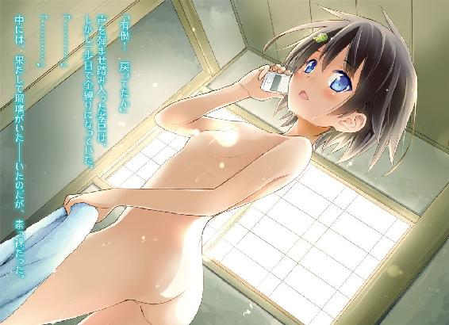

| 瑠璃色にボケた日常 03 | |
| 伊達康 | |
| KADOKAWA / メディアファクトリー (2013) | |

ＭＦ文庫Ｊ
瑠璃色にボケた日常３
伊達康
口絵・本文イラスト●えれっと
「みんな、準備はいいね？ ......ではこれより『お笑い研究会』のクリスマス恒例企画・瞬間大喜利を始めるよ。シンキングタイムなしの、即答形式の閃き勝負だ」
『何が恒例だよ。初めてじゃないか』
「今年から続けるんだよ。今日はその記念すべき第一回目......優勝者は多大なる名誉を得ることになるだろう」
「望むところよ。鴫原家当主の名にかけて、見事優勝してみせる」
「この三塚柘榴、一命を賭して臨む所存にございます」
『はあ......何もクリスマスに部室でこんなことやらなくても』
「紺野くん。ブツクサ言ってないで、マイクテストが終わったんならさっさと進行したまえ。こういうのはツッコミ役が司会を務めるものだ」
『別にマイクいらないと思うんだけど......』
「さあ、進めたまえ」
『分かったよ。やりゃいいんだろ、ったく......じゃあ第一問、行くぞ。〈ちょっと変なサンタが家にやってきた。どんなサンタ？〉......はい、鴫原から』
「お線香臭かった」
『まあ、趣旨はそういうことだよな。はい次、三塚』
「勃起していた」
『下ネタはもう少し待とうぜ。はい、有働』
「そのまま住み着いた」
『ちょっとどころか、かなり変だよ。ええと......勝者、鴫原』
「や、やったわ！ ありがとうございます、ご先祖様！」
『どういう加護だよ。じゃあ第二問。〈よく見たらトナカイも変だった。何故か？〉......はい、鴫原』
「え？ あ、えっと......れ、霊だった！」
『気を抜くなよ、即答大喜利だぞ。はい、三塚』
「勃起していた」
『トナカイもかよ！ まあ、ボケを重ねるのは悪くない。いわゆる天丼って手法だな。はい次、有働』
「駐禁でレッカー移動されていた」
『趣旨が少し違う！ 勝者、三塚』
「光栄にございます、紺野様」
『下ネタだけどな。じゃあ第三問。〈案の定プレゼントも変だった。何をくれた？〉......はい、鴫原』
「手製の茶釜」
『さっきから思ってたけど、そのサンタはお前の爺さんだろ。はい、三塚』
「ボーキサイト」
『ちょっと勃起を引きずってるじゃねえか！ アルミニウムの原料なんかいらないよ！ はい、有働！』
「サンタこと、塚田憲夫」
『自分をプレゼントするな！ 住み着く気満々じゃねえか！』
「ちなみに塚田は、横領が発覚して会社をクビになったばかりだった。夜の動物園でトナカイを盗んだ、その帰り道という設定だ」
『知らん！ いちいちディテールに凝るな！』
「それで紺野くん、三問目の勝者は誰だい？」
『......お前でいいよ』
「よし。ちなみに三問目は五億点だ。翠が一点、柘榴が一点、私が五億点。よって勝者は有働瑠璃に決定しました」
「ひ、卑怯だわ！」
「さすがは瑠璃様です」
「翠、最初にポイントを取るのは負けフラグだよ。最後の逆転劇があってこそ、番組は盛り上がる」
「番組って何よ！」
「しかしながら瑠璃様、こういう場合は全員が一点ずつ獲得して、四問目で決着という展開こそが定石でございます」
「む......確かに」
「そしてせっかく今、塚田憲夫という素晴らしいキャラクターが誕生したのです。もう少し彼の人生を追ってみましょう」
『どこが素晴らしいんだ！ ただのトナカイ泥棒だろ！』
「いいだろう柘榴。じゃあ四問目は、〈クビになって会社を去る塚田憲夫は、やっぱり少し変だった。それは何故か？〉だ。紺野くん、司会よろしく」
『はあ......じゃあ鴫原』
「憲夫は空を飛べた」
『名前で呼ぶな！ 意味もさっぱりだ！ はい、三塚！』
「勃起していなかった」
『どこも変じゃねえよ！ お前はもう勃起禁止！ はい、有働！』
「ほとばしる熱いパトスで思い出を裏切った」
『お前が裏切ったのは会社だ！ だからクビなんだ！』
「よし。勝者、有働瑠璃だ」
『何でだよ！』
「じゃあ敗者の二人には約束通り、アヘ顔ダブルピースをやってもらおう」
「き、聞いてないわ！」
「さすがは瑠璃様です。して、そのアヘ顔とはいかなるものでしょうか」
「まず表情を弛緩させ、白目を剝く。ちょうど魂を抜かれたような感じだ」
「生邪魔に似ていますね」
「それから脱力したまま、両手でこうダブルピース......あっ、私がしてどうするんだい！」
「さすがは瑠璃様です」
『......もう帰っていいか？』
１
部室を後にして校舎を出た途端、肌を刺すような寒風が紺野孝巳の顔面を叩いた。
マフラーで襟元を塞ぎ直し、ついでに両手にハアーッと息を吐きかける。溜息を兼ねた白い二酸化炭素は、瞬く間に冷たい空気の中へと霧散していった。
（期待した俺が馬鹿だった......まさかこうまで普段通りの活動内容とは）
──昨日、紺野孝巳が高校生となって初めて迎えたクリスマスイブは、泣けてくるほど寂しいものだった。冬休みで学校もなく、かといって特に予定もなく、自宅で筋トレや瞑想をしているうちに日が暮れてしまった。
（俺は一体、イブに何をしてるんだ......）
虚しさと切なさにヘコみつつ床に着こうとしたとき。ふと携帯がメールを着信した。それは有働瑠璃による、『お笑い研究会』メンバーへの一斉送信だった。
『明日、クリスマスイベントをやるよ。お昼一時に部室へ大集合』
いつもなら憂鬱でしかない招集。しかしクリスマスイベントという字面を見た瞬間、不覚にも孝巳は高揚してしまった。愚にもつかない活動ばかりの研究会だが、思えばあそこにはＳ級ランクの美少女が三人も揃っているのだ。
中学生のようないとけない容姿をした部長、トラブルメーカー・有働瑠璃。ボケ担当。
絶世の美貌を持った澄まし顔の副部長、クールビューティー・鴫原翠。ボケ担当。
高校生らしからぬ色香を漂わす新入部員、ミステリアスガール・三塚柘榴。ボケ担当。
そこに唯一の男子、ツッコミ担当の紺野孝巳を加えた四人が、現在の『お笑い研究会』のフルメンバーだ。一癖も二癖もある連中だが、あれだけの美少女たちとクリスマスを過ごせるのは、非常に役得と言えた。
（やっぱりケーキくらいは持っていった方がいいかな。サンタの衣装も用意するべきか？ いや、さすがにそれは浮かれ過ぎだ。でももしかして、誰かが着てきたりして......）
期待に胸を膨らませ、翌日いそいそと青鶴高校へやってきた孝巳を待っていたのは、よりによって「第一回・瞬間大喜利」という痛恨の企画だった。
小遣いをはたいて購入してきたショートケーキを数秒で平らげられ、命じられるまま司会進行役を務め、あとはひたすら突っ込み続けるだけ。クリスマスなのに誰一人として欠けることなく集まった少女たちは、三者三様にボケ倒し、スベり倒した。
終わった頃にはもう夕方。かくして孝巳のクリスマスは、イブ同様に虚無感と徒労感だけを残して終わろうとしている。
「来年は優勝賞品を用意しとこう。ハワイ旅行なんてどうだろう」
「瑠璃様、それは高校生の経済力では少し無理が......」
失意に打ちのめされて歩く孝巳の前方で、瑠璃と柘榴がそんな会話を交わしている。翠は家の用事があるということで、一足先に帰ってしまっていた。
「となると罰ゲームを強化する方向か。じゃあ『オッパイ餅つきの刑』でどうかな」
「何なんだそれは！」
「承知しました」
「するんじゃない！」
疲弊しながらも、半ば義務のごとく後ろから突っ込む。もはやこれは職業病だ。孝巳自身すでにそれを自覚しており、また諦めていた。
──気付けば微かに雪がちらついていた。
寒い。体もそうだが、何より心が寒い。早く家に帰りたい。
帰ったところで、筋トレや瞑想に勤しんでいる自分しか想像できなかったが。
「それでは、来年またお会い致しましょう。瑠璃様、紺野様、よいお年を」
駅の改札に来ると、柘榴がそう言って深々と頭を下げてきた。彼女の手には、膨れ上がった大きなボストンバッグがある。このまま新幹線で関西の実家へ帰省し、年末年始はあちらで過ごすそうだ。
「じゃあね柘榴。永堅さんによろしく。それから、コーちゃんにも」
「......はい」
瑠璃に言われると、柘榴の美しい白面が少しだけ翳りを帯びた。左目尻の泣き黒子が、より一層憂いを際立たせる。
（そりゃ複雑だよな......）
永堅とは、三塚家の当主でもある柘榴の父親。そしてコーちゃんとは──彼女の兄、三塚昂大のことだ。
二ヵ月ほど前。三塚昂大はこの町で殺人事件を起こし、孝巳たちと戦い敗北した。生者の幽霊・生邪魔を悪用した罪により、現在の彼は魂を抜かれ昏睡状態となっている。その目覚めがいつになるのか......それは孝巳にも、きっと柘榴にも分からない。
そんな孝巳の心中をよそに、柘榴が柔らかな表情で微笑みかけてくる。
「紺野様、ケーキをありがとうございました。来年のクリスマスは、私もお茶請けを持参致します」
「あ、ああ」
丁寧な所作でもう一度お辞儀をすると、柘榴が踵を返して歩き出した。緩いウェーブを帯びたツインテールが、行き交う人波の中へと消えていく。
......聞けば彼女は昨日と今日、クラス内外の多数の友人から遊びの誘いを受けていたらしい。協調性に富んでいる上に人当たりの良い柘榴は、転入生でありながら今や『お笑い研究会』で一番友達が多い人間となっていた。せっかくの誘いを全て断ってまで律儀にこちらを優先し、さらには部室で「勃起」を連呼している彼女が、孝巳にはよく分からなかった。
（こいつらがクリスマスに無頓着なのは、霊導師であることと関係あるんだろうか）
この世には、霊をあるべき正しき方向へ導く「霊導師」なる者たちが存在する。
青鶴高校『お笑い研究会』の女子三人は、全員がその世界の人間だ。霊導師には古来よりその役目を果たしてきた家系があり、彼女らはそこに生まれた生粋の霊能者なのだ。
「じゃ、俺たちも行くか」
柘榴が去っていった方向とは逆のプラットホームに上がると、孝巳と瑠璃は間もなくやってきた各駅停車に乗り込んだ。
座席はいくつか空いていたが、一駅で降りるのでドアの前に並んで立つことにする。閉まった扉の窓ガラスは、気温差で外が見えないほど結露していた。
「もう今年も終わりとは、早いもんだね」
動き出した電車と一緒に揺れながら、瑠璃がそんなベタな話題を振ってくる。
今日の彼女は可愛らしい真っ赤なＰコートを着込んでおり、何だか少しサンタっぽい。跳ねが目立つショートカットの猫っ毛には、いつもの河童型ヘアピンがくっついていた。
「今年は結構色んなことがあった。紺野くんもそうじゃない？」
「まあな」
交通事故による右肩の怪我で野球の道を絶たれ、チームメートだった友人の怨霊に悩まされ──そして孝巳は、この有働瑠璃と出会った。
「凄腕の怨霊師」であり「筋金入りのお笑いマニア」である瑠璃の相方になってからは、ひたすら霊とボケにまみれた毎日を送ってきた。お陰で今や孝巳は、着実に霊能者＆ツッコミとしての道を歩みつつある。
（まあ、今となっちゃそれも悪くないかもな）
まるで自覚なく生きてきたが、どうやら孝巳には霊導師としての素質があるらしい。
その力で誰かの役に立てるのなら、本腰を入れて鍛練に取り組むのもいいのかもしれない......様々な事件を経た今、孝巳はそう思っている。暇があれば霊力制御の基礎訓練である瞑想に励んでしまうのも、そのためだ。
「ところで紺野くん」
下車駅が間近に迫ったとき、ふと瑠璃が口調を改めてこちらを見上げてきた。
「明後日なんだけど、予定は空いてるかい？」
「......さて、どうだったかな」
即答を避けてとぼけてみせると、たちまち瑠璃がこれみよがしの嘆息を吐いてみせる。
「悲しい三文芝居はやめたまえ。クリスマスすら用事のなかった男が、平日に忙しいわけないじゃないか」
「ぐ......」
「君が隅にしか置けないことなど、出会ったときから承知している。予定の有無を訊いたのは、私のせめてもの気遣いだ」
「むぐ......」
「さあ、暇だと認めるんだ。もう楽になりたまえ」
「で、電車の中だと思いやがって......！」
周りの乗客を気にして、激しく言い返すことができない。会話が聞こえていたのか、斜め後ろに立っているオバサンがクスクスと笑っていた。
「一応聞いといてやる。明後日に何があるんだ？」
「翠の家に晩御飯を食べにいくのさ。小父さんが、是非よかったら君もと言うんだ」
「鴫原の親父さんが？」
翠の父・鴫原之臣とは面識がある。秋に鴫原邸の道場を借りて修行していたとき、一度だけ話をしたことがあった。
落ち着いた雰囲気を持つ、穏やかな人物だった。翠のことになると平静を失ってしまうようだが、一人娘を持つ男親とは、皆ああいうものなのかもしれない。
......間もなく電車が停車し、瑠璃と共に下車する。改札へと流れる人波を避け、ひとまず二人して備えつけの椅子に座った。
（鴫原家で夕食、か）
正直なところ、お邪魔していいものか判断に迷う。
瑠璃の指摘通り予定は全くないのだが、この年末の忙しい時期に押しかけるのは少々迷惑のような気がする。ただの部活仲間が、しかも男が、一家団欒の場にノコノコ顔を出していいのだろうか。
返事を決めかねている孝巳に、カッパ少女がズイと顔を寄せながら、せがむように言い立てる。
「大丈夫だってば。向こうが誘ってくれてるんだから」
「俺もそうだけど......お前こそ、鴫原の家に気安く出入りしていいのか？」
実はそちらも気になっていた。
有働瑠璃は、霊導師の肩書きを剥奪され、その世界から追放されている身だ。対する鴫原家は、霊導界の支柱とされる名門中の名門......瑠璃を招くことによる体裁的な問題はないのだろうか。
「私も普段は寄りつかないようにしてるんだけどね。今回は特別だ」
「特別？」
「明後日、正確にはその深夜だけど、翠の『晦式』があるんだよ」
「ツゴモリ、シキ？」
聞き慣れない響きに、知らず眉根が寄る。すでに電車は去り、プラットホームには孝巳たちしか残っていなかった。
「簡単に言えば、あの家の年末恒例イベントだ。晦と言っても三十一日にやるわけじゃなく、その年最後の新月の夜に行われる」
「それは具体的に何をするものなんだ？」
「憑けている守護霊と戦うのさ。翠の場合は、禽踊くんと牙穿たんだね」
「守護霊と......？」
鴫原翠は、二体の動物霊を守護霊として従えている。
鷹の禽踊と、狼の牙穿──数百年の長きに渡って鴫原家に使役されてきた、そんじょそこらの霊とは格が違う百戦錬磨の獣霊たちだ。
孝巳も何度か助けられたことがあるが、彼らの発する息が詰まるほどの霊圧には未だに慣れることができずにいる。普通の鷹と狼でも脅威なのに、あの二匹はさらに竜巻や業火まで起こしたりするのだ。孝巳の中では「霊」と言うよりも、もはや「怪獣」に近い存在だった。
「何で守護霊と戦うんだ？」
「再契約を結ぶためだよ。獣霊というのは長くこき使っていると、たまに言うことを聞かなくなったりする。生きているペットでも、そういうことがあるだろう？」
「はあ」
「だから、定期的に力関係を示してやらないといけないのさ。『獣筋』三家は毎年一回、その儀式を年末に行うことにしている。それが晦式だ」
自身の守護霊と戦い、再契約を結ぶ。翠の場合は二体いるから、両方に勝たなければならないということか。
「そういう意味でも、複数の獣霊を従えるのは大変なんだ。まあ、あの守護霊ズは今さら主人に歯向かったりしないだろうから、本当は晦式なんて必要ないんだけど......どちらかと言えば、翠の力量を確認するためにやってるんだろうね」
「なるほど。それを応援しようってわけか」
「ここ数年は行ってやれなかったからね。でも、理由はそれだけじゃない」
やにわに瑠璃の口端がニヤリと吊り上がった。猫のように目を光らせ、小さな舌で上唇をペロリと舐める。
「晦式の夜、鴫原家はお寿司の出前を取る」
「............」
「特上寿司だ」
「......そっちが本命か」
今のペロリの意味が分かり、孝巳は呆れ声を返した。珍しく親友らしい言動をしているかと思えば、何と不純な動機だ。
「失礼な。目的はあくまで翠の応援だ。ただ、目の前にお寿司があるならば、思わず手を差し伸ばさずにはいられない......それは人として当然の行為だ」
「カッコよく食い意地を張るな」
「しかしながら、一つだけ厄介な問題がある」
そこでカッパ少女が声のトーンを落とし、しかめっ面で腕を組んだ。厚手の黒タイツに包まれた両足をブラブラさせ、器用に鼻で溜息をつく。
「晦式は、鴫原家だけでやるものじゃなくてね。他の御三家の当主たちも参加するんだ」
「他の御三家？」
「鴫原の分家、鴇田と鳰森だよ」
霊導界には古くより、世襲制を敷く家々を中心に構成された組織がある。その組織は現在、獣を守護霊とする『獣筋』三家によって取り仕切られているという。
本家・鴫原家の当主とは、すなわち御三家を統べる総帥。ひいては組織全体の要......つまり、それが翠だ。
「残念ながら、私はその分家たちと折り合いが良くない。というか嫌われている」
「それってやっぱり......親父さん絡みの件か」
瑠璃がまるで他人事のように「まあね」と言った。
霊導師だった父親の魂を怨霊にしてしまった彼女は、その霊障を防ぐために無関係の霊たちを私的に利用してきた。組織を追放されてしまったのも、その蛮行のせいだ。
「でも、もともと私とあの二家は水と油なんだ。あそこの当主たちは、冗談が通じない」
無理もないだろう。古式ゆかしき霊導家の当主たちと、ボケこそ正義と疑わない瑠璃では、反りが合うわけがないと思う。
「特に鳰森の当主は、私を目の敵にしている。昔、彼の眼鏡をお尻で押し潰したことがあってね、それ以来の犬猿の仲だ」
「そのまま座っちまったのか？」
「私は悪くない。大事な眼鏡を座布団の上なんかに置いておく方が悪いんだ」
「それは、まあ......」
確かにそれなら不可抗力かもしれない。いつまでも根に持つのは、相手も少し大人気ない気がする。
「理不尽な話だと思わない？」
「そうだな。不慮の事故だったんだし、大事な眼鏡だとしても」
「あんなの、誰だってネタ振りだと思うよ」
「知ってて座ったのか！」
前言撤回。そりゃ相手も怒るだろう。
「私にとって『待て！ 座るな！』とは、『よし！ 座れ！』という意味だ。それで笑いが取れたんだから、安いものだろうに」
「理不尽過ぎるだろ！」
「全くだ」
「お前だよ！」
寒さにめげず声を張る孝巳を見て満足げにほくそ笑むと、瑠璃が閑話休題とばかりに再びこちらへ身を乗り出してきた。長い睫毛を湛えた黒目がちの瞳は、極小のプラネタリウムのようだった。
「そんなわけでさ。柘榴は帰省しちゃったけど、君は来るだろ？」
「......そうだな」
翠の激励という目的があるなら、お邪魔させてもらってもいいかもしれない。というか、今の話を聞いた以上、こいつを一人で鴫原邸に行かせることがとても心配だ。
「分かった。俺も行くよ」
「うむ。それでこそ暇人だ」
「うるせぇ」
いつものペースに巻き込まれ、孝巳は彼女の誘いを受けてしまった。
そこに今年最大の事件が待ち受けていることなど──その時は知る由もなかった。
２
その翌日。
朝から暇をもてあました孝巳は、ジャージに着替えてランニングに出ることにした。
イヤホンを耳に差し、目的もなく土手や国道を軽く流していく。聴いているのは二十曲ほどで構成されたアニソンのメドレーだ。翠が「合いの手を覚えておいて」と強引に貸してきた、ベストアルバムのＣＤだった。
（最近のアニメソングはよく出来てるな。こういうのって、てっきり『ゼット』を連呼するもんだと思ってたけど）
そんなことを考えながら、住宅街を適当に左右へ折れる。今日も耳が千切れそうなほど寒かったが、走っているお陰で体はポカポカとしていた。
......一時間ほど街を巡っている間に、孝巳は久し振りに霊を目撃した。それも、立て続けに二体だ。
一体は国道沿いの自販機の横。もう一体は踏切の中央。どちらも陰鬱な表情で深く項垂れ、恨めしげに地面を睨んでいた。多分、怨霊だろう。
死者の魂には、必ずそれを引き留めた生者がいる。
引き留められた霊たちは、他者から様々な「化けて出た理由」を与えられ、それをそのまま存在理由としてしまう。そして、恨みや無念など「負」の理由付けをされた霊は──時に災厄を撒き散らす存在となる。
（でも、悪さはしてないみたいだし......）
悪質な怨霊ならば速やかにあの世へ還すべきだが、それは霊導師でもない孝巳が生兵法で行うことじゃない。下手にしゃしゃり出れば、事態を悪化させてしまう恐れがある......それを散々に学んできた孝巳は、当面は彼らを放置してランニングを続けた。
そろそろどこかで休憩しようと思った頃、ちょうど前方に小さな公園を発見した。
イヤホンを抜きながら、早速そちらへ足を向ける。飲み物が欲しかったが、店も自販機もないので仕方なく諦めた。
......入ってみると、予想以上に簡素な公園だった。
三方を民家に挟まれた、鉄棒とベンチがあるだけのうら寂れた空間。鬱蒼と茂る木々に囲まれているためか、やけに薄暗い。気の向くままに走っていたので、詳しい場所は把握できていなかった。
「あれ？」
その公園に、見慣れた顔がいた。
一人でベンチに腰掛けている、青鶴高校のブレザーを着た長身の美少女。行儀良く足を揃え、この寒空にコートも着ず、膝の上に広げた手帳を熱心に見詰めている。栗毛のロングヘアーが微風に撫でられ、柔らかく揺れていた。
「よお、鴫原じゃないか」
早速歩み寄りつつ声をかけたものの、鴫原翠は無反応でうつむいたままだった。何やらブツブツと呟き、手帳に指先を這わせている。
「おい、鴫原」
「お正月はどうしているのかしら......」
「おいって」
「一年の計は元旦にあり......」
「なあ」
「初詣、コマ回し......」
「し・ぎ・は・ら！」
「えっ？」
間近で声を張り上げると、ようやく翠がビクリと顔を跳ね上げた。たちどころに目の前の孝巳に気付き、さっと顔色を変える。
「こ、紺野くんっ？」
「気付くのが遅いぞ。隙だらけだ」
「ど、ど、どうしてここに？」
何だか異常に狼狽していた。大急ぎで手帳を閉じると、それを素早くお尻の下に敷いて澄まし顔を取り繕う。連発する咳払いが、いかにも空々しかった。
「ランニングしてたんだよ。そっか、お前んちの近所だったか......で、こんな所で何してるんだ？」
「な、何も。別に怪しいことはしていないわ。ちょっと宇宙と交信していただけよ」
「すこぶる怪しいよ」
一応突っ込むと、断りを入れて彼女の隣に腰を下ろす。せっかく会ったのだから、明日の訪問の話をしようと思っていた。
翠が胸に垂れた髪をしきりに指先で弄くっている。どうにか落ち着きを取り戻した彼女は、「こんな所で会うなんて奇遇ね」と、今さらながらのコメントをよこしてきた。
「明日、有働とお邪魔するよ」
「......ええ。聞いているわ」
頷きながら返してきた声には、心なしか覇気が感じられなかった。
彼女に限って、禽踊と牙穿に勝つ自信がないとは考えにくい。なら、純粋にあの二匹と戦うこと自体が憂鬱なのだろうか。
「浮かない顔だな。もしかして、晦式ってのが不安なのか？」
「そ、そういうわけじゃ」
「今日は明日に備えてゆっくり休んだ方がいいぞ。体調は万全にしとくべきだ」
釈に説法だとは思ったが、とにかくそんな進言をしてみる。
すると、翠が溜息と共に前傾姿勢となり、膝の上に頰杖をついた。枝毛一つない艶やかな長髪から、シャンプーの香りがほのかに漂ってくる。
「それは分かってるんだけど......家にいると、息が詰まっちゃうの。月長がもう来ているから」
「月長？」
「鳰森月長。鴫原の分家に当たる、鳰森家の当主よ。組織における私の右腕」
それは晦式に参加する、御三家の人間か。鳰森家の当主ということは......おそらく瑠璃に眼鏡を壊された人だ。
「その月長さんと一緒にいたくないのか？ 分家ってことは、親戚みたいなもんだろ？」
「私──霊導界では色々とあるの」
頰杖をついたまま、翠が独り言のように語り出す。いつもの毅然とした態度ではなく、何だか友達に人生相談でもする普通の女子高生みたいだった。
「組織を統べる『獣筋』三家......その総帥を、成人すらしていない小娘に任せて大丈夫なのか？ 本当に組織をまとめる力があるのか？ って」
「............」
「トップがただの神輿では、いざというときに統制が取れなくなる。鴫原は代替わりが早過ぎたのではないか......そう言われているわ」
つまり翠は、周囲から総帥であることを疑問視されているのか。
でも、分からないでもない。いかに優秀だとはいえ、彼女はまだ高校生だ。父親の鴫原之臣が健在なのだから、当主を継ぐにしてもせめて高校卒業ぐらいまで待ってもよかったんじゃ？ 孝巳も常々そう思っていた。
「月長は、そんな反対派の代表格なの」
「え？」
その思わぬ告白に、孝巳はパチパチと目をしばたたかせた。
身内であるはずの鳰森家の当主が、まさかリコールの急先鋒とは。
「優秀な霊導師だけど、私は月長が少し苦手。口を開けば嫌味ばかりなんだから」
家のことで愚痴る彼女は珍しい。これまでも霊導界のことでストレスを溜め込んでいる節はあったが、それは孝巳の考える以上に深刻なものだったのかもしれない。
「お前自身はどうなんだよ。アタマ張ることに自信がないのか？」
「そんなことないわ」
むっと唇を尖らせた翠に、孝巳は「だったらいいじゃないか」と明るく笑ってみせた。
「俺は、霊導師としての鴫原翠を少しは知ってるつもりだ。部外者が言っても気休めにしかならないだろうけど、お前は鴫原家の当主として充分頑張ってると思うぞ」
「............」
「有働のことも、三塚のことも、お前がいなけりゃ解決してなかっただろうしな」
翠がいなければ、きっと瑠璃は今でも多数の怨霊を憑けて暮らしていただろう。三塚昂大という凶悪な霊能者が結果的にこの町でたった一人の犠牲者しか出さなかったのも、翠の対応が的確だったお陰だ。
「大丈夫だよ。いずれ周りも分かってくれる」
「そうかしら......」
「お前はいつもみたいに、偉そうにドッシリ構えとけばいいんだ」
「貴方、私のことをどんな目で見てるの？」
ジロリと横目で睨んできた翠は、いつもの彼女に戻っていた。どうやら少しは元気が出たみたいだ。......激励の役目は、すでに終わったような気がする。
「とりあえず、明日は頑張れよ。三塚は来れないけど、有働は応援する気満々だったぞ」
「お寿司が目当てでしょう」
お見通しか。さすが親友だ。
「でもそうね。貴方の言う通り、今は晦式だわ。何たって相手は禽踊と牙穿だもの、気は抜けないわ」
翠が胸の前で両拳を固め、フンと気合いを入れる。同時にたわわな膨らみが一度ユサリと揺れた。
（この巨乳は戦いの邪魔にならないんだろうか......）
思わず凝視してしまった己を心で叱責し、ベンチから勢いよく立ち上がる。
「それじゃ、俺はそろそろ行くよ。お前もいつまでもこんな所にいたら風邪引いちまうぞ」
ポケットからイヤホンを取り出し、再び耳に差す。
と、それを見た翠が興味深げな瞳で尋ねてきた。
「それ、何を聴いてるの？」
「お前に借りたアニソンだよ。テンポのいい曲が多いから、ランニングに丁度いい」
途端に翠の顔が嬉しそうに綻んだ。すぐに表情を元に戻すと、肩にかかった髪をぎこちなく払う。この癖は出会ったときから変わらない。
「そ、そう、いい心掛けだわ。今度また新しいＣＤを貸してあげる」
「まだあるのか」
「ちゃんと全部覚えてね。次のカラオケを楽しみにしてるから。禽踊と牙穿も、最近やっとマラカスを上手にくわえられるようになったの」
「やめてやれ」
「私の守護霊である以上、これは必修項目よ」
「明日仕返しされるなよ？ それじゃあな」
「あ、あの、待って紺野くん」
歩き出すや否や、また慌てて翠が呼び止めてくる。
妙に改まった声音に振り返ると、彼女は立ち上がっていた。手帳を胸に押し当てるように抱き、盛んに目を泳がせている。
「どうした？」
「............」
「まだ何かあるなら聞くぞ。愚痴は全部吐き出しとけよ」
「そ、そうじゃないの。一つお願いがあって......」
「お願い？」
尋ね返したものの、翠は言葉を発する前に唇を止めてしまった。こちらと視線を合わせようとせず、動悸を抑えるように手帳を抱く手に力を込めている。そんなに言いにくい頼み事なのだろうか。
しばらくの挙動不審ののち、やがて彼女は肩を落として「......ごめんなさい。やっぱり何でもないわ」と諦めたように小さく首を振った。
「何だよ、気になるじゃないか」
「た、大したことじゃないの」
「なら言ってくれよ」
「............」
翠が口籠ったまま、上目遣いでチラチラとこちらを窺ってくる。長らく逡巡したあと、彼女は明後日の方を向いたまましどろもどろに切り出してきた。
「えっと......そう、瑠璃のことで相談があったの」
「有働のこと？」
「昨夜あの子からメールがあって、『来年はオッパイ餅つきになった』って」
「............」
正式決定したのか。
「私、意味がよく分からなくて」
「いやまあ、俺も意味なんて全く──」
「だから返信したの。『せめてオッパイ凧揚げにしない？』と」
「それも意味不明だ！」
思わず声を張り上げてしまう。散々溜めておいて何の相談だ。
「餅つきよりはマシよ」
「真面目に考えなくていいんだよ！ あいつは単にボケてるだけなんだ！」
「駄目だと言うなら代案を出しなさい。オッパイ何ならいいの？」
「まずオッパイに疑問を持て！」
「......なるほど、それもそうね。相談は以上よ」
「びっくりするほど大したことじゃなかったな......」
結局いつものごとくツッコミを余儀なくされる。
何故か翠は苦渋に満ちた顔で項垂れ、「私の馬鹿......！」と唇を噛み締めていた。
３
鴫原邸訪問の当日。いよいよ本格的に年の瀬となってきた、十二月二十七日の夜。
駅前まで迎えにきた瑠璃と合流した孝巳は今、屋敷への長い坂道を寒さに耐えながら歩いていた。
突き刺すような冷たい夜風に、顔がジンジンと痛む。日の落ちた山麓地は気温も一層低く、路肩の溝には氷が張っていた。
「今夜は特に冷えるな......」
「そうだね。半年前まで夏服を着ていた自分が、愚かでならないよ」
「夏だったからな」
「そして私は半年後、コートなどを着ている今の自分を愚かに思うんだろう」
「愚か尽くしだな」
顔面がかじかんで口を動かすのも億劫だったので、そんな相槌を適当に返しておく。
時刻はすでに九時を過ぎており、周囲に建ち並ぶ豪邸は廃墟のようにひっそりと静まり返っていた。曇天の空には月も星もなく、弱々しい街灯だけが暗闇を行く道標だ。
地面にコツコツ、キュイキュイと、孝巳の革靴と瑠璃のローファーが足音を刻んでいく。その規則正しいサウンドに、ふと瑠璃の腹の虫がグルルと割り込んできた。
「紺野くん、先に言っておく。イナリ寿司は全て私の物だ」
「寿司の前に、鴫原の応援だろ。それから、今日はいちいちボケるなよ」
言うだけ無駄のような気もしたが、一応釘を刺しておく。いざとなったら物理的に口でも塞ぐしかないかもしれない。
やがて進む道の先に、黒々とした巨大な山影が近付いてきた。
壁のごとく東西に広がる山脈から手前にせり出したあの山は、鴫原邸の背後にそびえる裏山だ。あの山までもが鴫原家の私有地だと知ったとき、孝巳は格差社会というものを初めて実感できた気がした。
「そういや有働」
「何だいトロ野くん」
「寿司は一旦忘れろ。......お前の家って、鴫原家と並ぶ名門だったんだろ？ でもお前の実家は割と普通の一軒家だよな」
一度だけ訪れたことがあるが、瑠璃の家はごくありふれた二階建て家屋だった。それでもかなり立派なのだが、鴫原邸の非常識な規模と比べると、ずいぶん控えめと言える。
「私の実家を知ってるのかい？」
「ああ、いや。秋に鴫原の親父さんから場所を聞いて、前を通ったことがあるだけだ」
実は侵入して敵と格闘したことがあるなんて、今さら言えるはずもない。現在の瑠璃が近所のマンションに引っ越していると知ったのは、そのあとのことだった。
「あそこは借家にしたから、今は別の人が住んでいる。残念だけど、忍び込んでも私の歯ブラシや縦笛はないよ」
「んなモンいるかっ」
寒いので、マフラーに口を埋めたままいささか雑に突っ込む。息で口周りが少しだけ暖かくなった。
「あ......でも、一つだけ置いてきた物があったかも」
「何だよ」
「小二のときに貰った優勝トロフィーだよ。しまった、持ってきた記憶がないや」
「優勝トロフィー？ 何の？」
「全国チビッコ相撲だ」
「出場するな！ そして優勝するな！」
結局耐え切れず全力で突っ込んでしまった。
「思い出の品なんだ。小五にして七十キロの巨漢、平岡くんを寄り切っての優勝だった」
「何でお前が勝てるんだ！」
「彼も感服してたよ。『おいどんの完敗でごわす』って言ってた」
「ベタなキャラだな平岡！」
周辺に配慮して声量を調節しつつも、キレを損なわぬようにリズムよく返す。いつの間にか身についた無駄なスキルだった。
口を押さえてシシシと笑っている瑠璃をよそに、咳払いと共に話を軌道修正する。彼女たちの家のことは、前々から訊こうと思っていたのだ。
「有働家と鴫原家って、格的にはほとんど変わらないんだろ？ そもそも霊導界のツートップが、何で同じ地域に住んでるんだ？」
組織に属する霊導家には、それぞれに担当する管轄地があるという。彼女たちの家が同じ町、それも目と鼻の先にあるのは、一体どうしてなのだろう。
瑠璃は少し面倒臭そうな表情をしたものの、質問に答えてくれた。
「有働家は、組織の中でも特殊な存在なんだ。他の家と違って、管轄地を持ってないのさ」
「管轄地がない？」
「有働はあくまで幽鬼専門の霊導家だ。幽鬼がいるならどこへだって赴く。だから管轄地というものが存在しない」
白い息を伴い、彼女は滔々と説明を紡ぐ。頭のカッパヘアピンが横風に踏ん張っていた。
「ずっと全国を転々としてきたんだけど、私が小学校へ上がるときに腰を落ち着けることにしたんだ。この地を選んだ理由は、パパと翠のお父さんが親友同士だったからだよ。あと、娘が同い年だったから」
「へぇ......」
有働瑠璃と鴫原翠の関係は、そこから始まって現在に至るわけだ。
「それまでの有働家と鴫原家は、凄くギスギスした関係だったらしいよ。組織の両巨頭だから、お互い変な対抗心があったんだろうね」
「お前らの父ちゃんが、その関係を変えたってことか」
「うん。とはいえ、分家たちとまで打ち解けたわけじゃない。鴇田家と鳰森家が私を嫌うのは、そういう背景もあったり......と、着いたよ」
気付けば、いつしか孝巳たちは門の前にいた。
まるで侵入者を拒むように、分厚い木造の扉が固く閉ざされている。両側には高い塀がどこまでも伸びており、広大な敷地を堅牢に囲んでいた。
（いつ来ても物々しいな......）
立ち尽くす孝巳を置いて、瑠璃が門柱のインターホンを押す。マイク部分に顔を近付けて「来た」と告げると、門の片隅にある潜り戸を開けてさっさと中へ入ってしまう。
「おい、待ってくれよっ」
慌てて孝巳も中へ入り、内側から戸を閉める。飛び石をピョンピョン跳ねながら先行していく赤いコートを追いつつ、両手で手早く髪を整えた。
今日は分家の人たちも来ている。あまり小汚ない格好はできないため、コートの中には制服を着てきた。ちゃんとしたよそ行きの私服を、実は孝巳は一着も持っていなかった。
五十メートルほどの道のりを行くと、ようやく母屋の明かりが迫ってきた。
正面の玄関からお邪魔するのは初めてだ。
孝巳は若干の緊張を覚えながら、無造作ヘアーにもう一度だけ手櫛を入れた。
「いらっしゃい」
玄関口では、すでに翠が出迎えるように待っていた。自宅にも拘わらず、相変わらずの制服姿だ。
「やあ翠、今日は頑張りたまえ。あんな二匹なんかボコボコにしてやるんだ」
ヒョイと手を上げてそう言った親友に、翠も口許に笑みを浮かべる。
「ええ。そのつもりよ」
「おい、少しは手加減してやれよ？ 世話になってるんだから」
口を挟みつつも、意気軒昂な翠の様子に孝巳は内心ほっとした。公園ではどこか沈んでいたが、今は気力も充実しているようだ。
「さあどうぞ。上がって」
翠に促され、部室の倍はあろうかという土間で靴を脱ぐ。次いで案内されるままに進んだ廊下は、まるで迷宮のように入り組んでいた。
（何て家だよ......）
外観から見てかなり広い屋敷なのは分かっていたが、実際はそれ以上だった。
廊下は何度も十字路となり、数度曲がる頃には方向感覚が怪しくなった。最初は左右に連なる戸を数えていたのだが、二十を超える頃には挫折してしまった。目印のように壁に掛けられた模造刀や水墨画は、どれもかなり高価そうに見えた。
（普通に暮らしてるだけでも、足腰が鍛えられそうだな）
家という概念からは考えられない距離をひたすら歩いていると、ふと翠が振り返って肩越しに瑠璃を見た。
「月長がいるわよ。いいのね？」
「いいよ。置物だと思っておくから」
そんな二人のやり取りから間もなく。ようやく目的地の広間に到着した。
宴会場かと見紛うほどの、広大な畳の間だった。部屋の中央には優に十人以上は座れるだろう座卓が縦に四つ並んでおり、その一つに二人の男が向かい合わせで座っていた。
「お、来たね」
孝巳たちに気付くと、こちらに背を向けて座っていた総髪の男性が立ち上がる。歩み寄ってきた彼は、翠の父・鴫原之臣だった。
「やあ、瑠璃ちゃんに孝巳くん。よく来てくれたね」
以前と同じ和服姿で、今日も陶芸家のような雰囲気を醸している。柔和に笑う細面は、やっぱりどことなく翠に似ていた。
「ご無沙汰しています。今日はお招き頂いて──」
孝巳の挨拶を遮って、瑠璃が「小父さん、お寿司来た？」と之臣に尋ねる。
続いて卓上に並ぶ豪勢な寿司桶たちを目聡く認めると、彼女は目を輝かせてそちらへ急行してしまった。勝手に座布団の一つに正座し、早くも小皿に醤油を注ぎ始める。
向かいに座る男が、そんな瑠璃を冷たい視線でジロリと射抜いた。次いで孝巳を一瞥してきた瞳もまた、過剰なまでに非友好的なものだった。
（あの人が鳰森月長さんだな）
銀縁眼鏡をかけた、二十代半ばの男だ。肩幅が広く、座っていてもかなり背が高いのが分かる。丁寧に撫でつけられた乱れのない髪に、皺一つないワイシャツとネクタイ。ピシリと背筋を伸ばし鎮座する姿は、愛想のなさも含めてお堅い役所の事務員みたいだった。
瑠璃にまだ食うなよと注意しつつ、改めて之臣に頭を下げる。ほとんど保護者のような心境だった。
「すみません。失礼な奴で......」
「相変わらず奔放な子だ。一本取られたよ」
「意地汚いだけよ」
翠が素っ気なく言い捨てて、そのまま瑠璃の元へ向かう。今にも寿司に手を伸ばしそうなカッパ少女をたしなめる姿は、本当のお姉さんのようだった。
「──あら、いらっしゃい」
瑠璃と翠に気を取られていた孝巳は、背後より突然かけられたそんな声にビクリと背筋を伸ばした。近付いてきた気配の全くない、完全な不意打ちだった。
振り向くと、そこに一人の女性がいた。この人はもしや......
「貴方が孝巳くんね。初めまして、翠の母の小百合です」
反応に窮する孝巳に構わず、女性は朗らかな笑顔と共にこちらをしげしげと観察してきた。鴫原小百合──やっぱり翠のお母さんか。
どことなくほんわかとした雰囲気の、優しそうな女性だった。やけに童顔で身長も低く、とても翠の母親とは思えない。否、とても高校生の娘がいるとは思えない。名門家の人間らしからぬ、気さくな物腰と佇まいだった。
まあ、嫁いできた人だから......と一人で納得しつつ、襟を正して頭を下げる。
「初めまして、紺野孝巳です。翠さんには日頃からお世話になっていまして......」
「男の子の友達を連れてくるなんて、本当にビックリだわぁ。あの子って頑固で偏屈だから、扱いに困るでしょう？」
「お、お母様！ そういうのは結構です！」
翠がたちまち腰を浮かし、座卓から叫声を飛ばしてくる。よくある親子のやり取りだが、翠が敬語であるところが鴫原家の家柄を端的に表していた。
そんな娘を「あらあら」といなし、小百合は微笑んだまま孝巳を食卓へと促してきた。
「寒かったでしょう？ 今お茶を煎れるわね。さあ、孝巳くんも座って」
４
それからすぐに食事が始まった。
体育館のような大広間の中、座卓の一つを挟んで六人が席に着く。片側に鴫原小百合、翠、瑠璃。反対側は鴫原之臣、鳰森月長、孝巳という配置だ。
（あれ？）
全員揃ったとばかりに開始された会食に、孝巳は心の中で首を傾げた。
この屋敷にはもう一人、祖父が暮らしているはずだ。それに、晦式とやらは御三家で行うものだと聞いている。......もう一つの分家、鴇田家の姿がない。
隣の月長を盗み見ると、彼は機械的にひたすら黙々と箸を動かしていた。特上寿司だというのに、砂でも噛んでいるかのような仏頂面だ。
そんな月長とは対照的に、正面の女性陣三人は和気藹々と食事を楽しんでいる。
「瑠璃ちゃん、よっぽどお腹がすいてたのねぇ」
「このために朝から何も食べずに来た」
「あら、駄目よぉ。ちゃんと三食摂らなくちゃ」
「全てはお寿司のためだ。アイライク・スシ」
「まあ瑠璃ちゃん！ 語学が堪能になったわねぇ」
「お母様、中一英語です」
誰一人として祖父や鴇田家のことに言及しない以上、孝巳も口をつぐむしかない。モヤモヤを抱えつつ寿司に意識を切り替えようとしたとき、図らずもその疑問を之臣が解消してくれた。
「さて。今年の晦式なんだが......知っての通り、鴇田家が欠席することになった」
父の言葉に、翠の顔が微かに曇る。
「さっき電話があって、ようやく詳しい話を聞けたよ。どうも当主の綾綱さんが体を壊して入院しているらしいんだ。鴇田家は後日、個別に晦式をやるとのことだ」
（病欠だったのか）
晦式とは、己の守護霊と戦う儀式だ。確かに体調を崩したままできるものじゃない。
「──果たして本当に病気なのですかな」
すると、箸を置いた鳰森月長が、意味ありげにそんな意見を述べた。イメージ通りに愛想の欠片もない、低く硬質な声音だった。
「鴇田もまた、現総帥に不満がある......その意思表示と取れなくもありませんか？」
当の翠本人を前にしての憚りない発言に、たちまち場が微妙な空気になる。嫌味ばかり言う人だと聞いていたが、その通りのようだ。
「相変わらず棘があるね、ツッキーは」
気まずい雰囲気の中、瑠璃がイナリ寿司を頰張りながらやれやれと呆れてみせた。
「くだらぬ名で私を呼ぶな、『凶姫』よ」
「もっと空気を読むことを覚えたまえ。あと、そこのウニをこちらへよこしたまえ」
月長の刺すような眼光を受け流し、瑠璃が身を乗り出して寿司桶のウニをひょいと摘まみ上げた。ちなみに『凶姫』とは、霊導師時代の有働瑠璃の二つ名だ。
「そもそも、御三家どころか組織にすら無関係のお前が、何故ここで平然と寿司を食っている？」
「そこにお寿司があるからだ」
ウニを口に放り込んだ少女に軽く舌を打ち、月長が忌々しげに吐き捨てる。
「......『凶姫』、私は冗談が嫌いだ。お前と無意味な会話をするつもりはない」
「私と紺野くんは、翠の友人として招かれてるんだ。君に私のお寿司タイムを邪魔する権利はない」
「フン。ならば余計な口は挟まず、黙って食っていろ。そして黙って帰るがいい」
さらに空気が悪くなってしまった。やっぱり瑠璃とはかなり折り合いが悪いようだ。
「御前、感心しませんな」
続いて月長が、矛先を翠に向ける。
「いくら個人的な付き合いがあるとはいえ、このような者らを晦式の夜に招待するとは。貴女はもう少し、鴫原家の当主としての自覚をお持ちになるべきだ。このままでは私も反対派をなだめ切れませんよ」
つい先ほどまで寡黙だった銀縁眼鏡が、堰を切ったように不満を言い募る。まだ出会ってものの数分だが、孝巳は早くもこの鳰森月長という男が苦手になりつつあった。
「まあまあ月長くん。一つ大目に見てくれないか。晦式をしくじらない以上、翠がウチの当主であることに問題はないだろう？」
場を和らげるべく、之臣が明るく取りなそうとする。しかし月長は険悪な表情を隠すことなく、なおも苦言を重ねた。
「鴫原家の象徴たる禽踊と牙穿。あの二体を同時に従える御前の力量には、私も素直に感服します。が、裏を返せばその一点のみが反対派を抑えている唯一の防波堤......その旨、努々お忘れなきよう」
翠が渋面で「分かっているわ」と短く返す。だが月長は止まらない。
「二度とこのような公私混同はやめて頂きたい。友人と遊びたいなら当主の座を降り、好きなだけお遊びになればいいでしょう」
......本当に嫌味ばかりだ。
本家である鴫原に、分家がここまで歯に衣着せぬ物言いをしていいのだろうか。つまりはそれだけ、翠が認められていないということか。孝巳まで悔しくなってしまう。
「ねえツッキー。仮に翠が当主に相応しくないなら、誰が御三家の総帥になるべきだと思うんだい？ まさか君じゃないよね」
出し抜けに瑠璃が投げたそんな問いに、月長が途端に気色ばむ。
「口を挟むなと言ったはずだ」
「翠を色眼鏡で見られるのは、私としても面白くない。悪いけど、ツッキーが総帥としての眼鏡にかなうとは思えないね。眼鏡違いも甚だしいよ。まずはレーシック手術を受けたまえ」
「部外者は黙っていろ！」
とうとう月長が声を荒らげ、座卓をダンと殴った。
瑠璃は悪びれることもなく、何食わぬ顔で寿司をモシャモシャ咀嚼している。本当にこいつは、人を怒らせるのが無駄に上手い。
本来なら諌めるのが自分の役目なのだろう。が、今ばかりはそんな気になれなかった。きっと瑠璃は、月長の態度に腹を立てている。そしてそれは孝巳も同じだった。
「御前。聞けば貴女はこの『凶姫』だけでなく、生邪魔屋の『首斬小町』とも懇意にされていると聞く。私的な交友関係に口を出すつもりはありませんが、そういった鼻摘み者たちを過剰に特別扱いすれば、周囲の疑念はますます──」
「月長！」
言い終わりを待たず、翠が一喝した。
座がピンと張り詰める。背後に連なるガラス戸を、風が軽く叩いた。
「総帥である私の行動に、それ以上口出しするのはやめなさい。立場をわきまえることね」
憤然たる翠の眼光に、初めて月長が気圧されたように口籠る。
「瑠璃と紺野くんは、お世話になった友人として食事に招いただけよ。文句はそれが晦式に支障を来したときしか聞かないわ」
「私は、その晦式に友人を招くという行為自体が問題であると──」
そこで再び之臣が「まあまあ」と割って入り、睨み合う二人をなだめすかした。
「食事時に揉め事はなしだよ。今や晦式はそれほど重大な儀式でもないだろう？ 大掃除や年賀状作りと同じ、単なる年末の恒例行事じゃないか」
「そうは言いますが之臣殿、公私のけじめはつけるべきではありませんか。本当はこの席に、三塚柘榴まで呼ぶつもりだったのでしょう？」
「親の私が言うのも何だが、その三塚家の跡目騒動を治めたのも、翠の尽力あればこそだよ。私は今のところ、娘が当主として不適合とは思っていない」
之臣の言い分はもっともだと思う。
確かに三塚昂大を倒したのは妹の柘榴だが、誘き寄せ捕らえる舞台を整えたのは翠の手腕だ。組織内で孤立している三塚家にあそこまで協力できたのは、彼女が公正な総帥だったからに他ならない。
「私も翠はよくやってると思うわぁ。自慢の娘だもの」
とどめに小百合にまでそう言われると、月長はようやく渋々と引き下がった。再び置物のように沈黙し、ウニの消えた寿司桶をねめつけている。
「二人は相変わらずバカ親だね」
「瑠璃ちゃん、そこは親バカって言って欲しいわぁ」
呑気に笑い合う瑠璃と小百合に、月長がフンと小さく鼻を鳴らす。やがて彼は湯飲みを乱暴に一つ呷り、「今宵の晦式......そう簡単にいくかな」と呟いた。
その言葉が聞こえたのは、おそらく孝巳だけだった。
５
それから何だかんだと雑談を交わしているうちに、あっという間に午後十一時過ぎとなっていた。
一時はどうなるかと思った場の空気も、瑠璃と小百合のお陰で和やかなものに戻った。月長もあれきり、一度も口を開くことはなかった。
「じゃあ、少し早いけど始めるかい？ 几帳面に零時を待つこともないだろう」
之臣の提案に、翠と月長が頷き立ち上がった。二人は早速それぞれに上着をまとい、無言のまま大広間を出ていってしまう。
座布団を枕に寝転がっていた瑠璃が、それに反応してムクリと上体を起こした。今しがたまで食べ過ぎでウンウン唸っていた彼女は、急ぎコートに袖を通しながら孝巳の腕を取ってきた。
「紺野くん、見送りに行こう」
「え？ ああ」
「早くするんだ。今日の目的を忘れちゃいけない」
「お前が言うなよ」
瑠璃と連れ立って大広間を辞すと、程なくして翠に追いついた。そのまま長い廊下を引き返し、玄関へと辿り着く。心なしか、来たときよりも短く感じた。
......庭に出ると、そこは灯籠の明かりだけが滲む深い暗闇だった。
翠が扉の脇で、懐中電灯の点灯を確認している。守護霊との戦いは裏山で行われるらしい。月明かりすらない深夜の山に入る以上、電灯は必需品だろう。
（この寒い中、今から山を登るのか......）
裏山と言っても、大きさはそれなりにある。山頂までは一時間以上かかるそうだし、道もほとんど切り開かれていないため、初めての人間なら遭難する恐れもあるそうだ。
数百年、ともすれば千年以上もの間、開発もされず同じ姿を残し続けてきた山......そう考えると何だか神秘的だ。
「それじゃあ、行ってくるわ」
「ファイトだよ翠。君は結構お寿司を食べた。できるだけカロリーを消費しないと、おデブになるよ」
「そうなったら、まず貴女を押し潰してやるわ」
憎まれ口の応酬ののち、翠が月長を伴って歩き出す。......すでに自身の守護霊とは、主従関係を一時解除しているとのことだ。
同行していいのかと思ったが、やっぱりそれは駄目らしい。形骸化された儀式だが、真剣勝負には変わらないのだろう。
やがて二人の姿が闇に消えると、瑠璃が「さて」とこちらを向いた。
「一時間もすれば帰ってくるよ。寒いから中へ入ろう」
再び玄関を上がり、瑠璃に連れられるまま入り組んだ廊下を突き進んでいく。
まるで我が家のごとく慣れた足取りで歩く彼女に追従していると、ふと周囲の様相が変わった。床や天井が真新しく、壁に並ぶ部屋の戸が洋式のドアになっている。どうやら新しく増築された一角のようだ。
「おい、さっきと道が違うぞ」
「翠の部屋に行くんだよ」
「な、何？」
聞き返したときには、瑠璃は一つのドアの前で立ち止まっていた。威張るように「ここだ」と告げてくると、そのまま無遠慮にノブを引く。
「待てよ。勝手に入っていいのか？」
「だって暇だもの」
「お前はいいかもしれないけど、俺が入るのは......」
さすがに翠の私室に無断で入るのは気が咎める。
こんなことが知れたら、翠が怒りかねない。というか、之臣が怒りかねない。彼が娘を溺愛していることを、孝巳は身に沁みて知っていた。
が、孝巳が尻込みしている間にも、瑠璃はさっさと中に入ってしまう。
「ま、待てってばっ」
「いいから寄っていきたまえ。一人で引き返したら迷子になるよ」
「............」
無念だが、その通りだ。道順など全く覚えていない。山ならともかく、家の中で遭難するような醜態は、できれば避けたかった。
仕方ない。翠には後ほどちゃんと謝ろう。そう決意した孝巳は、多少の罪悪感と好奇心を抱えながら部屋の中へと足を踏み入れた。
遠慮がちに入室した孝巳の目にまず飛び込んできたのは──畳ほどもある巨大な液晶テレビだった。
周辺に何やらオーディオ機器がゴチャゴチャとあり、傍らの無骨な鉄製ラックにＣＤが整頓されて並んでいる。部屋の中央に置かれたガラス製のテーブルには、無数のリモコンが山のように積まれていた。
視線を転じると、反対側の壁には大きな作業デスクがあった。その下にタワー型のパソコンがあり、机上にディスプレイが三台も連なっている。デスクの手前に陣取る大きなベッドには、何故かヌイグルミではなくエレキギターが寝かされていた。
（これが、鴫原の部屋？）
広さはざっと十六畳はあるだろうか。古風な屋敷の外観にはおよそ似つかわしくない、やたらシステマチックで現代的な一室だった。
「......意外だ」
「そう？ 翠は昔からマニアックだよ。ハマるとどこまでも突き進んでしまう」
脱いだコートをベッドに置いて、瑠璃が肩をすくめてみせる。露になったタートルネックの黒いウールセーターが、なかなかよく似合っていた。
「カラオケ好きなのは知ってたけど......あいつギターまで弾くのか？」
「もともとは琴を習ってたんだ。それがいつの間にか、エレキにまで手を出していた。弦楽器にハマったんだね」
翠にそんな凝り性な一面があるとは思わなかった。もしも彼女が今、お笑いにもハマりつつあるのだとしたら......事態は予想以上に深刻なんじゃないだろうか。
「紺野くん。パンツを物色するなら、そこの箪笥の下から二段目だ」
「俺を出入り禁止にする気か」
戯れ言と共に瑠璃がテレビを勝手につけ、画面の前にチョコンと正座する。そのままリモコンで次々とチャンネルを変えているのは、お笑い番組でも探しているからだろう。
とりあえず彼女の側まで行き、フローリングの床に腰を下ろす。何となく孝巳も正座してしまった。
学校一の美少女と名高い鴫原翠の、プライベートな空間。今そこに自分がいる。部屋は何だか女の子特有の甘い香りがして、それが孝巳の緊張を延々と持続させた。
「そ、そういや、鴫原のお爺さんはどうしたんだ？ さっきいなかったけど」
居心地の悪さから苦し紛れに問うと、瑠璃がチャンネルを変えながら答えてくる。
「鴫原家の人間は、みんな基本的にマイペースだ。顔を出さなかったところを見ると、お爺ちゃんは晦式には興味がないんだろう」
「はあ」
之臣の言った通り、晦式とは完全に形式的なもののようだ。
ふと画面にＣＭが映し出され、瑠璃がリモコンの手を止める。テレビから流れる歌を一緒にフンフン口ずさんでいるところを見ると、その歌が好きなのだろう。家電量販店のテーマソングだった。
「じゃあ、爺さんも屋敷にいることはいるんだな？」
「うん。顔を合わせずに済んだのはラッキーだよ。私とは犬猿の仲だから」
「爺さんともかよ......」
「もはやコヨーテとマンドリル並みの仲だと言っていい。あの妖怪は、ツッキー以上の難物だ。君も会わなくてよかったと思うよ」
「とりあえず、お前に敵が多いことだけは分かった」
瑠璃はそれきり黙り込むと、しばしボーッとテレビを眺めていた。しかしそれにもすぐに飽きたのか、今度はベッドに移動してギターを弄り始める。弦からビロレロと下手クソな音色が小さく流れ出た。
「最近は本格的なネタ番組がなくなったね。年末だっていうのにさ」
「まあな」
「漫才やコントが嫌いな人間なんて、この世に存在しないはずなんだ。昨今のテレビ業界は分かっていない」
間もなくギターにも飽きてしまったらしく、猫のようにくわわと欠伸をする。
時間的に無理もないのだが、このまま彼女に寝入られてしまうのは困る。翠が帰ってくるまでは、何とか起きていてもらわないと。
「おい、頼むから寝るなよ？ 晦式が無事終わったら、すぐに帰るぞ。いつまでも居座ってちゃ迷惑だからな」
「いざとなったら泊まっていけばいいよ。冬休みだし」
「爺さんや月長さんがいるんだぞ？」
「年に一度くらい構わないさ。翠だってたまに私のマンションへ泊まりに来るもの」
「そ、そうなのか？」
それは初耳だった。彼女たちが夜通し二人きりでいて、喧嘩にならないのだろうか。
「昔からなんだけど、翠は定期的に不眠症になるんだよ。でも不思議と、私を抱いて寝ると安眠できるんだ」
「お前を、抱く......？」
聞き捨てならない響きに、思わず食いついてしまう。
「ヌイグルミじゃ駄目みたいでね。お陰で私は、寝ぼけた翠にファーストキスを奪われた過去がある」
「......！」
「舌まで入れられた」
「............！」
それはすなわち、翠のファーストキスでもあったのだろうか。いずれにせよ、何とも甘美な話だ。その光景を想像し、孝巳は若干テンションが上がってしまった。
「何て言うか......幼馴染みって、いいもんだな」
「今の話から何でそうなるのさ。言っておくけど、翠は恐ろしく寝相が悪いんだ。一緒に寝たら、決まって朝には床に蹴り落とされている。翠の旦那さんになる人は大変だよ」
伸びをしつつ、瑠璃が壁の時計に目をやる。翠の帰還まではまだ時間があるようで、彼女は再びトコトコとテレビの前に戻ってきてくれた。
「仕方ないからゲームでもする？ 私のザンギエフの妙技を見せようか？」
「いや、それより」
煩悩を一旦追い出し、孝巳は姿勢を改めた。まだ翠が戻らないなら、今のうちに訊いておきたいことがある。
胸に去来するのは、昨日の公園での翠との会話。そして先ほどの広間での一幕だった。
「なあ有働。鴫原って......やっぱり色々と大変なのか」
「そりゃ組織のトップだからね。私たちには分からない苦労もいっぱいあるだろう」
「だよな......」
「でも、それは翠が自分で選んだ道だ。私たちが気に病むことじゃない」
「............」
それも少し冷たい気がする。何か力になってやれないのだろうか。自分たちにできるのは、本当に応援しかないのだろうか。
「大丈夫だよ。翠は君が思ってるほど弱くない。余計な心配はかえって逆効果だ」
瑠璃がこちらに体を向け、したり顔でそんな意見を述べてくる。短めのフレアスカートから、黒タイツに包まれた健康的な太股が覗いていた。
「無闇に手を差し伸べる行為は、翠のプライドを傷付けることにもなる。友達を過小評価するのは、自分を過大評価するのと同じくらい愚かなことだよ」
「何だよ、聞いた風なこと言いやがって」
「なかなかいい言葉だろ？ 伝説の格闘漫画、『負けるなリュウ！』からの引用だ」
「......知らねえ」
野球ばかりに人生を捧げてきた孝巳は、漫画やゲームにあまり詳しくない。さっき瑠璃が言ったザンギエフも、何者なのか分かっていなかった。
「君、もう少し色んなものに興味を持った方がいいよ？ だから友達ができないんだ」
「く......」
ぐうの音も出ない。
確かに様々な話題に通じていた方が、会話の足掛かりも増えるだろう。それをきっかけに友達となれる可能性だってある。しかし、まさかこいつに説教されるとは......
「その漫画、俺も試しに読んでみるか」
「是非そうしたまえ。きっとハマるよ」
「『負けるなリュウ！』だな。どこから出てるんだ？」
「私が小三のときに描いた漫画だ」
「作者お前かよ！」
深夜の他人の家であることも忘れて、思わず大声で突っ込んでしまう。
「素人漫画と侮るなかれ。血と汗と、涙と、あと諸々の体液に満ちた感動巨編だ」
「気持ち悪ぃよ！」
「じゃあ今度持ってくるね。五ページだし、すぐ読み終わるよ」
「どこが巨編だ！」
「続編の『だから、負けるなリュウ！』も併せてどうぞ」
「勝たせてやれ！」
「三部作なんだ。ちなみに最終作は『......もうええわ、リュウ』だ」
「見捨てるな！ リュウに恨みでもあんのか！」
「残念ながら翠には不評だった。主人公が不憫だって」
「言わんこっちゃねぇよ！」
職業病を放ち続ける孝巳を見て、瑠璃がケタケタと笑う。結局は彼女のペースに巻き込まれている自分が、たまらなく遺憾だった。
「紺野くん、安心して突っ込んでいいよ。翠の部屋は防音設備が施されているから、少しくらい喚いても──」
と、そこで瑠璃が言葉を止めた。
何やらポカンと口を半開きにして、人形のように固まっている。宙を見詰める切れ長の目が、みるみる鋭さを増していく。
「どうした？」
問うと同時に、瑠璃がガバリと立ち上がった。そのまま孝巳を置いて、矢のように部屋を出ていってしまう。
「う、有働!?」
明らかにただ事じゃなかった。
孝巳は自身も慌てて部屋を飛び出し、脱兎のごとく駆けていく瑠璃を追いかけた。
６
深夜の邸内にバタバタと響く足音もお構いなしに、瑠璃は物凄い勢いで疾走する。
何度も呼び止めたが、無駄だった。彼女はスピードを落とさず角を左右に折れ、一目散に廊下を駆け抜けていく。どうも玄関を目指しているようだった。
孝巳がようやく追いついたときには、瑠璃はすでに靴を履き、コートも着ずに外へ躍り出たところだった。制止の間もなく再び走り去ったその方向は──裏山だった。
「有働！ 待てって！」
彼女を追って自然公園のごとき竹林を抜け、松の小島が浮かぶ池の石橋を渡り、最果てに見えてきた鉄門のアーチを潜る。そこはもう、裏山の中だった。
急勾配をものともせず、瑠璃はどんどん孝巳との距離を開けていく。追いつくどころか、背中を見失わないようにするのが精一杯だった。
何せ道らしい道がなく、ひしめき合う木々がことごとく行く手を塞いでくるのだ。しかも新月の夜空は明かり一つなく、頼りは携帯のバックライトのみという有り様だった。
（早く連れ戻さないと......）
今は晦式の真っ最中のはず。もし邪魔でもしてしまったら、また鳰森月長に何を言われるか分かったもんじゃない。これ以上問題を起こすのはまずい。
......が、そんな思いも虚しく、結局孝巳は瑠璃とはぐれてしまった。
どれくらい来てしまったのか、もう分からない。景色は一向に様変わりせず、暖簾のような万朶が進むごとにビシバシと全身を叩いてくる。一度立ち止まって耳を澄ましてみたが、瑠璃の気配はすっかり途絶えてしまっていた。
（何て脚力してやがるんだよ......）
いつも部室でダラダラしているだけのくせに、どこにあんな体力があるのだろう。
孝巳だって足には自信があるつもりだ。ランニングを始めたお陰で、全盛期ほどではないにせよ体力も増えつつある。なのに。
（いや、体力じゃない。霊力の違いか）
人は体内の霊力を効果的に練ることにより、一時的に五感や身体能力の向上が可能となる。幼い頃よりその訓練を受けてきた瑠璃は、孝巳より数段それが巧みなのだ。
さすがは名門・有働家の娘......などと感心している場合ではない。このままでは本当に遭難してしまう。
携帯を鳴らしてみたが、瑠璃は出てくれなかった。諦めた孝巳は、とにかく行けるところまで一直線に前進する腹を決めた。
二十分ほどのち。草木を搔き分け進んでいると、前方の獣道が開けた。
辿り着いたのは、雑草が疎らに茂る広大な平地だった。ちょうど中腹辺りだろうか、雑木林にグルリと囲まれた、サッカーコート半面ほどもある天然の広場だ。腰をかけられそうな岩があちこちに点在しており、山頂までの休憩地点に適していた。
そこに、奇しくも瑠璃の姿があった。
彼女を発見できたことに安堵したかったが、状況はそれを許してくれなかった。
「あ......」
数メートル先で、こちらに背を向けしゃがみ込んでいる瑠璃。その腕に──翠が横たわっていた。
「し、鴫原!?」
ただならぬ事態に泡を食って駆け寄る。
まさか、翠がやられた？ 禽踊と牙穿に負けた？
「おい有働、何があった！ 鴫原はどうしたんだ！ 怪我してるのか！」
捲し立てる孝巳を無視して、瑠璃は先ほどから前方の一点をじっと睨んでいた。普段のおちゃらけた様子とは程遠い、らしくない真剣な顔付きだった。
その視線に倣うと──闇の中に人影があった。
全身を黒装束で包んだ、忍者のような男だった。いや、顔まで同色の布で覆われ完全に暗黒に溶け込んでいる姿は、どちらかと言えば黒子に近いだろうか。
もし孝巳だけだったら気付くことができなかっただろう。それほど一切の気配なく、そいつは周囲の闇に墨のごとく同化していた。
「鴫原家の二体の獣霊......確かに頂いた」
影男のくぐもった低い声が、深夜の山中に響く。
その声が紡いだ驚くべき言葉に、孝巳は愕然と息を呑んだ。
「頂いた......？」
禽踊と牙穿を？ つまりあの男は、翠を差し置いて二匹を屈服させ、自身の守護霊にしたということか？ あの桁外れの獣霊たちをまとめて倒したというのか？
否、単に戦って倒すだけなら、瑠璃や柘榴にだって可能かもしれない。が、守護霊にするとなると話は別だ。複数の守護霊を従えることは、いかに卓越した霊導師でも至難の業......それを為すには持って生まれた類稀なる霊感が不可欠なはず。
あの二匹は、もともと之臣と小百合が持っていた守護霊だと聞く。翠の父母とて、一体ずつを従えるのが限界だったのだ。ならばこの謎の男は、翠に匹敵するトップクラスの霊能者だということか？
月光すらない夜山のしじまを裂いて、影が一呼吸で口笛を二度鳴らす。
それに呼応するように彼の肩口と足下に顕現した巨大な鳥獣は、果たして孝巳もよく知る鷹と狼──禽踊と牙穿だった。
「......なるほど。守護霊が役目を離れる晦式を狙ったというわけかい」
硬直している孝巳の横で、瑠璃が冷たく男に問う。彼女らしい飄逸さが微塵もない、戦意に満ちた声だった。
「一応訊いておこう。君はどちらさんかな？」
「鴫原翠を総帥と仰ぐことに、疑問を持つ者」
影が無機質に、しかし韜晦することなく即答する。
「つまりツッキーの同類だね」
瑠璃は了解したとばかりに会話を打ち切り、気を失っている翠をそのまま孝巳へ押しつけてきた。「左腕が折れてるから、気をつけて」と一言残し、真っ向から影と対峙する。
慎重に翠を抱えたまま、孝巳はやむなく後方に下がった。腕の中で、美しい顔と髪が泥にまみれている。抱いた肩は細く、力を入れれば壊れてしまいそうだった。
影に向けて、瑠璃が一歩踏み出す。まだ切り札である幽鬼統合体・六黒を出す気配はなく、無防備のままだ。
「──『凶姫』・有働瑠璃」
黒い布に隠された口で、影が瑠璃の二つ名を呼ぶ。
「もはやお前は組織の人間でも、まして霊導師でもないはず」
「それがどうかしたかい」
「そんなお前が、何故『鵺御前』に与する？」
「私は翠の......親友だ」
言うなり瑠璃が地面を跳ねた。目にも止まらぬ速さで、一気に突貫をかける。
それを迎え撃つように、禽踊が影の肩を飛び立った。
あたかもチキンレースのごとく、少女と巨鳥が速度を落とさず急接近する。どちらかが身をかわすかと思いきや、両者は最後まで譲らず激しく正面衝突した。
直後、耳をつんざく破裂音が山の空気を揺るがせる。
霊気の小爆発である《空礫》の余波。爆竹のように連続するその振動は瞬く間に孝巳へと到来し、骨の芯までビリビリと浸透していった。
「くっ......！」
爆音の連鎖に顔をしかめて耐え、事態を確認すべく前方に目を凝らす。
禽踊が翼を羽ばたかせ、影の肩へと帰還するのが見えた。
一方の瑠璃はというと、激突地点で何事もなかったように仁王立ちしていた。が、そこに一つの異変があった。
「あ......」
偉そうにふんぞり返っている彼女の前に──一人の大柄な男がいた。
ズタボロの鎧を着た、長い髪を振り乱した、月代頭の落武者だった。まるで時代劇の撮影から抜け出してきたような、現代ではまず見かけない奇異なる風貌。薄汚れた顔に燃えるような怒りを湛えた、全身がぼんやりと透過した、足のない侍。
（まさか......幽鬼か？）
何百年もの間、何百人という人間から「恨み」の意思を与えられてきた怨霊。幽霊が進化した、最凶なる鬼。
有働瑠璃は、そんな鬼を自身に六体も憑けている。これまでは統合化された巨大骸骨しか見たことがなかったが、これが本来の幽鬼の姿──その一体か。
「牙穿、三分」
影男の命令に、続いて牙穿が動く。風のごとく地を駆けた漆黒の巨狼は、落武者が反応する前に一瞬でその脇をすり抜け、瑠璃へと襲いかかった。
再びラップ音が轟き、衝撃に圧された瑠璃の靴が土に轍を刻む。《空礫》の障壁を強引に突破した牙穿が、少女に向けて凶悪な犬歯を剥いた刹那。
瑠璃の背中から新たな武者が現れ、体当たりで巨狼を退けた。二体目の幽鬼だった。
（また出やがった......！）
攻撃を未遂に終えた牙穿に、すかさず二人の落武者が掴みかかる。
黒狼は巧みにその手をかわしつつ、追撃を諦めて一旦身を翻した。
「さすがなり、『凶姫』」
幽鬼の出現にも一切動揺することなく、黒装束が感嘆の声を上げる。
「さすがだって？ あからさまに手加減しておいて、何を言ってるんだい」
腹立たしげな瑠璃の返答に、男の愉快げな笑声が重なった。
「生憎だが、お前とやり合うつもりはない。座興はこれまでとしよう」
瑠璃の殺気を難なく受け流し、影が二体の獣霊をその場に残して背後の雑木林へと下がっていく。退くつもりか。
「部外者は介入無用。獣霊を取り戻したくば、鴫原翠の力を見せよ」
黒衣が木々の闇に溶けていく。やがてその気配が完全に途絶えると同時に、道を阻んでこちらを牽制していた禽踊と牙穿も、霧のように姿を搔き消した。
瑠璃は追うつもりはないらしく、しばし林を睨んだのちにこちらへ引き返してきた。......二体の幽鬼は、すでにどこにもいなかった。
「有働......」
「紺野くん、とりあえず屋敷に戻ろう」
相変わらず不機嫌な表情でそう言いながら、瑠璃が親友の顔を覗き込む。
続き翠についた泥をせっせと払い始めた彼女の姿は、まるで大切な宝物を汚されてむくれる子供のようだった。
１
負傷した翠を負ぶって屋敷に戻った頃には、もう深夜一時だった。
先ほどの大広間へ行き、待っていた之臣たちに事の次第を説明する。未だ目を覚まさない翠はそのまま部屋へと運び、ベッドで眠らせることとなった。
応急手当てを行った之臣によると、左前腕部の他に左手小指も骨折しているらしい。加えて各所の打撲と、多数の軽い裂傷......それらの傷は、おそらく禽踊と牙穿によるものだという。
（まさかこんなことになるなんて......）
今さら帰宅するわけにもいかず、孝巳は「友達の家に泊まる」と親にメールを入れ、瑠璃と共に屋敷へ留まることにした。月長が如実にしかめっ面をしてきたが、このまま翠を放って帰ることなどできなかった。
「之臣殿。どうなさるおつもりで？」
今、大広間では之臣、小百合、そして月長の三人が緊急の会議を開いている。
彼らから一つ飛ばした座卓で、孝巳と瑠璃は会話もなく並んで座っていた。目の前には小百合の煎れてくれた熱い緑茶があったが、のほほんと味わう気にはなれなかった。
「鴫原家はこの期に及んで、まだ彼女を当主にしておくのですか」
重苦しい空気が蔓延する室内に、月長の詰責が続く。
「やはり彼女には、総帥など早過ぎたのです。この事態を反対派たちが知れば、もはや御前への不満は抑え切れますまい」
「いや、しかしだね......」
「ただでさえ御前のような年端もいかぬ少女にかしずくのを厭う家は多いのです。その彼女が不覚を取ったとあれば、日和見の中立派たちもこぞって態度を改めましょう」
「............」
返答に弱り口籠った夫をフォローするように、小百合が急須を取って月長の湯飲みにお茶を注ぎ直す。彼女は相変わらずの調子で、「ところで月長さん、貴方の晦式の方は？」とやんわり尋ねた。
「ご心配なく。自身の獣霊に手を噛まれるほど、私は未熟者ではありません」
（......嫌味が最高潮に達してるな）
閉口する孝巳の傍らでは、瑠璃が先ほどから地蔵のように沈黙している。その横顔は依然としてむっつりとしていたが、裏山で見せた殺気立った気配は消え失せていた。
「紺野くん」
ふと囁いてきた瑠璃に、「何だ」と小声で応える。
「お腹がすいた。お寿司が残ってないか、小母さんに訊いてみて」
「......この状況で訊けるほど、俺は豪胆じゃない」
どうやらすっかり普段の彼女のようだった。
それからしばらくののち。孝巳は瑠璃に同行を促され、翠の部屋へと赴いた。
これ以上の勝手な行動は避けたかったのだが、「私たちが広間にいたら、話しにくいこともあるだろう。席を外そう」と瑠璃が殊勝なことを言うので、従うしかなかった。
部屋を訪れると、翠はベッドで眠ったままだった。
着ていた制服はハンガーに掛けられ、泥が綺麗に落としてある。どうやら小百合が着替えさせたらしく、毛布から覗くその首元には寝間着の襟が見えていた。
「............」
枕元に立ち友人を見下ろしている瑠璃の背後から、孝巳も控えめに様子を窺う。
表情のない、無防備な寝顔だった。長い睫毛を伏せて静かに寝息を立てている彼女は、さながらお伽噺のお姫様のようだ。
（とんでもないことになっちまったな......）
まさか翠が晦式に失敗したばかりか、禽踊と牙穿を奪われてしまうなんて。
あの襲撃者は、まだ裏山に潜んでいるのだろうか。去り際の言葉を聞く限り、このまま大人しく手を引くとは思えない。また現れると考えた方がいいだろう。
──と、翠が「う......ん」と吐息を漏らし、小さく身をよじった。
当たり前だが、彼女の寝姿などを見るのは初めてだ。毛布の中でモゾモゾしている様がやけに色っぽい。しどけなく乱れた栗色の髪が、艶かしさに拍車をかけている。何だか見てはいけないものを見ている気分だった。
孝巳が目のやり場に困っていると、唐突に瑠璃がベッドへ手を伸ばし、そのまま毛布を勢いよく捲った。
寝間着をはち切らんばかりの大きな胸の膨らみが、たちまち両目に飛び込んでくる。慌てて瑠璃をたしなめながらも、孝巳はその双丘に釘付けになってしまった。
「お、おいよせって。何してんだっ」
こちらの掣肘などお構いなしに、瑠璃の手がたわわな胸に迫る。次いで彼女は紅葉のような両掌を目一杯に開いたかと思うと──いきなり翠の乳房を鷲掴みにし、これでもかと揉みしだき始めた。
「ん............え......にゃああああっ？」
異変を察知した翠が、途端に奇妙な悲鳴を上げて跳ね起きた。目を白黒させてキョロキョロと左右を見回した彼女は、眼前で両手をワキワキさせているカッパ少女にようやく事態を把握したようだった。
「うむ。脂肪確認」
「ぶ、ぶん殴るわよ！」
「ノーブラも確認」
「普通に起こしなさい！」
「何だ、元気じゃないか」
「これ以上大きくなったらどうしてくれるのっ？」
寝起きにも拘わらず真っ赤になって怒鳴り散らす翠の視線が、はたと孝巳と合わさった。彼女は「ひゃっ」と慌てて毛布を引っ掴み、抱き締めるようにして胸元を隠した。その際に左手に痛みが走ったのか、西洋人形のごとき顔が苦悶に歪む。
「こ、紺野くんまで連れてくるなんて......」
恥ずかしげに毛布にくるまっている翠に、瑠璃が「そんなことより」と真面目な面持ちでズイと詰め寄る。
「翠、状況は理解しているかい？」
「......ええ」
「なら広間に行こう。何があったのか全て吐きたまえ」
「ま、待てよ有働。まだ鴫原は怪我が......」
思わず割り込んだが、孝巳の意見をはねつけたのは他ならぬ翠自身だった。
「私は大丈夫よ。すぐに着替えるから、先に行ってて」
数分後。大広間には食事のときと同じ六人の姿があった。
片側に之臣、月長、孝巳。対面に小百合、翠、瑠璃。こんなときだというのに、翠の祖父はやっぱり姿を現さなかった。
一様に難しい顔で黙り込む中、再び制服姿となった翠が事件の経緯を説明する。
彼女が言うには、当初の予定通り禽踊と牙穿を捜している途中、いきなり黒装束の賊に襲撃を受けたということだ。敵はすでに二体を従えており、そのまま戦闘となり──そして翠は敗北した。
「お前がやられるほどの手練か」
低く唸った之臣に、翠が悄然と項垂れる。いつもの精悍さがない弱々しい姿だった。
「......申し訳ありません。全ては私の未熟が招いた失態です」
包帯で吊り下げられた左腕が痛々しい。本来なら大事を取って寝ているべき怪我人だ。しかし今の彼女には、それすら許されない。
そこで月長がおもむろに顔を上げ、前方の瑠璃を険しく見据えた。
「鴫原翠を総帥と仰ぐことに、疑問を持つ者......賊はそう言ったのだな？」
カッパ少女が湯飲みをすすりながら「まあね」と返す。影がそう言ったのは、孝巳もこの耳で聞いている。
「となると、賊は組織の人間か。現総帥によほど不満を持っていると見える......今のこの有り様では無理もないが」
翠が強く唇を噛んだ。鳰森月長の舌は、手負いの少女相手にも全く容赦がない。
再び沈黙が支配する中、之臣が重い嘆息ののちに告げる。
「ともかく。こうなってしまっては、禽踊と牙穿の封印・強制成仏も考えねばならない」
「ま、待って下さい！」
その言葉に、翠が血相を変えて身を乗り出した。
「あの子たちに咎はありません！」
「お前の気持ちは分かる。愛着もあるだろう。しかし、我らに牙を剥く存在となった獣霊を、この世に留めておくわけにはいかない」
之臣は感情を押し殺し、「禽踊と牙穿は──守護霊失格だ」と酷薄に断じた。
「承服致しかねます」
そんな父に、翠は頑として首を振る。まるで我が子を庇うように、彼女は真っ向から猛然と反論を続けた。
「禽踊と牙穿が守護霊失格なのは、あの場において私に味方していた場合です。あの子たちは、今の主の命令を遂行したに過ぎません」
「............」
「私の晦式に、賊を倒すという目的が増えただけです。二匹は私が──必ず取り戻します」
息巻く翠の決意に異を唱えたのは、またしても銀縁眼鏡の霊導師だった。
「倒すと仰るが、その左腕でいかがなさるおつもりか？」
「それは......」
「賊がかなりの手練であることは、戦った御前が一番ご存知のはず。その相手に、次は片腕だけで勝つと？ 失礼ながら、世迷い言にしか聞こえませんな」
翠が言葉を詰まらせる。悔しそうにうつむく彼女を責め立てる月長は、どこかサディスティックに見えた。
「戦うだけが方法ではないでしょう。賊の目的は判明している。御前が総帥の座を降りればいいのです。禽踊と牙穿を取り戻す方法としては、そちらの方がよほど現実的......」
「総帥を降りるつもりはないわ」
月長の発言を遮り、翠がきっぱりと断言した。
「お爺様は、私の力を信じて鴫原の当主を託された。敵の要求に屈してその役目を放棄するなんて、私にはできない」
「守護霊を失い、手負いとなり、なおも我を通すので？ そんな御前の『総帥ごっこ』が此度の引き金であると何故お分かりにならない？ そもそも貴女は──」
思わず孝巳は、テーブルをダンと叩いていた。
「あんた、言い過ぎだろう」
ほとんど無意識の行動だった。不覚にも翠より、瑠璃より先に、孝巳自身が我慢の限界に達してしまっていた。
が、後悔しても遅い。もともと孝巳は理性的な人間ではない。こうなれば顰蹙の上塗り覚悟だった。
「月長さん。あんたは鴫原の何がそんなに気に入らないんだ」
「部外者は黙っていてもらおう」
「確かに俺は部外者だよ。でも、あんたのセリフはいちいち聞き捨てならない」
「何？」
「あんたは鴫原の右腕だって聞かされてた。でも、本当にそうなのか？ あんたからは、鴫原を支えようって意思が感じられない。それどころか、むしろ......」
ずっと引っかかっていたことがある。
晦式の開始前、月長が呟いた「今宵の晦式......そう簡単にいくかな」という言葉。あれは一体どういう意味だったのか。もしやこの男は、晦式に異変が起こることを知っていたのではないのか？
「むしろ、何だ」
「......いや」
疑念が喉まで出かかったが、結局孝巳は口にすることなく引き下がった。
確証はない。あの一言だけで月長を告発するのは、一つ間違えば翠の立場をさらに悪いものにする恐れがある。そもそも月長の呟きを聞いたのは、孝巳だけなのだから。
気勢を失った孝巳を尻目に、月長が改めて之臣に向き直る。
「ところで之臣殿。この一大事に、兵衛殿は何をされておられるのか」
「父は『全てお前たちに任せる』と言っている。賊にはまるで興味がないようだね」
鴫原兵衛。それが翠の祖父の名前か。
「全く、何と悠長な......『獣筋』の本家はどうなっているのか！」
吐き捨てたのち、再び月長が腹立ち紛れに孝巳と瑠璃を睨みつけてきた。
「いつまでここにいる気だ？ もうお前たちに訊くことはない。去るがいい」
すかさず瑠璃が「そうはいかない」と首を振る。小百合に貰った寿司の残りを平らげた彼女は、湯飲みを片手に高らかに宣言した。
「悪いけど残るよ。私と紺野くんは唯一の目撃者だからね。それに」
すっかり沈黙してしまった隣の翠を一瞥し、カッパ少女が小さな胸を大きく張る。
「個人的に帰れない事情ができた」
２
それから一時間ほどで議論は打ち切られ、今夜は解散となった。
客間をあてがってもらい、敷かれてある布団にすぐさま引っくり返ったものの、眠気は一向にやってこなかった。心身共に疲弊しているはずなのに、目だけは異様に爛々と冴えていた。
（年の終わりにエラいことになっちまった）
瑠璃の誘いに軽く乗ったことを、今さらながらに後悔する。が、帰ればもっと後悔することになるだろう。翠は「やっぱり二人は帰った方が......」と気遣ってきたが、彼女を見捨てて年を越せるわけがない。
天井を見詰めて考えるのは、鳰森月長のことばかりだった。翠への辛辣な態度を散々目の当たりにしたせいで、今や孝巳の彼に対する疑念はこの上なく肥大している。
（まさか、賊の正体って......）
月長は、翠が総帥であることに反対する一派の人間だ。仮に犯人でなくとも、賊と共謀している可能性は充分に考えられる。
やっぱり翠や之臣に打ち明けるべきだろうか。それとも、まず月長自身を問い質すべきだろうか。せめてもう一押し、確証めいた何かを得られれば──そんな思考を巡らせているうちに、いつしか朝を迎えてしまっていた。
「はあ......」
睡眠を断念し、布団から這い出て部屋の電気をつける。
部屋は十畳ほどの、旅館に似た簡素な和室だった。布団とテーブル以外にこれといって目につく調度はない。孝巳自身、持ってきている物など財布と携帯くらいなので、部屋はことさら殺風景だった。
庭に面した重い引き戸を開けてみると、前方に竹林と池が見えた。まだそれほど明るくはないが、右方には巨大な裏山もはっきりと確認できる。
（俺が登ったのは、どの辺までだったんだろう）
顔を突き出して、しばし山肌を遠望していたとき。
突然パタパタと廊下を駆けてくる足音が聞こえ、孝巳は振り返った。
（誰だ？ こんな朝早くから）
怪訝に思う間にも、足音はどんどんこちらへ近付いてくる。やがてそれが孝巳の部屋の前でピタリと止まると、木戸が無遠慮に勢いよく開かれた。
「う、有働？」
そこにいたのは、カッパ型ヘアピンを頭にくっつけたお馴染みの少女だった。すでに赤いコートを着込んでおり、今にも外出しようという装いだ。
「何だ、起きてたのか」
ポカンと立ち尽くしている孝巳を見て、瑠璃が残念そうな声と共に、持っていた油性ペンをそっとポケットにしまい込む。寝ている孝巳の顔に落書きでもするつもりだったのだろうか。ならもっと静かにやってくるべきだと思う。
「お前な、いきなり男の部屋に乱入してくるなよ」
「水臭いことは言いっこなしだ。相方じゃないか」
孝巳の抗議もどこ吹く風で、瑠璃がトコトコと部屋に入ってくる。早朝から漫才などしたくないので、簡潔に用件のみを訊くことにした。
「こんな朝っぱらから何の用だ？ まだ六時前だぞ」
「朝食の前に、ちょっと散歩でもしようと思ったんだ。で、君を誘いにきた」
「散歩？」
「うん。裏山までね」
「え......？」
鼻白んだこちらをよそに、瑠璃が床に落ちていたマフラーを拾い上げる。孝巳が寝る直前に放り出していた物だ。
「さあ行こう。早く準備するんだ」
「え、いや」
有無を言わさず、瑠璃がマフラーを孝巳の首にグルグル巻きつけてきた。次いでその片端を握ったまま歩き出したので、孝巳は頸動脈を急激に締めつけられることになった。
「ぐえ！ ま、待てコラ！」
「ん？」
「放せっての！ 犬か俺は！」
「違う。君はホモだ」
「サピエンスまでちゃんと付けろ！ ていうか、裏山だって？」
瑠璃が大きく首肯する。マフラーの手は放してくれなかった。
「改めて現場を調べておきたいんだ。昨夜は時間がなかったからね」
現場。つまり行き先は、賊と遭遇したあの場所か。
「もしかしたら、何か手掛かりがあるかもしれないだろう？」
「手掛かりか......確かに」
「犯人が免許証や住民票を落としている可能性もある」
「ねえよ！」
「でも、遺留品があれば追跡だってできる。君の鼻があれば」
「犬じゃねえっつってんだろ！」
そんな会話を続けつつも、リードのごとくマフラーを引っ張られ追従を強いられる。
......あんまりな扱いだったが、その提案自体は一考の価値があるものだった。裏山へ行くならタイミング的には今がベストだ。本当に遺留品がある可能性もゼロではないし、月長が起きてからでは行きにくくなるだろう。
瑠璃もそう考えたのかもしれない。きっとこいつも、翠のために何かがしたいのだ。
「分かった、俺も行く。ただその前に、トイレに行かせてくれ」
「山でするんだ」
「何でだよ！」
「心配ない。ウンチはちゃんと私が持ち帰る」
「犬扱いするんじゃねぇ！」
結局朝からこれでもかと突っ込む羽目になってしまった。この調子で、自分は一日持つのだろうか。
再び踏み入った山は、夜に比べて格段に歩きやすかった。
相変わらずの獣道だが、生い茂る木々は密度にバラつきがあり、よく見ればそれが天然の山道を形成していた。どうやらこの山には、登るためのコツがあるようだ。
瑠璃は慣れたもので、軽快に林をスイスイと縫って先行していく。昨日の猛ダッシュとは打ってかわり歩調が遅いため、離されずついていくことができた。
......十五分ほど勾配を進んでいると、前方の木隠れに小さなお堂が垣間見えた。
犬小屋くらいの大きさの、木で造られた四角い祠だ。正面部分がポッカリと口を空けており、屋根周りには古めかしい注連縄がかけられている。街でよく見かける、お地蔵さんの入ったお堂に似ていた。
（そういや、さっきも一つあったな）
実は五分ほど前にも、同じような祠を見かけていた。通りがてら何となく覗いてみたのだが、中には細長く積み上げられたペットボトルサイズの石塔があるだけだった。それと比べると、今回の祠はずいぶんと大きく立派に見える。
「なあ有働。あの祠って──」
前を行く瑠璃に声をかけた側から、彼女の足がそちらへ向く。
間もなく祠の前までやってくると、瑠璃は両手を後ろに組んだままヒョイと中を覗き込んだ。追いついた孝巳も、とりあえず中腰でそれに倣ってみる。
「あ......」
空洞となっている狭い内部には、やっぱり同じような石塔があった。が、一つだけ先ほどとは様子が異なる部分があった。
──祠の中の石塔が、崩れていたのだ。
まるで賽の河原の鬼に蹴飛ばされたように、そこら辺に拳大ほどの石が撒き散らされている。その数から察するに、さっき見た物よりかなり大きな石塔だったようだ。
「ありゃりゃ。これはマズい」
全壊した石塔を眺めつつ、瑠璃が眉間に皺を寄せた。
「この祠、何なんだ？」
「獣霊を封印しているんだよ。さっきもあったろ？ この裏山には、至る所にこんな祠があるんだ。それにしても......」
瑠璃は腕組みしながら、ことさら顔をしかめて石塔の残骸を見下ろしている。次いで首をひねり、鼻の頭を搔き、とどめにウーンと唸る。
「紺野くん、少々厄介なことになったよ」
「どういうことだ？ もしかして、ここの獣霊の封印が解かれちまったのか？」
瑠璃が溜息と共に頷く。頭上のどこかでモズが高く鳴いた。
「この祠に封印されていたのは、ちょっと特別な獣霊なんだ。まさか朽縄さんの封印が解かれちゃうとは......」
「キュージョー？」
憲法みたいな響きだ。封じられていた獣霊の名前だろうか。
「鴫原家が管理している中でも一番タチの悪い獣霊だ。いや、霊じゃなくて鬼だね」
「鬼？ つまり幽鬼か？」
昨夜見た落武者の姿が、孝巳の脳裏に蘇る。膨大な負情念で凝り固まった、幽霊を超えた存在......その動物バージョンということか？
「何百年も昔、五十人近い人間を食い殺した凶暴な大蛇だ。朽縄という名前は『蛇』から来ている」
「へ、蛇？」
知らず声を裏返してしまった。鷹や狼がいるのだから、蛇の獣霊がいても別におかしくはない。引っかかったのは『人を食い殺した』という点だった。
咬まれた毒で犠牲者が出たというならまだ分かるが、捕食した？ 鼠や蛙ではなく、人間を？ それも、五十人......？
となると、あり得ないほど巨大な蛇だったはずだ。でも、さすがにそれは現実味に乏し過ぎる。そんな馬鹿げたサイズの大蛇など、フィクションでしか存在しないだろう。
「私だって実際に見たことはないから、本当かどうかは分からないよ。伝承によると、青大将の突然変異だったんじゃないかと言われている」
「それにしたって......」
「何とか退治には成功したらしいけど、誰かがその魂を引き留めてしまったんだね。そして、その後も獣霊として負の念を蓄え続け、しまいには鬼になってしまった」
「幽鬼になる前に成仏させられなかったのか？」
問うと、瑠璃が「そうみたいだね」と肩をすくめた。
「何せ史上類を見ないほど強力な獣霊で、封印するのがやっとだったらしい。いつか強制成仏させることができる霊導師が現れるまで、鴫原家が管理することになっていた」
「そんな化け物の封印が解かれたっていうのか？ 一体どうして......」
頭によぎったのは、昨夜の黒装束の男だった。
管理していた伝説級の獣霊の解放──それは言うまでもなく、当主である翠の過失に繋がる。翠の失脚を望むあの影男なら、動機は充分だ。とはいえ、よりによってこんなヤバいのを......
絶句して立ちすくむ孝巳の横で、瑠璃は黙したまま祠をじっと見詰め続けていた。さすがに彼女も動揺しているのかと思ったが、何故かその横顔はしみじみとした感傷の色を湛えていた。
「......言ったよね。有働家は、幽鬼の専門家だって」
「あ、ああ」
吹きつけた風に、地面の落ち葉が螺旋を描いて舞い上がった。
「パパは、いつか朽縄さんの成仏に挑むつもりだと言っていた」
有働壮馬。瑠璃の父であり、鴫原之臣の親友。腕の立つ高名な霊導師だったらしい。
「でもパパは、結局それを果たす前に死んでしまった」
「お前の親父さんすら手が出せなかった鬼か......」
ならば孝巳ごときが百人でかかっても敵わない獣霊だろう。現に朽縄はこうして、誰一人として退治できないまま今日まで封じられてきたのだから。
それきり言葉もなく、一分ほど沈黙していたとき。
「──そこで何をしている」
背後よりかけられたそんな声に、孝巳と瑠璃は同時に振り返った。
林の中から、ヌッと鳰森月長のシルエットが現れる。山に似合わない高級スーツに身を固めたその出で立ちは、相変わらず堅苦しかった。
「その祠に近付くな。お前も有働の人間なら、それがいかなる封印か知っているはずだ」
つっけんどんな警告と共に、月長がつかつかと近付いてくる。
「やあツッキー。早起きだね」
「私をその名で呼ぶな」
忌々しげに吐き捨て、月長が瑠璃の眼前に立った。
彼女を見下ろすその体躯は、孝巳よりもさらに高い。おそらく百九十センチ近くあるだろう。向き合っている瑠璃が幼児のように見えたが、態度の大きさは互角だった。
「散歩するくらい別にいいだろう？」
「御前が客人だと言い張る以上、お前たちの行動に私はもう口を挟まぬ。とはいえ」
月長が指で眼鏡の眉間部分を持ち上げた。どうやら癖のようだ。
「かの名門・有働家を潰した放蕩娘が、よく恥ずかしげもなく鴫原の敷居を跨げるものだな。その面の皮の厚さだけは感服するぞ」
「絡むのはやめたまえ、ツッキーナ」
「ただでさえ不愉快な呼称を進化させるな！」
挑発を仕掛けたはずの彼が、瑠璃のたった一声にたちまち声を荒らげた。どうもこの人は、煽りに対する耐性があまりないらしい。
電柱を仰ぐように月長を見返しながら、瑠璃がさらに畳みかける。
「ふんだ。相変わらず面白味のない眼鏡しちゃってさ。私がお詫びにあげたパピヨンの仮面はどうしたんだい？」
「あれは眼鏡ではない！ レンズが入っていないではないか！」
そういう問題ではない気がしたが、もちろん孝巳は口を挟まなかった。
「大体ツッキーこそ、こんな所で何してるのさ」
「お前に説明する義理はない！ 御前が襲われた現場を調べに行くところだったのだ！」
「説明してるじゃないか。ツンデレ親父め」
「黙れ！ 私はまだ二十六だ！」
「四捨五入して三十足せば、もう還暦だよ」
「何の三十だ！ いいから減らず口を止めろ！」
「......ツッキー。総帥の私に口出しはやめたまえ。立場をわきまえたまえ」
「いつから貴様が総帥になったのだ！」
「言ってみたかったのだ」
「ふ、ふ、封印してやろうか怨霊娘！」
銀縁眼鏡の大人が、カッパヘアピンの少女に遊ばれている。虫の好かない男だが、律儀に瑠璃の冗談に付き合っているあたり意外とツッコミの素質があるのかもしれない。
（......と、それどころじゃない）
今はこんな馬鹿げた会話をしている場合ではない。事態は一層に深刻化している。
やはり月長にも、朽縄のことを知らせるべきなのだろうか。しかし、孝巳は彼に疑念を抱いている。もし月長が賊と通じているなら、この一件もまた彼の企みの内なのでは？
孝巳が迷っている間に、月長の視線がふと祠の内部を捉えた。
「！」
次の瞬間、彼は飛びつくように祠の中を覗き込み、そのまま硬直した。もとよりあまり良くない顔色が、輪をかけて蒼白になる。とても演技には見えなかった。
「きゅ、朽縄の封印が！」
色を失っている月長の背中に、瑠璃が嘆息混じりの声をかける。
「見ての通りだツッキー。朽縄さんが復活しちゃった」
「何だと......」
肩をわななかせ、月長が凄まじい形相で振り返った。瑠璃がさらに口を開こうとした直前、落雷のごとき大音声が山中に轟いた。
「お前たち！ 屋敷に来い！」
３
月長によって屋敷へと引っ立てられた孝巳と瑠璃は今、離れに程近い座敷部屋にいた。
調度品が何もない、ガランとした畳張りの一室。その中央に裁きを待つ下手人よろしく二人並んで座らされている。前方には閉め切られた襖があり、その手前横には之臣、小百合、月長が粛然と端座していた。
......この状態がもう二十分近く続いている。異常にピリピリとした空気に畏縮しつつ、孝巳は隣の瑠璃にボソリと耳打ちした。
「おい、マズくないか」
「何がだい」
「この状況、完全に俺たち疑われてるぞ」
孝巳たちが朽縄の封印を解いた──月長は間違いなくそう思っている。
適当に積み上げられていたように見えたあの石塔は、実は特殊な積まれ方をされた非常に強固な代物だったらしい。地震程度では崩れることはなく、結界が施されているため山の動物たちが近寄ることもないという。
つまり壊れたなら、それは人の手によるものとしか考えられないそうだ。
「犯人扱いなんて冗談じゃないぞ。ちゃんと説明しないと......」
「間の悪いところにツッキーが来ちゃったよね。でも」
「でも何だよ」
「認識の齟齬は笑いの王道だ」
「ここからどうやって笑いにもってく気だ！」
つい激しく突っ込んでしまった孝巳に、前方の三人の視線が突き刺さる。深く頭を下げて謝意を示し、仕方なくすごすごと座り直したところ。
不意に瑠璃が「来たよ」と囁いてきた。
問い返す間もなく、襖に描かれた山水図が左右に割れる。音もなく開かれたその空間に──和服姿の厳めしい老人が現れた。
ミイラのごとく痩せ細った、禿げ頭の小柄なお爺さんだ。が、まとうオーラが普通じゃない。彼が登場しただけで、孝巳のうなじがチリチリとひりつき始めた。真冬だというのに、全身から汗が噴き出した。
「──鴫原兵衛じゃ」
ゆっくりと襖を閉め、老人がしゃがれた声で低く名乗ってきた。
そう。孝巳たちはこの部屋で彼を待っていたのだ。「申し開きは、全て兵衛殿にするがいい」......月長にそう言われ、ここへ連行されてきたのであった。
孝巳たちからやや離れた真正面に腰を下ろし、兵衛が改めてこちらを見据えてくる。窪んだ目から放たれる眼光は刃のごとく鋭く、視線だけで突き殺されそうだった。
（この人が、鴫原の爺さん......）
いつもは専ら視線を逸らされる側の孝巳が、まともに目を合わせられない。握った掌がグッショリと濡れ、こめかみを汗の玉が伝い流れた。
之臣と小百合の人柄を参考にしたのは大間違いだった。あの二人が気さくなせいで、鴫原家がどれほどの格式を持つ名門なのかを失念していた。どれだけ空気を読めない人間でも、はっきりと理解できるだろう。この鴫原兵衛という老人は──一切の冗談が通用しない類の人間だ。油性ペンで落書きされた顔をしていたら、殴られていたかもしれない。
気圧されている孝巳をよそに、兵衛の炯眼が瑠璃を捉える。ここで会ったが百年目とばかりに、両者はしばし剣呑に睨み合っていた。
「......有働の異端児か」
「出たね鴫原のぬらりひょん。今日こそ私が退治して──」
「やめろ馬鹿！」
あろうことか片膝を立てて、そう威勢よくのたまったカッパ少女を、孝巳は無我夢中で取り押さえた。猫っ毛を畳に押しつけながら、電光石火で「し、失礼しましたっ」と平謝りする。寿命が三年は縮んだ気がした。
......見ると、小百合が顔を向こうに背け、小刻みに肩を震わせていた。笑いを必死に堪える妻を、之臣が「よしなさい」と小声でたしなめている。この状況で笑えるとは、凄まじく呑気な人だ。
瑠璃の未曾有の挨拶にも眉一つ動かさず、兵衛が何事もなかったように話を続ける。
「今、朽縄の祠を確認してきた」
再び部屋が水を打ったように静まり返る。その緊張が伝播したように、天井のどこかでパキリと家鳴りがした。
「単刀直入に訊く。封印を解いたのは貴様たちか」
「違うよ。全然違うよ」
瑠璃がショートカットをフルフル振る。おでこに畳の跡をつけている彼女へ、兵衛が厳しく追及を重ねる。
「では誰だと言うのだ」
「そんなの知るもんか。ググりたまえ」
「ネットはそこまで万能じゃねえよ！」
突っ込んでしまってから、ハッと我に返り再び頭を下げる。駄目だ、ここまでツッコミが習性になっているとは。
......見ると、小百合が呼吸困難に陥っていた。頰を限界まで膨らませ、自分の手の甲を思いきりつねり上げている。顔がポストのように真っ赤だった。
そんな彼女を捨て置き、之臣が膝を正して老人に告げた。
「父さん。瑠璃ちゃんと孝巳くんを疑うのは性急です。朽縄の封印を解いたのは、翠を襲った賊だと考えるのが自然でしょう」
その言葉に少しだけ安堵する。どうやら之臣は（おそらく小百合も）、孝巳たちを犯人だとは思っていないようだ。
だが、兵衛の反応は冷ややかなものだった。
「賊とは組織内の人間であろう？ ならば朽縄を解き放つことがいかに危険か、重々理解しておろう」
「それはそうですが」
「ここに最も疑わしき者がおる。貴様は何故それを疑わぬ？」
「この二人は翠の友達です。娘の置かれている立場も知っています。翠を困らせるようなことをするとは思えません」
「はっ。だから貴様は親バカだというのだ。そもそも晦式の夜に部外者を招くなど、何を考えておる？ 貴様ら父母のそういう甘さが、翠を弛ませておるのではないのか？」
「そ、そのようなことは......」
之臣が明らかに呑まれている。
その横では月長が、兵衛の言葉に諾うように何度も頷いていた。ことさら満足げな顔をしているのが憎らしい。
兵衛が顎を撫でつつ、再びこちらを睥睨する。
「現場に滞留しておった霊気から察するに、祠が壊されたのは昨夜──おそらく晦式と同時刻じゃ。山の霊気が多少濃くとも疑われぬ夜じゃからな、事情をよく分かっておるわ......のお、『凶姫』」
「何でこっちに振るんだい」
その意味ありげな物言いに、瑠璃がぷくりと頰を膨らませる。
「言っておくけど、私と紺野くんにはアリバイがある。私たちはその頃、翠の部屋で晦式が終わるのを待っていた。そこで翠の異変を察知したんだ」
「そういや、何で分かったんだ？」
尋ねると、彼女は威張るように鼻をフンと鳴らした。
「裏山程度の距離なら、自分以外の霊力でも感知は可能だ。あくまで父や翠といった、よく知る人間限定だけど」
「れ、霊力が感知できる？」
そんなことができるとは初耳だ。孝巳など他人どころか、自身の霊力の感知にすら苦労するというのに。
「あの時、膨大に練られた翠の霊力が一瞬で消えた。それはつまり、翠の意識が途絶えたということだ。だから悪いと思いつつ裏山に行ったんだ。私はそこで賊と戦闘までしたんだよ？」
瑠璃が話したアリバイは、もちろん真実だ。孝巳もその一部始終を一緒に体験している。......が、残念ながら証明できる第三者がいない。
孝巳たちが翠の部屋にいたことを、おそらく之臣たちは知らない。当然、裏山での一幕も知らない。翠が気を失っていた以上、孝巳たちが賊でない根拠は、今のところ自らの証言だけだ。
兵衛が胡座をかいたまま、目を眇めてまた顎を撫でる。皺だらけの顔がさらにクシャクシャになった。
「屋敷にいながら、山中にいる翠の霊力を察した、か......犬並みの嗅覚よの」
「君にはできまい。猿のミイラめ」
瑠璃と兵衛が、火花を散らしている。まさに犬猿の仲だ。
「じゃが、そんな感覚を働かせるまでもあるまい。翠に起こる出来事を、貴様が事前に知っていたならな」
「......何が言いたいんだい」
「貴様が賊の一味ならば、話の筋は通ろう」
「こんな愛くるしい賊がどこにいるというんだい」
まなじりを吊り上げ、瑠璃が鼻息も荒く反駁する。
「大体こういうときは、疑ってる本人が怪しかったりするものだ。お爺ちゃんだって昨夜のアリバイがないのは同じじゃないか。お寿司タイムも、晦式の最中も、君は部屋に籠って一度も姿を現さなかった。すなわち犯人はぬらりひょん、君だ」
居丈高に言い放ち、カッパ少女は人差し指をビシリと兵衛に突きつけた。
「儂じゃと？」
「そうだ。真実はいつも一つ。蝶ネクタイの探偵小僧も、テレビでそう言っていた」
「儂が朽縄の封印を解く理由がどこにある」
「それは署で聞こう。さあ紺野くん、この干からびたチンパンジーを連行したまえ」
「こっちに振るのはやめてくれ！」
孝巳が悲鳴のように喚くと同時に、とうとう小百合が吹き出してしまった。彼女は慌てて数度咳払いすると、顔を伏せつつ色が変わるほど下唇を強く噛んだ。ごまかしたつもりだろうが、バレバレだ。
「......相変わらず可愛げのないことよ」
苦り切った顔で呻いた兵衛に、瑠璃が「お互い様だよ」と舌を出す。つくづくこいつは、度胸だけは一級品だ。ピッチャーに向いているかもしれない。
「まあよい。調査は引き続き月長にやらせる。場合によっては、鴇田や他家にも知らせぬわけにはいくまい」
それだけ言うと、兵衛は腰を上げた。そのまま襖を開けて彼が退出してしまうと、室内には何とも微妙な静寂だけが残った。
遠ざかる足音が完全に消えたのを確認したのち、孝巳は肺に詰まった空気を一気に吐き出して脱力した。何だか少し胃が痛かった。
「ふう......生きた心地がしなかったぜ」
「全く、腹の立つジジイだ。威張っちゃってさ」
「お前が言うな」
ぷりぷり怒っている瑠璃を辟易とたしなめる。
前方では、小百合もまた緊張から解き放たれ、ここぞとばかりにケタケタ笑っていた。之臣と月長が何ともいえない渋面で、そんな彼女を横目で見ていた。
「ああ、おかしい。吹き出しちゃうところだったわ」
目に涙を浮かべてそう言った小百合に、孝巳は「吹き出してたじゃないか」と心の中で突っ込んだ。
４
鴫原邸に来てから、二度目の夜がやってきた。
賊による翠への襲撃に加えて、伝説の獣霊・朽縄の復活──その重要参考人となってしまった孝巳たちは、今や帰されるどころか軽い軟禁状態にあった。夕方に一度だけコンビニに行き生活用品を買って以降（同行した月長が代金を出してくれた）、敷地外に出ることが許されない身となっている。
之臣と小百合は申し訳なさそうな顔をしていたが、気に病んでもらう必要はない。濡れ衣を晴らす。月長の真意を確かめる。瑠璃のお目付け役。翠を元気付ける──孝巳がここに留まる理由は、枚挙に暇がなかった。
──夕食時に顔を合わせた翠は、一言も言葉を発さなかった。どこか思い詰めたように押し黙り、食もほとんど進んでいない様子だった。
話によると、何百年と封印されていた朽縄は、すぐにはこの世に顕現することができないらしい。完全な復活までには一週間ほどの猶予があるだろうから、その間に具体的な対策を考える、と之臣が言っていた。
もしかしたら今はまだ、翠には朽縄の一件は伏せられているのかもしれない。
食事が終わると、翠と瑠璃がそれぞれの部屋へと引っ込んでしまったので、孝巳は離れの道場を使わせてもらうことにした。わざわざ之臣に玄関までの地図を書いてもらい、裏山へ向かったときとは反対側の庭へ出る。道場には過去に何度も通っているので、難なく辿り着くことができた。
だだっ広い道場の中央に正座し、目を閉じて呼吸を整える。
鍛練と言っても、一人でやれることなど瞑想くらいしかない。瑠璃に手合わせの相手を頼んだのだが、「今から漫才の年末特番がある」と、取りつく島もなく拒否されてしまった。
瞑想でもやらないよりはマシだろう......そう思い直し、意識を内に集中させる。
まずは体内に流れる霊力を知覚する作業。続いてそれを搔き集め、凝縮するように一つの塊にする作業。ほぼ日課でやっているため、ここまでは慣れたもの。
人によっては、この段階に至るにも数年を要することがあるそうだ。不器用な孝巳が短期間でここまでのレベルになれたのは、かつて偶発的に霊力を暴走させた怪我の巧妙だった。霊力とはどういうものかを、実体験によって知ることができたのが大きい。
──一時間ほど瞑想を続けていたとき。誰かが道場へ近付いてくる気配を感じた。
（一人、だな。誰だろう？ まさか賊......？）
まだ二十メートルは離れている。普段ならまず気付けなかっただろうが、霊力によって五感が鋭敏になっているお陰で、それがはっきりと察知できた。
気配はやがて明確な足音を伴い、道場の前で止まった。次いでゆっくりと木戸が開かれると、四角い闇の中に細身のシルエットが佇んでいた。
「......やっぱりここにいたのね」
それは翠だった。
制服ではなく、カットソーとロングスカートという私服姿。骨折した左腕を吊っているため、上着のカーディガンは袖を通さず羽織られていた。
「お前、動き回っていいのか？」
「平気よ。怪我らしい怪我は腕だけだもの」
翠が苦笑しながら戸を閉める。吹き込んでいた夜風が遮断され、室内の空気が再び流れを止めた。
......孝巳たちが兵衛に謁見していた同刻。彼女は訪問した馴染みの医者に怪我を診てもらっていたらしい。打撲や裂傷はさほど深刻ではなく、左腕も綺麗に折れているので回復は早いだろうとのことだ。もちろん、それでも数日中に治るものではないが。
翠が静かにこちらへ歩み寄り、孝巳の目の前に行儀よく腰を下ろす。
照明は壁にいくつか並ぶ行灯型の電灯だけなので、表情はよく見えない。こうして二人きりで話すのは、晦式前日の公園以来だった。
「あれからも修行を続けてるの？」
「ああ、一応な」
「瞑想だけなら、部屋ですればいいのに」
「こういうのは気分もあるんだよ。有働が顔を出してくれるかもしれないしな」
「......そう」
会話は長く続かず、すぐに沈黙となってしまう。
本当は話したいことはたくさんある。賊のこと、月長のこと、禽踊と牙穿のこと──しかしそのどれもが彼女にとっては辛い話題だ。だから孝巳はなかなか口を開くことができなかった。
「ごめんなさい。こんなことになって......」
言葉を探しているうちに、翠に先を越されてしまった。暗然と肩を落としている彼女に、孝巳は笑顔を繕い首を振ってみせた。
「気にするな。大したことじゃない」
「でも......お爺様に疑われたのでしょう？ 私への襲撃と、封印の破壊の件で」
その発言に、思わず笑みを消してしまう。翠がそれを知っているということは──
「聞いたのか。朽縄のこと」
「ええ。お医者様が帰られたあと、お父様が部屋に来たわ」
「......そうか」
考えてみれば浅はかな推測だった。この家の当主である彼女が、こんな非常事態を知らされていないはずがなかったのだ。
（まだ高校生の鴫原が当主なんて......）
今さらながらに、そんな嘆きに囚われる。
鴫原家の当主とは、すなわち霊導界を束ねる組織の支柱。十六歳の女の子に負わせる責務じゃないと思う。「組織内の霊導師による反逆」と、「伝説の獣霊・朽縄の復活」......翠はそのどちらからも逃げられない。総帥たる彼女には、双方を解決する責任がある。
「つくづく未熟ね、私は」
床板を見詰めながら、栗毛の美少女が自嘲気味に笑う。
「最近、少し浮かれていたのかもしれないわ。瑠璃とやっと仲直りできて、柘榴とも親しくなって、紺野くんという友達もできて」
友達。そう、出会った頃は色々あったが、今の孝巳と翠は紛れもなく友達だ。
ふと、翠が形のよい唇をすぼめ、ヒュッと小さく息を吸った。それは彼女が禽踊を呼ぶ合図なのだが、当然ながら鷹の守護霊が現れることはなかった。
次いで彼女が口笛を吹く。が、狼の守護霊はやはり出てこない。唇から紡がれる音色は虚しく道場内に響くだけだった。
「禽踊は、小学四年の頃にお母様から頂いた子なの。牙穿は中学に上がったときに、お父様から頂いたわ」
「............」
「当時はまだ両親も現役だったから、私は他の獣霊を守護霊にするはずだったんだけど......無理を言って譲ってもらったの」
「どうしてわざわざ？」
問うと、翠は目を伏せて「あの子たちは、家族だから」と呟いた。
「私が別の守護霊を持ってしまったら、いつか両親の引退と共にあの子たちは封印されてしまう。......獣霊はね、一度封印されると主のことを忘れてしまうの。もちろん、その周りにいた人間のことも」
禽踊と牙穿は、数百年の長きに渡り鴫原家に仕えてきた獣霊だ。つまりは一度も封印されることなく、連綿と鴫原の霊導師たちに受け継がれてきたということだ。
「あの二匹って、この家の生き証人みたいなもんなんだな」
「そうね。生きてはいないし、人でもないけど」
珍しく翠が突っ込んできたが、意図したものではなかったのだろう。その証拠に、彼女の顔は依然として暗く沈んだままだった。
「両親が引退するときに貰うんじゃ駄目だったのか？ それまでは他の獣霊を守護霊にしといて、その時が来たら......」
「今の私は二体を従えるのが限界なの。それまで憑けている守護霊はどうするの？」
「そいつはまた封印すれば」
「そんな酷いことできない。それはペットを捨てる飼い主と同じだわ。いいえ、子供を捨てる親と同じよ」
......どうやら孝巳と翠の間には、獣霊に対する大きな認識の隔たりがあるようだ。
彼女はあの二匹を、生きた動物と同様に考えている。否、我が子と同様に考えているのかもしれない。不用意な己の発言を、孝巳は少し反省した。
「私、昔から友達を作るのが下手だったの」
「............」
それは普段の翠を見ていれば分かる。かつて之臣も、そんな心配を吐露していた。
「友達と呼べるのは瑠璃だけだった。その瑠璃とも、少し前までは疎遠に生きてきた。それでも私が平気な顔をしていられたのは、禽踊と牙穿が傍にいてくれたから」
翠の美貌が悲痛に歪む。右手が膝のスカートを強く握り締めていた。
「封印なんてさせない。あの子たちに、私を忘れて欲しくなんてない。今の私はそんなワガママで動いているの。月長の言う通りよ、私は総帥失格──」
「だったら取り戻そうぜ」
翠が最後まで言う前に、孝巳は力強く宣言した。
「あの二匹には俺だって何度も世話になってる。考えてみりゃ、ダチみたいなもんだ」
「紺野くん......」
「お前の晦式はまだ終わってないんだろ？ 次は勝って、必ず二匹を取り戻そう。やっぱり鴫原翠には、あいつらがいないとしっくりこないからな」
暗がりの中で、翠が嬉しそうに口許を綻ばせたのが分かった。
これでいい。そもそも孝巳は、彼女を応援するためにここへ来たのだから。元気付けることこそが、自分の最大の役目だ。
いや、こんな状況になった以上、それだけで終わるわけにはいかない。応援だけでお役御免ではあまりにも友達甲斐がない。あの二匹への思いを聞かされてはなおさらだった。
「鴫原。俺にできることはあるか」
勢い込んで身を乗り出したものの、翠の返事はつれないものだった。
「なるべく屋敷から出ないで。ここは結界の中だから、朽縄も簡単には近付けないわ」
「屋敷から出ない......俺にできるのはそれだけか。他にはないのか？」
「気持ちだけ受け取っておくわ。瑠璃の子守りをお願い」
「それは一番大変だな......」
溜息をついた孝巳に、翠がクスリと笑う。置かれている事態は限りなく悪いものだが、彼女が笑顔を見せたのは喜ぶべきことだ。
「賊の方はどうする？ 人間なら屋敷に入れるんだろ？」
「敵の標的は私よ。瑠璃を相手にしなかったことからも、部外者には興味がないのが分かるわ」
にわかに翠の顔が固く引き締まる。彼女は背筋を伸ばしたまま、湖面のごとき澄んだ眸子で孝巳を見据えてきた。
「紺野くん。万が一その賊にまた出会っても、絶対に戦おうなんて考えないで」
「............」
仮にそんな状況になって、冷静でいられるかは分からない。相手は翠に危害を加えた人間だ。孝巳は、きっと瑠璃も、賊にはかなり頭に来ている。
「相手は恐ろしく腕の立つ霊導師よ。瑠璃はともかく、貴方じゃとても......」
「禽踊や牙穿を引きつけることくらいできないか？」
「駄目！ 危険過ぎるわ！ 貴方にもしものことがあったら──」
そこまで言ったところで、翠がハッと口をつぐんだ。途端に毅然とした仮面が剥がれ、オーバーアクションであたふたと弁明を始める。
「と、とにかく、これは私が解決すべき問題なの。売られた喧嘩は値切ってでも買えと、『負けるなリュウ！』にも書いて──」
ムキになって言い募る彼女を置いて、孝巳は立ち上がった。
そのまま翠の後ろに回ると、彼女の両肩に手を置く。ビクリと反応が返ってきたが、構わず親指に軽く力を入れた。
「ひゃっ！ え？ ちょっと」
「やっぱりお前は気負い過ぎだ。僧帽筋がガチガチになってるぞ」
「え......」
振り返ろうとした頭を強引に前へ向かせ、マッサージを続ける。
野球部時代は、よく握力強化を兼ねて選手同士で互いの肩をほぐし合っていた。お陰で孝巳は、肩揉みに少し自信がある。
「わ、私、そんなに凝ってる？」
「ああ。俺も試合前によくこうなったよ。そういう時はストライクがちっとも入らなかった」
ロングヘアーの間から、白いうなじが垣間見える。あまり気安く女性の髪に触れてはいけないと聞くので、手の動きに注意する。
「特に大舞台ほどなおさらだったな。そういう一人相撲やらかすと、ベンチ裏で監督にぶん殴られたもんだ。『お前は一人で野球やってんのか？ 何様のつもりだ？』って」
結構力を入れているのだが、翠の肩はなかなかほぐれなかった。趣味だけでなく、肩まで凝り性のようだ。巨乳だからだろうか。
「鴫原、お前は何様だ？」
「え？ わ、私は鴫原家の当主で、すなわち『獣筋』三家の総帥......」
「また力が入ってきたぞ」
諭しつつ親指の腹でツボを押してやると、たちまち翠が「あぅ」と妙に色っぽい吐息を漏らした。両肩に走る下着の縦紐に気付いたが、力ずくでそれを無視する。
「少なくとも俺や有働にとっては、お前はただの鴫原翠だよ」
「............」
「だから手伝わせてくれ。一緒にやろうぜ」
「で、でもこれは鴫原の、私の問題──」
「巻き込めばいい。言ったろ？ こんなの大したことじゃないって。全部一人でやる必要はない。お前のために動こうって人間がいるなら、それも立派なお前の力だ」
「紺野、くん......」
「言ってみりゃ今回のお前は、当主じゃなくて投手だ。でも一人相撲はナシだ。お前の後ろには、俺と有働がいる」
根気よくマッサージを続けた甲斐あって、ようやく肩が少しだけほぐれてきた。
「後ろは守ってやる。だから最後はきっちりお前がシメろ。時間的に腕は治らないだろうけど、鋭気だけは養っとけよ」
「当主と投手......こんなときにまでダジャレなんて、さすが言霊使いね」
翠が腰を浮かせたので、肩から手を放す。
立ち上がった彼女はクルリとこちらを向くと、しばし孝巳をじっと見詰めてきた。心なしか頰がほんのり紅潮していた。
（少し荒療治だったか）
自他共に認める堅物の彼女は、男に触れられることに免疫がないのだろう。もちろん孝巳だって、異性と接するのは本来あまり得意じゃない。それでも彼女を元気付けたい一心で行った、精一杯の激励だったのだが......
と、翠の右手がこちらへ伸びてきた。長い繊手が孝巳の胸に垂れたマフラーに触れる。道場は冷えるため、一応巻いてきたのだ。
マフラーの端を指先に絡ませ、翠がしばらく弄ぶ。まるで彼氏に甘える彼女みたいで、何だかドキドキしてしまった。
息が詰まるような無言が続く。薄闇の中、至近距離で佇む二人の間に、いつしか変な空気が流れていた。所在なく天井を見上げると、かつて翠が踏み抜いた大穴は元通りに補修されていた。
「......暗いせいかしら」
「うん？」
「貴方がいつもより素敵に見える」
「ここまで暗くないと駄目か」
苦笑いを返すと、今度は翠がマフラーをグルグルねじってきた。どうやらこれは照れ隠しのようだが、旦那のネクタイを結ぶ新妻みたいだった。
「ありがとう。凄く嬉しかった」
「あ、ああ」
「............」
「............」
「紺野くん。あの賊は──」
何かを言いかけ、翠がすぐに「ううん、いいの」と首を振る。再び十秒ほど黙り込んだのち、彼女は改めて孝巳を見上げてきた。
また沈黙が訪れる。視線を合わせたまま、孝巳は全く呼吸ができなくなっていた。
「......暗いせいかしら」
「............」
「貴方が苦しそうに見える」
「首が絞まってるんだ！」
いつしかマフラーは限界までねじられていた。実は結構前から、言い出す機会に迷っていたのだ。呼吸できなかったのも、これが原因だ。
「えっ、もしかして私のせい？」
「そうだよ！」
「でも、貴方が言ったのよ？ きっちりシメろって......」
「そういうことじゃねえ！」
「ち、違った？ ごめんなさい、マッサージが気持ち良くて、よく聞いてなかったの」
「マッサージよりメッセージに集中しろ！」
「大丈夫よ、話の要点は押さえているわ。......監督に殴られたのよね？」
「そこはいいんだ！」
張り上げた大声が、道場の壁と床に小さく反響する。
こいつは間違いなくあの母親の子だ、と孝巳は思った。
５
翌日。今年も残すところ、今日を含めてあと三日となった昼下がり。
「紺野くん、ちょっとついて来たまえ」
昼食を終えて部屋へ戻ろうとした孝巳を、いきなり瑠璃が呼び止めてきた。
そのまま腕を引っ張られて玄関を出ると、広大な竹林を抜け、蓮の葉がたゆたう池を抜け、鉄門のアーチを潜る。訪れた場所は、またも裏山だった。
「おい、山に来ていいのかよ」
「今さらツッキーの目を気にすることないよ。それに、今日は重要な目的がある」
......何をする気なのかは知らないが、瑠璃のお守りは翠から頼まれたことでもある。屋敷にいてもどうせ暇をもてあますだけだろうし、孝巳は若干の憂慮を抱きながらも彼女の登山に付き合うことにした。
例によってどんどんと先行する瑠璃を追って、散策するように山林を歩いていく。
周囲に林立する色とりどりの樹木は、どれも太く高い。吸い込む冷気は新鮮で、肺の汚れが洗い流されるようだった。私有地なので他に登山者の姿もなく、地面にはゴミ一つ落ちていない。次第に気分が開放的になり、足取りも軽くなってくる。
（どうせなら、鴫原も連れてくればよかった。いい気分転換になったかもしれないのに）
そんなことを考えながら、前方の瑠璃に視線をやったとき。
ふと彼女の進む先に人影が見えた。
「ん......？」
もしや先日の賊かと警戒したが、それは半袖シャツとジーンズといった身軽な風体の若い男だった。やけに不健康そうな顔色をしており、ダラリと両手を下げて木陰にひっそりと身を寄せている。
瑠璃は男に「やあ」と片手を上げ、そのまま通り過ぎていってしまう。遅れて同じ場所を通過した孝巳は、そこでようやく男の正体に気付いた。
──彼は全身が透過し、足がなかった。幽霊だったのだ。
冬の山にシャツ一枚でいるなんて、おかしいと思った。孝巳は急ぎ歩調を上げて瑠璃に追いつくと、家電量販店のテーマソングを口ずさんでいる彼女に問いかけた。
「今の、霊だよな」
「うん。霊だ」
「この山にもいるんだな。昨日は見なかったけど......」
「きっと来たばっかりだね。朽縄さんのせいだよ」
「朽縄の？」
瑠璃が頷き、傾斜を左に折れる。昨日とは違うルートだった。
「強力な鬼は、低級霊を引き寄せる。朽縄さんの霊気に誘われて、この辺の浮遊霊が集まってきてるのさ」
そういえば以前、「霊感がある者には霊が寄ってくる」と言われたことがある。霊とは霊能者だけでなく、上位霊にも引かれるものなのか。
「俺、そこら辺の詳しい関係を未だによく分かってないんだよな。引き寄せられるってのは、磁石みたいな感じか？」
「そうだね。霊能者と霊、霊と霊、それらはＳ極とＭ極だと思っておけばいい」
「Ｎ極だろ」
そんな会話を交わしていると、間もなく鬱蒼とした木々が途絶え、大きな空間が目の前に広がった。
......そこに現れたのは、巨大な円形の湖だった。
山林の一部を丸く切り取ったような、深い群青色を湛えた山湖だ。対岸まで五十メートルはあるだろうか。細波一つなく静まり返っており、鏡のごとき水面が見事な蒼穹を映している。
（こんな場所があったなんて）
畔に立つと、改めて感嘆が漏れてしまった。山中に突如として出現した雄大な水景はそれほど美しく、妖精でも棲んでいてもおかしくないくらい神聖で荘厳だった。
「ここは？」
「奥池だよ。窪地に雨が溜まって出来た、ただの巨大な水溜まりだ」
台無しなセリフと共に、瑠璃が孝巳の袖口を掴んできた。
そのまま片足を池に伸ばし、爪先で水面をチョンチョンと叩く。小さく広がった波紋を見て、彼女は子供のように無邪気に笑った。
「霊が水場を好むという俗説は本当だ」
「え？」
目をしばたたかせた孝巳に、瑠璃が「ほら」と背後を指差す。
振り返ると、数メートル先の雑木林にポツポツと人影が散見された。その中には先ほど見た半袖シャツの男、さらには数日前にランニングの途中で目撃した、二体の霊の姿までもがあった。すでに裏山にはこんなに霊がいたのか......
林からこちらを窺う彼らをひぃふぅみぃと数え、瑠璃がよしと頷く。
「いい感じに集まってきた。じゃあやろうか」
「や、やるって何を？」
「決まってるじゃないか。ネタ合わせだ」
「何が決まってるんだ！」
孝巳のツッコミに、霊の数体が逃げるように姿を消した。どうやら《喝破》が発動したようだ。
「いいよ紺野くん。その調子でどんどん突っ込みたまえ」
「は？」
「この山に集まってきた霊たちを追っ払うんだ。無関係な霊がいると、朽縄さんと戦うとき邪魔だからね」
朽縄に引き寄せられてきた霊たちを、裏山から退散させる。そのために山へ来たのか。
「でも、追っ払うだけでいいのか？」
孝巳の《喝破》は、あくまで霊を怯ませるだけの霊能であり、成仏までさせてやることはできない。それでは根本的な解決にはならないのではないだろうか。
「私には成仏させてあげる義理なんてないもの。霊には必ず引き留めた生者がいる。成仏はその人の役目だ。元の場所にお帰り願うだけなら、《喝破》で充分だよ」
「だから俺を連れてきたのか......」
生者至上主義の瑠璃は、死者の霊にやたら冷たい。その基本的な姿勢は今も変わっていないようだ。
孝巳の力を借りずとも、瑠璃なら低級霊を追い払うことなんて雑作もないだろうに。何だか彼女に要領よく使われている気がして、一抹の理不尽さを覚える。
「ネタ合わせをしていれば、自然と逃げてくよ。漫才の練習にもなる、霊もいなくなる、暇潰しにもなる。一石三鳥だ」
「そういうことならツッコミじゃなくて、普通に《喝破》の練習をさせてくれよ。いつも側にボケがいるとは限らないって、以前に俺は痛感してるんだ」
「紺野くん、我々が『お笑い研究会』であることを忘れちゃ駄目だ。せっかくコンビが一日中ずっといるのに、漫才をしないなんて本末転倒じゃないか」
「合宿に来てるんじゃないんだぞ？ 大体、ネタ合わせって言っても何するんだよ。台本すらないのに」
「ならフリートークにしよう。適当に私の発言に突っ込んでくれればいい」
一方的に話をまとめてしまうと、瑠璃はいそいそと孝巳の横に並び立ち、コホンと一つ咳払いをした。
「それじゃあいくよ？ はい、アクション！」
「トークにアクションもクソもねえよ」
毒づきながら前方を見やると、幽霊はさらに増えていた。
「紺野くん。私とバンドを組みたまえ」
「バンド？ 何だよ突然」
「小耳に挟んだところによると、世間では軽音部が根強い人気を誇っているそうだ。乗っからない手はないだろう」
「何で乗っかる必要が......」
「もちろん、ボーカルは私だ。悪いけどこれは決定している。それありきの企画だ」
「で、俺は何のパートをやればいいんだ」
「手拍子だ」
「どんなバンドだ！ 孫と爺ちゃんじゃねえんだよ！」
「じゃあ会場の受付だ」
「受付をメンバーに組み込むな！ 他にも必要なパートたくさんあるだろ！」
「む、なるほど。それは盲点だった」
「お前の視界どうなってんだよ......」
「じゃあ君はギターをやりたまえ」
「ギターか。結構難しそうだな」
「あとベースとドラムとキーボードだ」
「天才か俺は！ ていうか物理的に無理だろ！」
「やる前から何を弱気な。人間、元気があれば何でもできるんだ」
「気構えの問題じゃなくて、負担の比率を考えろ！ 一人で何役させる気だよ！」
「分裂すればいいじゃないか」
「さらなる難題を課すんじゃない！」
「できないの？ 分裂」
「できる奴を見たことあんのか！」
「マナカナがしてた」
「双子だ双子！」
「長州力もしてた」
「小力だ小力！ 多分！」
「まあいいや。そんなことよりバンド名だ。名前がないことには始まらない」
「優先順位がおかしいぞ......」
「『ムネオヘアー』というのはどうだろう」
「ヘアーあんまりねぇだろうが！」
「それはどのムネオのことを言ってるんだい？ じゃあ『スマキスイッチョン』は？」
「お前はコミックバンドがしたいのか！」
「じゃあ『スイッチョンスイッチョン』は？」
「もう原型がねえよ！」
「スイッチョン、スイッチョン！」
「突くなコラ！ そのギャグやりたいだけだろ！」
６
「騒がしいと思ったら、またお前たちか」
愚にもつかないフリートークを初めて、十分ほど経過した頃。
木の枝を搔き分ける音と共に、突然スーツ姿の男が林から姿を現した。そのまま相変わらず友好さの欠片もない仏頂面で歩み寄ってきたのは、昨日と同じくまたしても鳰森月長だった。
「何だいツッキー。聞くならおヒネリをよこしたまえ」
そんな瑠璃の言葉を、月長が「くだらん」と短く切り捨てる。続き彼はおもむろに振り向き、いつしか残り一体となっていた霊を肩越しに一睨みした。
途端に霊が逃げるように退散していく。眼力だけで追い払うとは......さすが御三家だ。
「山に集まっていたはずの霊が全く見当たらぬので、妙に思っていたが......なるほど、それが《喝破》か」
改めてこちらに直り、月長が唸るように独りごちる。
どうも孝巳の霊能は、今やその世界に広く知れ渡ってしまっているらしい。霊導師たちに興味を持たれるほど凄い能力だとは思わないのだが、要はただレアなのだろう。珍獣だと思われているのかもしれない。
「ところでツッキー、今のトークどうだった？」
相手を選ぶことを知らないカッパ少女が、豪胆にも銀縁眼鏡に感想を求める。
「少し『スイッチョン』への持っていき方が強引だったかな？ でも、あれは私のフェイバリットなんだ。きっと観ていた霊たちだって、今か今かと心待ちに」
「──はっきりと言っておこう」
瑠璃の戯言をあくまで無視して、月長が無感情に告げる。次いで発されたその言葉は孝巳にとって、完全に予想外のものだった。
「実際のところ私は、お前たちが御前の襲撃犯だとは思っていない。賊の一味であるとも思っていない」
思いも寄らぬ発言に、孝巳と瑠璃は知らず顔を見合わせた。
「ほう、見直したよツッキー。座布団を一枚あげよう」
「が、朽縄の封印を解いたのはお前たちだと思っている」
「三枚没収だ」
綻びかけた瑠璃の顔が、瞬く間にブスリとなる。
「何で私たちなのさ」
「他に考えられないからだ。そして、お前ならやりかねんからだ」
「......賊があんたじゃないって証拠はあるのか？」
気付けば孝巳は一歩踏み出し、そんな問いを突きつけていた。
これまではそこに触れることを躊躇してきた。だが、今の彼の発言は、孝巳の背中を押すに充分なものだった。
「私が、御前の襲撃犯？」
「あんた、鴫原が総帥であることに不満があるんだろ？ だったら動機はあるじゃないか。直接の襲撃犯じゃないとしても、賊の仲間である可能性は高い」
「フン、馬鹿馬鹿しい」
孝巳の告発にも顔色一つ変えず、銀縁眼鏡の霊導師は軽く頭を振った。
「御前に不満があることは否定しないが、この鳰森月長が鴫原に弓を引くことなどあり得ん。お前は以前、『御前を支えようという意思が感じられない』と私に言ったが、それこそ部外者の戯言だ」
「ならどうして、俺たちと賊が無関係だと思うんだ？」
鉄仮面のごとき月長の面相が、僅かにピクリと反応した。こちらの言いたいことを悟ったようだ。
「朽縄を解放したのが俺と有働だってんなら、鴫原を襲ったのも俺たちだと考えるのが自然だろう。あの爺さんみたいに」
一晩のうちに起きた、二つの犯行。それを独立した別々の事件だと考えるなんて、あまりに不自然だ。
「あんたがそう考えないのは、賊の正体を知っているからじゃないのか？ あんたは晦式で、鴫原が襲われることを知ってた。でも、朽縄の復活までは聞いてなかった。だから俺たちを疑うんだろう？」
瑠璃が横合いから、「そうだそうだ」と拳を振り回して同調してくる。
月長は無言を貫いたまま、ただ静かにこちらを見返していた。吹きつけた強い風にも、彼の髪型は全く乱れなかった。
「......思ったより面倒臭い男だな。紺野孝巳」
彼の薄い唇が吊り上がる。月長の笑顔を見たのも、彼から名前を呼ばれたのも、これが初めてだった。
「いいだろう、質問に答えてやる。確かに私は、賊の正体を知っている。故に、襲撃犯がお前たちでないことも知っていた」
拍子抜けするほどあっさりと、月長は白状した。
やはり孝巳の推測は正しかった。この男は、鴫原翠に敵対する者だ。......しかし、間を置かず続いた彼の言葉に、孝巳の告発は根底からひっくり返されることになった。
「だが、それがどうした？ 賊の正体など御前もすでにご存知だ。襲撃された本当の理由も含めてな」
「な、何？」
驚愕した孝巳をよそに、月長が踵を返して歩き去ろうとする。
「待てよ！ 鴫原も知ってるって、どういうことだっ？」
孝巳の制止にも、月長は止まらない。遠ざかる彼から返ってきたのは、やけに威圧の籠った簡潔な忠告だけだった。
「屋敷に戻れ。そして今日は外へ出るな。これを守れぬようなら──怪我をするかもしれんぞ」
１
フリートーク練習を途中で切り上げ、結局孝巳と瑠璃は屋敷へ戻ることにした。月長の命令に従うのは癪だったが、とにかく翠に事情を確認するのが先決だと思ったのだ。
（賊の正体を、鴫原は知っている？）
昨夜、道場で彼女は「紺野くん。あの賊は──」と言いかけた。遡れば、公園でも何かを言おうとしていた。あれはそういう意味だったのか。ならどうして言葉を濁した？
「紺野くん、ちょっと落ち着きたまえ。私がいないと翠の部屋まで行けないだろう？」
「だったら急いでくれよっ」
玄関でローファーを脱ぐのに手間取っている瑠璃を急かしつつ、ついでにスリッパを準備してやる。
ようやく家に上がってきた赤コートの袖を引っ張り、足早に廊下を突き進んでいく。角を数度曲がる頃には道が分からなくなったので、瑠璃を前へと押しやった。
「月長さんの言ったことは多分本当だ。鴫原の奴、何で俺たちに黙って......」
「あくまで私たちを関わらせないつもりだね。猪口才な」
翠は今回の事件を、まだ自分一人の問題だと考えているのだろうか。誰の助けも借りず、頑なに自分だけで背負い込むつもりなのか。孝巳の言葉は、彼女には届いていなかったのだろうか......
数分かけて翠の部屋まで辿り着くと、瑠璃がノックもせずに扉を開けた。
部屋の真ん中で背を向けて立っていた翠が、はたとこちらを振り返る。突然の来訪者に当惑する彼女は、その右手に一枚の紙を持っていた。
「ど、どうしたの？ 二人とも」
翠がさりげなく紙を隠そうとした瞬間、瑠璃が片足を振り上げてスリッパを放った。
いきなり飛来したスリッパに面食らった翠の隙を突いて、瑠璃が一瞬でその懐に潜り込む。彼女は翠から素早く紙を奪い取ると、書かれている文面に目を走らせた。
「瑠璃！ 返しなさい！」
「......ほほう」
親友の叱責を無視して、瑠璃がその紙をこちらへよこしてきた。
見ていいものか迷ったものの、孝巳は結果的にそれを読むことになってしまった。......紙に書かれていたのは、たった一言の短い文章だったからだ。
『本日午後五時、同じ場所で待つ』
誘拐犯が送ってくるような、新聞の文字を切り貼りした古典的な怪文書だった。まさかこれは、果たし状か。
「郵便受けに入っていたそうよ」
翠が諦めたように、溜息と共にそう告げてきた。
手紙の送り主はまず間違いなく賊だ。同じ場所とは、翠が倒れていた山腹の平地のことだろう。そこであの黒装束の男が、五時に待っている......？
部屋の時計に目をやると、午後三時前だった。
これが月長の忠告の真意か。今度こそ翠を完膚なきまで叩きのめし、完全に失脚させようという腹なのか。
「で、どうするんだい翠」
回収したスリッパを履き直しながら、瑠璃が鷹揚に尋ねる。
翠は「もちろん応じるわ」と首肯したのち、決然と二人を見据えてきた。続き彼女が発したのは、奇しくも先刻の月長と同じ言葉だった。
「貴方たちは屋敷にいて。行くのは私一人よ」
有無を言わさぬ強情な拒絶に、思わず失望と怒りを覚える。が、孝巳が異を唱えようとするより早く、瑠璃が先に彼女へ頷いてしまった。
「分かった。そうしよう」
「お、おい有働っ」
「それじゃあ、またあとで。健闘を祈るよ」
軽い励ましだけを伝え、瑠璃がドアへと歩き出す。扉の前に立っていた孝巳は、瑠璃からツッパリの連打を受けて廊下に押し出される形になった。
何事もなかったかのように、瑠璃はもと来た道をスタスタと引き返していく。迷った末に仕方なく後を追い、孝巳はその背中に問い質した。
「おい、これでいいのかよ」
「仕方ないじゃないか。あそこで食い下がっても、翠の準備が遅れるだけだ」
「それはそうだけど......」
「なに、コッソリついていけばいい」
こちらを見たカッパ少女が、ニヤリと口の片端を吊り上げた。悪い顔だった。
思わず呆れ声が出たものの、その主張には賛成だ。
翠には悪いが、大人しく待っていることなどできない。彼女があくまで協力を拒否するなら、こちらはこちらで動くまでだ。
「ただし、私たちの目的は助太刀じゃなく、戦いを見届けることだ。さっきの翠は、別に虚勢を張っていたわけじゃない。本当に一人で平気だと思ってるんだろう」
「でもあいつ、左腕が折れてるんだぞ？ そんな状態で勝てる相手じゃ......」
「そこは賊としても悩ましいとこだったんじゃないかな。せめて翠の怪我がもう少し回復するまで、勝負を待ちたかったろうに」
意味ありげな瑠璃の言葉に、孝巳はピタリと足を止めていた。
賊がどうして翠の回復を待つ必要があるのか。むしろ早い再戦の方が好都合のはずだ。二度も敗れれば、もう翠には弁解の余地はない。負傷など言い訳にならないだろう。
「でも、悠長なことは言っていられなくなった。朽縄さんが蘇っちゃったから」
瑠璃の声が、孝巳の脳内を搔き回す。
賊は、朽縄のために決着を急がねばならなくなった？ ならやはり賊と朽縄は無関係なのか。封印を解いた犯人は──別にいるのか。
「......有働、もしかしてお前」
まさかとは思ったが、念のため確認しておくことにした。
「気付いてるのか？」
賊が何者なのか。朽縄を解き放ったのが誰なのか。
「まあね。そもそもこんなの、謎でも何でもない」
「誰なんだそれは！」
猛然と詰め寄り両肩を掴もうとしたが、スルリとかわされる。そのまま彼女がクルッとその場で一回りすると、フレアスカートが傘のように広がった。
「翠は何も言わなかったんだろ？ だったら私も言えないよ。叱られるのはゴメンだ」
「で、でも......！」
「とりあえず、今は私たちも準備を急ごう」
すげない言葉を返し、瑠璃が再び歩き出す。足取りが妙にウキウキしていた。
「翠のガチンコを見るのは夏休み以来だ。じっくり観戦するため、お菓子を調達しよう」
時刻が四時を過ぎると、翠が屋敷を出て裏山へ向かった。
数分の間を置き、孝巳と瑠璃もコソコソと行動を開始する。幸い誰にも発見されることなく、山へと続く鉄門のアーチまで辿り着くことができた。
瑠璃が人差し指をシ～と口に当て、こちらへ注意を喚起してくる。ちなみに彼女は、小百合から貰った栗饅頭を到着前に早くも平らげてしまっていた。孝巳の分だったはずのそれも、すでに彼女の腹の中だ。
「紺野隊員。ここからは気配を消して、一層慎重に行動するんだ」
「......気配ってどうやって消すんだ」
「平たく言えば明鏡止水──悟りの境地だ。小遊三を毎週観ていれば分かるはずだ」
「俺には愉快なオジサンにしか見えないよ」
緊張感のない会話を小声で交わしつつ、山林の勾配を登っていく。まだ夕方なのだが、すでに冬の山中はほの暗い闇に浸食されつつあった。
足音を極力殺して木々を縫い、リーダー気取りのカッパ隊長に続く。隠密を期すなら、まずその真っ赤なコートを何とかして欲しい。
──五分ほど黙々と進んでいたとき。いきなり瑠璃が歩みを止めた。
危うくぶつかりそうになった孝巳が文句を言うより早く、男の低い声が静寂を裂く。
「どこへ行く？」
前方の木陰から、長身の男が音もなく現れた。
肩幅が広く、マネキンのように足が長い、やや日本人離れした体格。神経質なまでにピッシリと着こなしたスーツに、高価そうな銀縁眼鏡。どちらかといえば霊の存在など欠片も信じていない人間に見える、むっつりとした気難しい面相。
先ほど奥池で会ったばかりの、鳰森月長だった。
２
鋭利な眼光でこちらを見据えつつ、月長がゆっくりと歩き出す。
無駄のない動きで進路を阻むように立ち塞ってきた長躯は、いつもにも増して攻撃的なオーラを撒き散らしていた。その不穏な雰囲気に、孝巳の脈拍が早まる。
「わざわざ張り込んでたのかい？ ご苦労様だねツッキー」
気さくに話しかけた瑠璃に答えず、月長が首元のネクタイを片手で緩める。孝巳にはそれが、彼からの宣戦布告に見えた。
「ここより先は通さん。そういう命令でな」
（命令......）
月長がここにいるということは、別の人間が翠を待っていることになる。それはすでに予測がついていた。あの黒装束が少なくとも月長でないことは、思えば少し客観的になれば分かることだった。
之臣や小百合もそうだが、二体の獣霊を同時に従えるだけの力は、おそらく月長にはない。それに、暗闇の中で遠目に見ただけだが、あの黒装束はこの男ほど長身ではなかった気がする。月長はあくまで襲撃の実行犯ではなく、その一味だ。鳰森家の当主に見張り役を命じることができるとは......賊とは一体何者なんだろうか。
「ツッキー、私たちは別に勝負の邪魔をしに行くわけじゃない。観戦するだけだ」
「御前が窮地となれば、お前たちは必ず介入する。すでに晦式での前科があろう」
「あれは若気の至りだ。あの頃は私も血気盛んだった」
「黙れ『凶姫』。屋敷から出るな......忠告はしたはずだ」
瑠璃の減らず口の一切を切り捨て、月長が人差し指で眼鏡の端をピンと弾く。
──それを合図に、突如として山林の奥で凄まじい轟音が上がった。
「な、何だっ？」
仰天して音の方角を凝視する。その先に何があるか、孝巳には心当たりがあった。
奥池だ。今、確かにあの池で何かが爆ぜた。水中で不発弾でも破裂したような、かなりの規模の爆発だった。
実は間欠泉だった、というわけではないだろう。あそこはもともと、ただの窪地にできた水溜まりだと聞いている。巨大な水棲生物がいるとも思えないし、何より今の音は......間違いなく月長の動作に反応して起きたものだ。
......固唾を呑んで状況を見守っていると、程なくして自身の異変に気付いた。
息が苦しい。呼吸が上手くできない。マフラーやコートをすり抜けて、全身に悪寒が広がる。明らかに気温とは異なる寒さだった。
この感覚を孝巳は知っている。禽踊と牙穿──あの二匹が戦意を剥き出しにしたときに感じる圧迫と同じもの。いや、それ以上のプレッシャーだ。
（何だ、このヤバい感じ......）
不意に、頭上にパラパラと水飛沫が降り注いだ。雨かと思ったが、そうではなかった。
見上げた高い空に──巨大な何かがいた。
「な......！」
それは、四メートルはあろうかという魚だった。
一対の長い髯を生やした怪魚が、宙をのたくりながらゆっくりと降下してくる。やがて地上へと舞い降りた巨大魚は、そのまま月長の周辺をグルグルと旋回し始めた。
異様な光景だった。
紫の美しい鱗に覆われた全身をくねらせ、怪魚は水もない空間を遊泳している。よく見るとその体は薄く透過しており、グラデーションのように尾ビレが消失していた。
「こいつは......」
孝巳の干上がった呟きに答えたのは、隣の瑠璃だった。
「真鯉の鱗冴ちゃんだ。ツッキーの守護霊だよ」
「しゅ、守護霊？」
鴫原、鳰森、鴇田の御三家は、動物霊を使役する『獣筋』なる霊導家だ。だから月長が獣霊を持っていることは予想の範疇だった。しかし、まさかそれが魚の霊とは......
「相変わらず食べ応えがありそうだね、鱗冴ちゃん」
そんな瑠璃の場違いなコメントに、もちろん突っ込む余裕などなかった。圧迫は未だ治まることなく、内臓までをも強烈に締め上げてくる。全身が畏縮し、指一つ動かせない。
「紺野くん、ビビることはない。たかが魚介類だ」
「そんなこと言っても......」
ふと、鱗冴の文字通り死んだ魚の目が、無機質にこちらを捉えた気がした。
尋常でない霊圧。悪寒は募る一方だ。瑠璃が何故平気でいられるのかが不思議だった。
「君、霊力制御の練習はしてるんだろう？ 霊力をおヘソに溜めて、踏ん張ってみたまえ。少しはマシになるはずだ」
言われた通りのことを自分なりに実践してみると、悪寒が僅かに引いてくれた。依然として息苦しさはあったが、これなら少しは動けそうだ。
「さて、どうする『凶姫』よ」
鱗冴に護衛されたまま、月長が静かに告げてくる。
「このままここで睨み合うも良し。大人しく引き返すも良し。向かってくるというのなら......少々痛い目を見てもらわねばならん」
同刻。
呼び出しの場へと辿り着いた翠は、注意深く四方の雑木林を見回したのち、広場の中央へと移動した。
左腕を吊っている三角巾を外し、ギプスに固められた手を決意と共に強く握り締めてみる。多少の痛みはあったが、この程度なら霊力で緩和できるだろう。
吹きつけた風に後ろ髪が流れる。滑らかな毛筋が広がり、露になったうなじを冷気が撫
でる。......翠がこの長髪を切らないのには、理由があった。
自身の動きの強弱や角度を、翠は髪の重み、揺れ方、流れ方で測ることができる。お陰で精密に同じ動きをすることも可能だし、長い髪は時として止血や拘束の道具、そして武器にもなる。それが名目上の理由だった。
（本当は、ショートにする勇気がないからだけど）
──風が凪いだ。
次の瞬間、翠はその場を跳躍して後方へ飛び退った。飛来した巨鳥のクチバシが、眼前の空間を切り裂く。
着地すると同時に、今度は這いつくばるように身を伏せる。半瞬後に横から突撃してきた黒狼の頤が、頭上の空間に食らいついた。
独楽のごとく回転して身を起こし、即座に襲撃者たちとの間合いを空ける。禽踊は再び空高く舞い上がり、牙穿は低く身構えつつ再攻撃の機を狙っていた。
（五分、いえ四分くらいかしら......それにしてはお粗末ね）
二匹の様子から、その力の解放率を直ちに判断する。
回避できたのは、翠が五感と運動神経を霊力で強化していたことだけが理由じゃない。禽踊と牙穿の動きが、明らかに解放率以下の拙劣なものだったせいだ。二匹を長年使役してきた翠には、彼らの不調が手に取るように読み取れた。
現在の主人の力不足というわけではない。おそらく原因は、二匹自身にある。この子たちはきっと......鴫原の人間を攻撃することに抵抗があるのだろう。
「禽踊、牙穿」
空を見上げ、次いで前を睨む。そして叱るように言い放つ。
「本気でやりなさい。手を抜いたら承知しないわよ」
その言葉と同時に、雑木林の万朶が揺れた。
薄闇に人影が浮かび上がる。それが誰かなど確認するまでもない。
「......腕の具合はいかがですかな、『鵺御前』」
顔を覆う黒布の奥で、現れた影は嘲るような冷笑を発した。
右手で肩口の髪を払いつつ「ご心配なく」と短く返してやると、また影がくぐもった声で笑う。超然と構えた態度だが、隙は寸毫もなかった。
「獣霊を失い、片腕は使えず......それでもなお一人で来たことは評価しよう。が、蛮勇だけでは総帥は務まらぬ。この局面を打開できるだけの力が、果たして貴女におありか？」
「お言葉ですが」
挑発めいた影のセリフに、翠は左腕を突き出して応える。
力を込めると、ギプスの石膏に無数の亀裂が入り、勢いよく砕け散った。中から現れた左腕は、サポーターごしにもまだ腫れ上がっていた。
「この『鵺御前』の力──お見誤りになられているのでは？」
霊力はすでに充分過ぎるほど高まっている。五感が際限なく研ぎ澄まされ、四肢に活力が満ちている。
......晦式の夜も、迷うべきではなかった。躊躇せず全力で戦うべきだった。自分のその甘さを見抜いたからこそ、相手は腕まで折ったのだろう。失態は、二度と演じない。
「お覚悟を。今日の私は本気です」
３
巨大鯉の獣霊・鱗冴を召喚した鳰森月長を前に、孝巳はひたすら霊力を練り上げる作業に専心した。
もうかれこれ、五分はそうしているだろうか。鱗冴は攻撃してくるでもなく、ただ月長の周囲を漂うだけなので、稽古に近い形でそれを行うことができた。
瑠璃はというと、先ほどから何故か微動だにせず、じっと鱗冴を見詰めている。合体幽鬼・六黒を出すどころか、先日の落武者一体すら呼び出す気配もなかった。
「おい、どうしたんだ有働。あれはそんなにヤバい獣霊なのか？」
前方を警戒しつつ声をかけると、「相抜けだよ」とやけに不機嫌な一言が返ってきた。
「アイヌケ？」
「実は私には、一つだけ弁慶の泣き所があってね」
「それって、弱点ってことか？」
こいつにそんなものがあったとは。
これまで見てきた彼女には、およそ弱点らしきものなど見当たらなかった。強いて挙げるとすれば、「六黒は長時間操ることができない」ということくらいだ。
「この状態じゃ、私は幽鬼くんたちを呼べない」
「よ、呼べない？ 何でだ？」
「私が彼らを呼ぶには、一つの条件があるんだ。あの怨霊たちは、私が危害を加えられない限り姿を現さない......私の霊能は、あくまでも専守防衛が基本なんだ」
瑠璃が憑けている幽鬼たちは、守護霊ではなく怨霊だ。
彼らが瑠璃を守るのは、それが使命だからじゃない。自分たちこそが瑠璃を祟り殺すため......他の者に彼女を殺されては、存在意義を失ってしまうからだ。
「だから、相手が何もしてこないなら、こちらも何もできない。私が危険に曝されない以上、幽鬼くんたちは反応しない。......さすがはツッキー、いい性格をしてる」
瑠璃が口をヘの字に結び、渋面で頭を搔いた。
（専守防衛......）
かつての瑠璃の戦いを想起する。
夏休みの翠との決闘。学校の屋上で三塚昂大の生邪魔に襲われたとき。そして先日の賊との戦闘。
確かに幽鬼は、決まって瑠璃が攻撃されたあとに出現した。そして彼女は彼らに告げる。「私は今まさに身の危険に瀕している。排除したまえ」と。
長い腕を組んだまま、月長が眼鏡のブリッジを持ち上げて悠然と語る。
「攻撃せぬなら反撃もない。互いが防御に徹するなら、そこに戦いは生まれない。結果的に両者は退くよりなく──それをすなわち相抜けと言う」
つまり彼は、まともに戦う気がないのか。目的はあくまで足止めということか。
「触らぬ神に祟りなし。それが『凶姫』への最も賢き対処法であることは、周知の事実だ」
「そんなこと言って、本当は触りたいんだろう？ お尻とか」
「お前の固い尻に興味はない」
「......まだ眼鏡を潰した件を根に持ってるのかい」
うんざりしながら息を吐き、瑠璃がその場でストレッチを始める。
「いいよ。幽鬼くんが呼べないなら、自分で戦うまでだ」
「鱗冴に守られた私とか？」
「フン、そんな魚が何だい。鯉は毎年Ｂクラスと相場が決まっている」
言うや否や、孝巳の視界から瑠璃が搔き消えた。弾丸のごとくダッシュした彼女は、いつの間にか月長の眼前に肉薄していた。
突き出された小さな拳が、割って入った巨大魚の鱗に弾かれる。めげずに猛然と繰り出した手足のコンビネーションも、鱗冴にことごとく防がれる結果となった。
「う......」
「やめておけ。霊能を使えないお前など敵ではない。霊力だけの力押しで何ができる？」
「よく喋る眼鏡だ」
鱗冴が身をくねらせた寸隙を突き、瑠璃が再び蹴りを放つ。
守護霊の動きを読んだ絶妙の前蹴りだったが、それは月長自身の掌によってあえなく打ち落とされてしまった。
「軽いな」
「重いよりマシだっ」
「女らしい発言は似合わんぞ」
「それは君の目が節穴だからだ！ 私は街で『それ系のビデオに出ないか』とスカウトされたことがある！ 見る人が見れば分かるんだ！」
「......世も末だな」
──そんな舌戦と格闘を遠巻きに窺いながら、孝巳はこっそりと月長の背後へ回り込んでいた。
瑠璃一人では、おそらく鱗冴の牙城は崩せない。ここは自分も参戦するしかない。早く翠のところに駆けつけるためにも、こんな所でもたついてはいられなかった。
（よし......）
月長と鱗冴は、瑠璃に気を取られている。チャンスとばかりに霊力を両足に集め、瑠璃の攻撃にタイミングを合わせて一気に地面を蹴る。
駆け出した足は、自分でも面食らうほどのスピードだった。これなら行ける！
こちらに背を向けたままの月長に、勢いのまま左拳を唸らせる。しかしその渾身の一撃は、相手が首を傾けたことによって虚しく空振りした。
「がは！」
直後、孝巳の呼吸が止まった。肘のカウンターを腹部に食らったのだ。
「多少は霊力の使い方を心得ているようだな。だが所詮は素人だ」
地面にうずくまった孝巳の耳に、そんな月長の寸評が聞こえた。睨み返したかったが、喉元まで逆流した昼食を食道へ押し返すのに精一杯だった。もし栗饅頭を食べていたら、派手にぶち撒けてしまっていただろう。
（この人、強ぇ......）
格闘だけなら、おそらく三塚昂大にも劣らぬ手練だ。
的確に鳩尾へ入れられた肘打ちは、強力ながらかなり手加減されたものだ。大柄な体格に拘わらず、この身のこなし......役所の事務員という最初の印象は、完全に誤りだった。
「紺野くん！ 大丈夫ぶぶぶ！」
悶絶していると、瑠璃の妙な声が聞こえた。
辛うじて顔を向けた先で、彼女が不可視の尾ビレに往復ビンタを食らっていた。
それを危機と見なさなかったのか、幽鬼が現れることはなかった。
同刻。
翠と二匹の獣霊の戦いは、いつしか形勢が浮き彫りとなっていた。
神速の禽踊のクチバシも、獰猛な牙穿の爪牙も、翠には全くかすらない。それでも執拗に繰り返される二匹の猛攻を、翠は舞うように回避し続ける。
（攻撃が単調になってきたわね）
一歩身を退き、牙穿の突進をいなす。交差の瞬間にその腹へ向けて膝を突き上げると、黒狼の巨躯が軽々と宙に浮き、ちょうど飛び込んできた禽踊と衝突した。二匹は絡まり合って地上に墜落すると、堪らず上方と左方に距離を取った。
戦況を傍観していた黒装束が、驚嘆の声を漏らす。
「......これは驚いた。まるで二体の動きを予知しているようだ」
「この子たちにも癖があります。そして、貴方の操り方にも」
獣霊たちの攻勢が止んだ機を逃さず、翠は黒装束へと疾走した。しかし駆け出した足を数歩目ですぐさま急停止させ、その場で身をひねる。
翻って一閃した翠の踵が──背後より迫っていた影を見事に薙ぎ倒していた。
まともに回し蹴りを食らった新たな襲撃者が、なす術もなく地面を転がる。それは前にいる男と同じ、黒装束に身を包んだ人間だった。
「二度も同じ手に引っかかるほど、私は愚かではありません」
腹部を押さえて地に伏している二人目の敵に言い放ち、翠はフラミンゴのごとく片足を上げた。そのまま振り落とした足が、突進してきた牙穿の頭部を容赦なく踏みつける。巨狼は垂直に地面に叩きつけられ、苦しそうに不可視の手足をバタつかせた。
靴底で牙穿を地面に縫いつけたまま、改めて黒装束二人を順に見回す。
......新手の黒装束は女だった。晦式の夜、背後から忍び寄り翠の左腕を折ったのも、こちらの女だ。
と、禽踊が空より舞い降り、女の前に着陸した。そのまま庇うように翼を広げた姿は、鷹にとって彼女が守るべき主であることを雄弁に物語っていた。
「見事なり、『鵺御前』」
不意に、男の方が短い拍手をよこしてきた。
「察しの通り、その者が禽踊の主だ」
「そして、貴方が牙穿の主ですね？」
翠の指摘を肯定するように、男が黒布の奥で含み笑う。
「二体の獣霊を従えることなど、凡人には到底不可能な芸当。ならば敵は一人にあらず......もっと早く気付いていれば、腕を折られることもなかったはず」
「良い勉強になりました。さあ、晦式の再試験を続けましょうか」
ポーカーフェイスで答えた翠に、しかし男は「それには及ばぬ」と頭巾を左右に振った。
「鴫原家正統の力、しかと見届けた。もはや我々に勝機はない。この戦力差をもってしても、我らには片腕の貴女すら倒せない。それがよく分かりました」
男が歩き出し、女の元へと向かう。彼女に肩を貸すと、次いで男は背後の雑木林へと油断なく後退を始めた。
「二体はお返しする。貴女にはまだ、大仕事が残っています故」
告げた瞬間、二つの影が林へと跳躍した。気配がみるみる遠退き、あっという間に暗い木々の中へ溶け込んでしまう。
追うことはしなかった。結果的に平地には、翠と二匹の獣霊が残されることとなった。
「......ふう」
緊張を解くと同時に目眩を覚え、翠は思わずその場に両膝を折った。
少し貧血を起こしていた。さほど激しく動いたつもりはなかったが、骨折の痛みを抑えるために予想以上の霊力を費やしてしまったようだ。
「ちょっと気負っていたのかしら......」
眉間に手を添えて回復を待っていると、二匹の鳥獣が近付いてくる気配がした。
顔を上げた先に、禽踊と牙穿がいた。彼らはすでに戦意を捨て、遠巻きに翠をじっと見詰めていた。
「禽踊、牙穿」
右手を伸ばすと、鷹が小さく羽ばたいて手首に乗ってくる。寄ってきた狼が翠の指先に顔を突き出し、鼻をヒクヒクと動かす。すでに黒装束たちとの主従契約は破棄されているようだ。
「痛かったでしょう。大丈夫だった？」
禽踊に頰ずりし、牙穿を胸に抱く。生きていたなら温もりを感じたのだろうが、二匹の体はひんやりと冷たかった。普段は気にしていないのに、今は視界がぼやけてしまう。
「──鴫原家霊導師三十七代当主、鴫原翠の名において告げる」
気を取り直し、精神を集中させ、再契約の意思を伝える。
「主たる我への冥護を、その御霊に畏み申す」
禽踊と牙穿は微動だにせず、声に耳を傾けている。
「禽踊、牙穿──こちらにお越し」
最後にそう呟くと、二匹の姿が消えた。
目には見えないが、はっきりと感じる。彼らは傍にいる......契約は取り交わされた。大切な家族が、戻ってきた。
「お帰りなさい」
安堵からそんな言葉が口をついた、その時。
突如として四方の林から、鳥たちが一斉に飛び立った。
「！」
直後、全身に叩きつけられた凶悪な霊圧に、強烈な吐き気を催す。
内臓が搔き回されるような不快感。耳鳴りが響き、歯がガチガチと震える。気付けば額から滝のような汗が流れていた。
（まさか）
禍々しい瘴気が周囲に立ち込めていく。かつて経験したことのない、骨の髄まで蝕まれていくような、異常な感覚だった。
（まさか、そんな）
数十メートル先の山林で、高い針葉樹がバキバキとへし折れていく。地鳴りと共に、とてつもなく巨大な何かがこちらへと迫ってきていた。
（そんな......早過ぎる！）
愕然と目を剝いた視線の先にある林。やがてそこに、蠢く純白の丘が垣間見えた。
「！」
月長と鱗冴を相手に攻防を繰り広げていた瑠璃が、突然ピタリと動きを止めた。
敵を眼前にして無防備となった彼女に、しかし攻撃はやってこなかった。月長もまた、石のように固まってしまっていたからだ。
二人が揃って振り返り、山腹辺りを食い入るように凝視する。どちらも互いのことなどまるで無視していた。月長を守っていた巨大魚は、いつしか跡形もなく姿を消していた。
（な、何だこれ......）
動きを止めたのは、孝巳も同じだった。
一度も月長に触れることができず、それでも瑠璃を援護すべく愚直に突貫を繰り返していた孝巳は、いきなり全身を駆け巡った得体の知れない悪寒に金縛りとなっていた。
（何なんだよ、これ......）
震えが止まらない。毛穴という毛穴から汗が噴き出し、暑いのか寒いのかすら判然としない。知らず漏れ出た吐息に、喉笛が微かにヒュウと鳴った。
かつて禽踊、牙穿、六黒に感じた悪寒。そして今日、鱗冴に感じた悪寒。それらとは比較にならない圧迫だ。気を緩めたら失神してしまいそうだった。
「この霊気は......」
喘ぐように囁いた月長に、瑠璃が山を見上げたまま頷く。
「間違いないね。朽縄さんが顕現した」
「馬鹿な！ まだ二日と経っていないのだぞ！」
朽縄がこの世に顕現するには、一週間ほどの猶予がある......確かに孝巳もそう聞いている。だからこそ賊への対処を優先したのだ。
「伝説の獣霊を舐めちゃ駄目だよツッキー。何せ相手は、有働や鴫原すら霊導できなかった最強の鬼だ。常識で推し量るべきじゃなかった」
「くっ、御前......！」
月長が身を翻し、勾配を駆け出す。それを追うように、瑠璃も即座に走り出す。
置いていかれるわけにはいかない。ありったけの霊力をヘソに搔き集めると、孝巳は歯を食い縛って二人に追随した。
４
かなりの体力と霊力を消費してようやく到着した平地では、晦式の夜を再現するように翠がうつ伏せに倒れていた。幸い今回は意識があるようだが、何とか上体を起こすだけがやっとの様子だった。
無理はない。ここに充満する瘴気の濃度は、先ほどいた場所とは段違いだ。
汚泥のごとくドロドロと渦巻く毒素は、吸えば肺が腐りそうだった。真冬の夕刻だというのに気温がやけに生温く、靄がかかったように視界が濁っている。
翠の側には、すでに瑠璃と月長が先着していた。二人は珍しく協力して翠を担ぎ起こすと、彼女を月長の背中に負わせていた。
「鴫原！ 大丈夫か！」
駆け寄った孝巳に、翠が「平気よ」と弱々しく返してきた。
「ちょっと瘴気に当てられただけ......禽踊と牙穿を取り戻したことで、少し気を抜いてしまったわ」
「二匹と再契約できたんだね？」
憔悴している翠を覗き込み、瑠璃が再度確認する。
「じゃあ、残る問題は一つだ」
一同の目が、前方の山林に注がれた。
立ち並ぶ木々の向こうから、何やら巨大な塊が迫ってくる。進路に密集する大木たちをドミノのように押し倒し、下敷きにし、地響きを伴ってその姿を露にしていく。
やがて平地に面した樹木が一斉にへし折られ──そこに巨大な蛇の頭部が現れた。
（う、嘘だ......）
それは雪のごとく白い、顔の大きさだけでもトンネルの入口くらいある、前代未聞の大蛇だった。
鬼灯のような赤い目玉を爛々と光らせ、こちらを無機質に見下ろしている。もたげた鎌首は二階よりも高く、ホームベース並みの鱗が全身をビッシリと幾何学的に覆っている。
しかも、そのあり得ないサイズの頭部が......二つ並んでいた。
（嘘だ......）
そいつは、ジャンボジェット機のような極太の胴体から、二つの頭を枝分かれに生やしていた。一見すると二匹の大蛇がいるのかと思う。が、それぞれの鎌首は、遠い先で確かに一つの体に繋がっていた。
常軌を逸した大きさの、双頭の蛇──まさしく伝説の化け物だった。
（これが、朽縄......）
チームメートだった小田切の幽霊を見たとき。翠の獣霊を見たとき。瑠璃の六黒を見たとき。柘榴の霊刀を見たとき。
そんな怪異に遭遇するたびに、孝巳は驚愕し震撼してきた。でも、今この大蛇を目の当たりにして受けた衝撃は、それらすら凌駕するものだった。
こんな怪物が、かつて本当に存在したというのか。それが今や獣霊となり、現代兵器すら受けつけない幽鬼となっているというのか。こんなのをどうやって倒せばいい？ どうやって封じればいい？ いや、それ以前に、今どうやって逃げればいい？
「冗談じゃない......」
「右の方が若干イケメンだ」
そんなとぼけた瑠璃の言葉にも、何も返せなかった。正直、腰を抜かさずにいることが奇跡だった。
あの長い胴体は、一体どこまで伸びているのだろうか。少なくともここからでは窺い知ることはできない。頭の大きさから考えれば、間違いなく百メートル以上は優にあるだろう。世界ギネスどころの話じゃない。
「これが朽縄......口伝では聞いていたが、何という......」
翠を背負ったまま声を震わせた月長に、瑠璃が泰然と命じる。
「ツッキー、君に任務を与える。翠と紺野くんを連れて屋敷へ退却したまえ」
「な、何？」
驚く月長をよそに、瑠璃がそのままスタスタと歩き出す。進む先には、二つの蛇頭が待ち構えていた。
「翠には休養が必要だ。紺野くんはいるだけ無駄だ。一度態勢を整えた方がいい」
「ま、待てよ有働！」
平然と朽縄へ近付いていく小さな背中に、孝巳は無我夢中で制止を飛ばした。こいつは何を考えているんだ。怖いもの知らずにも限度があるだろう！
「あんな化け物相手に、一人で何するつもりだ！」
「別に倒そうなんて考えてないよ。まさかこんなにとんでもない相手とは、私だって思ってなかった」
瑠璃は足を止めない。すでに片方の蛇頭が目前だった。
「みんな揃って逃げ切れる可能性は、限りなく低い。だから私が囮になる」
言い放つと同時に、瑠璃が真横に跳ねた。
次の瞬間、彼女の矮躯など一呑みにせんばかりの巨大な口腔が、何もない空間にかぶりつく。右の蛇頭が襲いかかったのだ。
「ふむ。まだ顕現したばかりで、それほどスピードはないようだ。これなら数分は持ちこたえられるよ」
「だ、だったら俺も......！」
「寝言はやめたまえ、紺野くん」
孝巳の申し出を、前後左右にステップを踏みながら瑠璃が一蹴してくる。忙しなくクルクル動く少女に、二つの蛇頭が食らいつくタイミングを測りかねていた。
「君がいても足手まといだ。アレには《喝破》も《言霊球》も効かない」
「な......」
それは孝巳にとって絶望的な言葉だった。その二つが通用しないなら、もはや孝巳には対抗手段が何一つない。
「──紺野。よもやゴネたりしまいな」
途方に暮れて立ち尽くしている孝巳の肩を、月長の手が荒々しく掴んできた。
「『凶姫』の言う通り、アレは私やお前の手に負える存在ではない。御前が戦える状態にない以上、選択肢は退却よりない」
正論なんだろう。でも、瑠璃を残して逃げるというのか？ この化け物の相手を、彼女一人にさせるというのか？
「それでも残りたいと言うなら好きにしろ。私は退く。私は、御前を守らねばならん」
敵と通じておいて、よくもそんなことを......そんな怒りに駆られた孝巳の襟首が、いきなり物凄い力で後ろへ引っ張られた。
両足が宙に浮き、半瞬後に黒い背中によって体が持ち上げられる。いつの間にか現れていた牙穿の仕業だった。
「牙穿。紺野くんをお願い」
月長の背中から、翠が守護霊に命令を与える。
指示を受けた黒狼は、孝巳を乗せたまま直ちに身を返して走り出した。少し遅れて月長も反転し、その場を離脱する。
双頭の大蛇の前には、一人の少女が生け贄のごとく残されることになった。
「有働ぉぉー！」
遠ざかる視界の先で、朽縄が雪白の頭を振り落としたのが見えた。
凄まじい衝撃が、一帯の木々を激しく震わせる。続き重低音の地鳴りが、裏山を地盤ごと盛大に揺るがせた。
「......ふう、危なかった。ツッキーの眼鏡みたいにペチャンコになるとこだった」
隕石のような蛇頭の一撃を紙一重でかわした瑠璃は、ピョンと跳ね起きると同時に服の土埃を払った。
見ると、大蛇が再び鎌首を持ち上げてこちらを狙っていた。数メートル横では、もう片方の頭が地を這うように距離を縮めてきている。瑠璃は便宜上、右を「阪神」、左を「巨人」と呼ぶことにした。
「さて」
油断なくジリジリと後退しながら、片手で頭のカッパ型ヘアピンに触れる。すでに幽鬼たちは、祟り主の危機を察知しているはずだ。今度はちゃんと働いてもらおう。
「──おいで、六黒っち」
呼びかけと共にヘアピンをむしり取ると、瑠璃の全身から膨大な瘴気が堰を切ったように発散された。切り札、《怨団化製作》だ。
モウモウと湧き上がる黒霧が、朽縄の瘴気を押しのけ、瑠璃の背後で次第に人型を形成していく。それに伴い、幾重にも折り重なった怨嗟の呻きがこだまし始める。
「今の私は......どこまでパパに近付けているのかな」
チロチロと舌をちらつかせながら、左の「巨人」が迫る。やがて獲物を補食せんとその大口が目一杯に開かれたとき。
顕現を終えた漆黒の骸骨が猛然と突進し、大蛇の口腔に拳の嵐を叩き込んだ。
思わぬ反撃を受けた蛇頭が、身をくねらせて後方へ首を下げる。すると六黒はすかさず向きを変え、今度は右の頭に相対した。
右の「阪神」が首をスイングさせて飛ばしてきた大樹の群れを、無数の腕が異なる動きでことごとく打ち落とす。いくつかの幹は弾き返され、朽縄の顔面に激突した。
「上出来だ、六黒っち」
前方の髑髏に、瑠璃は親指を立ててみせた。もちろん返事をすることなくそびえ立つ巨大骸骨は、いつも以上に奇怪な姿をしていた。
頭の二つの角が六本に。四つの腕が十二本に。無数の肋骨が多層に重なり、重厚な鎧と化している。──異形の巨大骸骨は、さらなる異形となって朽縄に対峙していた。
......六黒とは、六体の幽鬼を【負統合の儀】によって融合させた存在だ。制御を容易にするため通常は四本腕に抑えているが、本来は人数分の部位を持っている。頭を六つに増やすことも可能だが、もっと気持ち悪くなるのでやめておいた。
「粘れて五分ってとこかな。とにかく手を尽くしたまえ」
怨嗟の重唱を奏でる幽鬼統合体に声援を送りつつ、巻き込まれないよう距離を取る。
持久戦はあり得ない。ただでさえ使役に負担がかかる六黒を、フルパワーにしているのだから。加えて周囲を浸食する朽縄の瘴気に、体内の霊力がどんどん奪われている。
骸骨を敵と定めた双蛇が、左右より同時に襲いかかる。
六黒が骨腕を千手観音のごとく乱舞させ、蛇頭に手数で対抗する。
人気のない山中で、二体の幽鬼による苛烈な攻防が開始された。
伝説の獣霊を相手に、六黒は一歩も退かず善戦を続けた。蛇たちがこちらに矛先を向けられずにいることを考えれば、互角以上の奮闘振りと言える。
が、瑠璃はすでに勝敗の行方を察していた。
（やっぱり無理か......）
六黒の攻撃は、朽縄にはほとんど効いていない。
馬力の差は歴然だった。そもそもサイズが違い過ぎる。六メートル近い巨躯を誇る六黒は、朽縄の頭一つとやっと同等の大きさなのだ。
（となると、さっさと撤退かな）
時間は稼いだはずだ。ムキになるのは賢明じゃない。逃げる体力が底をついたらアウトだ。......でも。
このままスゴスゴ逃げ帰るのは、有働壮馬の娘としての沽券にかかわる。できれば一矢くらい報いたい──そんな思いが、瑠璃をいつまでも死地に留まらせた。
次第に六黒が後退を始める。体からおびただしい瘴気を噴出させている姿は、さながらオーバーヒートしたエンジンのようだ。
やはり駄目かと諦めかけた、その時。不意に好機は訪れた。
左の蛇頭の上顎が、牙を剝いて大きく開かれ、口内が丸見えになったのだ。
千載一遇。瑠璃は即座に片手を前へかざし、六黒に指令を飛ばした。
「──吼えろ」
たちまち髑髏の口から、波動砲のごとき霊気の塊が放出される。箒星にも似た特大の光茫が、巨蛇の頭部を一直線に貫いた。
その一撃と同時に、瑠璃の全身から力が抜けた。猛烈な疲労感に視界が霞み、意識が朦朧とする。
「マズい......調子に、乗り過ぎた......」
虚脱してへたり込んだ瑠璃の眼前に、もう片方の蛇頭が襲いかかった。
５
......瞼を開いた孝巳の目に最初に入ってきたのは、黒くくすんだ天井だった。
靄のかかった頭で、しばしぼんやりと木目の模様を見詰める。この天井には見覚えがある。ここは、孝巳が借りている鴫原邸の客間だ。
「目覚めたか、紺野」
不意に横合いより声がしたので、そちらに視線を転じる。
枕元から少し離れた場所に、鳰森月長がいた。
「月長、さん......？」
「ずいぶんとうなされていたな。大蛇に追い回される夢でも見たか？」
「大蛇......」
布団から上体を起こすと、クラクラと目眩がした。頭痛に耐えながら傍らの置き時計を見ると、いつしか午後八時を回っていた。
「俺、一体どうなって......」
「屋敷に戻るなり気を失ったのだ。朽縄の瘴気に当てられ、極度に消耗したのだろう」
仏頂面で語りつつ、月長が何かを放り投げてくる。水のペットボトルだった。
「一般人ならば丸三日は目が覚めぬところだ。僅かなりとも霊力修行をしていたのが幸いしたな」
その言葉に、淀んでいた頭が少しずつ覚醒していく。
そうだ。孝巳たちは朽縄と遭遇したのだ。そして敵わずと見て、撤退してきたのだ。......瑠璃を残して。
「心配するな。アレはちょっとやそっとのことでは死なん」
孝巳の胸中を読んだように断言し、月長が腰を上げる。彼はもうここに用はないとばかりに、そのまま扉へと足を向けた。まさかとは思うが、看病してくれていたのだろうか。
「有働を助けに行かないと......」
鉛のように重い体を持ち上げ、上着を探す。コートはマフラーと一緒に、ハンガーで壁に掛けられていた。
すると、たちまち月長の厳しい制止が飛んできた。
「やめておけ。お前一人に何ができる」
「でも！」
「有働瑠璃は『凶姫』の二つ名を持つ、稀代の怨霊師だ。管理ができぬという点では、ある意味朽縄よりもタチの悪い存在と言える。容姿で判断すると泣きを見るぞ」
木戸の前で足を止め、月長がこちらを振り返る。上背の割には体が細く、頰が痩けている。丁寧に撫でつけられた髪には、よく見るといくつも白髪があった。
「あの娘はかつて、虫カゴ一つで青木ヶ原の樹海へ潜り、二日後におびただしいカブトムシと共に平然と戻ってきたことがある」
「え......」
「奴がそれをこの裏山に全て放したお陰で、カブトムシが異常繁殖して大騒動になった。鴫原家ではこの事件を、『カブトムシの変』と呼んでいる。そういう奴だということだ」
冗談か本当か分からない述懐をよこし、月長が再び背を向ける。
その広い背中に、気付けば孝巳は問いかけていた。
「......月長さん。あんた、賊の仲間なんだろ」
戸を開きかけた月長の手が止まる。
「なのに、どうして鴫原を助けた？」
「それが私の使命だからだ」
そんな一言だけを残し、月長は部屋を出ていってしまった。
その返答は到底、孝巳の心を晴らしてくれるものではなかった。
月長が去って間もなく。孝巳は客間を出ると、翠の部屋へ赴くことにした。
すでに外は夜の帳が下りている。ただでさえ地理に暗い孝巳が、一人で裏山へ入るのはあまりに無謀だ。行くなら案内人が必要だった。
（鴫原に同行してもらうしかない。あいつだって有働を心配してるはずだ）
廊下を行きつつ瑠璃の携帯に電話をかけてみると、何故だか話し中だった。状況が見えない。彼女は今どうなっているのだろうか......
記憶を頼りにさまよったものの、翠の部屋には一向に辿り着けなかった。
そもそも孝巳は、屋敷の中ですら案内人が必要だ。直進していれば何とかなるだろうと踏んだのは甘かった。
（くそ、誰かいないのか？）
早く瑠璃を捜しに行きたい......そんな焦燥を募らせ闇雲に進んでいると、ふとどこからか人の声が聞こえてきた。
近くの部屋で、誰かが会話をしている。孝巳はこれ幸いと、耳をそばだてながら声の方向を目指した。
（あれ？ これって......）
近付くに連れ、一つの疑念を覚える。
やたら落ち着いた、貫禄のある少女の声音。文章を朗読するような、独特の喋り方。驚いたことに、それは紛うことなき有働瑠璃のものだった。
胸がさざめき、知らず歩調が早くなる。間もなく声が漏れてくる部屋の前まで来ると、中から明確に瑠璃の話し声がした。
「うん、そうなんだ......それじゃお願いするよ」
間違いなく瑠璃だ。よかった、無事に戻っていたのか！
安堵と歓喜が一気に込み上げ、孝巳は勢いよく木戸を開いた。
「有働！ 戻ってたん──」
声を弾ませ踏み入った孝巳は、しかし一歩目で金縛りになっていた。
中には、果たして瑠璃がいた──いたのだが、素っ裸だった。
「............」
「............」
瑠璃は携帯電話を耳に当てたまま、硬直してこちらを刮目していた。鳩が豆鉄砲を食らったように唖然としており、口をポカンと半開きにしている。
意外なほど女性的な、丸みを帯びたしなやかな肢体だった。シミ一つないスベスベの素肌、小振りの白い尻、細く伸びた足は体格の割にスラリと長かった。真っ平らとばかり思っていた胸には、孝巳の予測より心持ちふっくらと曲線があった。
「............」
「............」
見詰め合うこと数秒。
双方が放心状態で石化する中、やがて瑠璃の手から携帯が滑り落ちた。木の床にゴトンと落下したその音だけが、室内にやたら大きく響いた。
「や──」
いかに破天荒な少女といえど、さすがに混乱したらしい。瑠璃は珍しく耳まで真っ赤になって、遅まきながらパニックに陥った。
「やや!? やややややっ!?」
瑠璃が悲鳴（？）を上げつつ、狼狽を加速させていく。胸を隠すべきか、局部を隠すべきか、自分でも分からないままヘンテコな舞いを踊っている。
「す、す、すまん！」
力ずくで金縛りを脱し、孝巳は転げるように廊下へ飛び出した。すかさず思いきり戸を閉めると、その場にヘナヘナと座り込む。
（み、見ちまった......本当にツルツルだった）
顔が燃えるようにカッカと熱い。心臓がドコドコと早鐘を打っている。喉がカラカラに干上がり、異常な過呼吸になっていた。
今さらながらにようやく反応し始めた下半身に気付き、「やめろ！」と慌てて拳を振り下ろす。当然ながら目が飛び出るような激痛に見舞われ、孝巳はその場で一人のたうち回る羽目になった。
そんな自傷行為が一段落すると、やがて中から「......服を着た。入っていいよ」と声がしたので、恐る恐る扉を開ける。
先ほどと同じ位置に、服を着た瑠璃が立っていた。ブラウスとスカートというシンプルな格好だが、少しサイズが大きいように見えた。
「全く。君は元野球部のくせにノックを知らないのかい？」
「すまん......すまんとしか言い様がない」
じろりと睨んでくる瑠璃に対し、ひたすら平身低頭に徹する。昨日の朝、お前だっていきなり部屋に入ってきたじゃないか......とは、もちろん言えなかった。非のレベルが明らかに違った。
──聞けば彼女は、あれから朽縄に散々追い回され、最終的に奥池へ飛び込んで難を逃れたそうだ。濡れ鼠となり二十分ほど前に屋敷へ帰還し、翠から服を借りたのだという。その着替えの最中だったらしい。
「転げ回ったから、痣ができてないか確認してたんだ。これでも嫁入り前の乙女だから」
「そ、そうだな。それでも嫁入り前だからな」
「君、謝る気があるのかい？」
瑠璃がまたブスリとむくれる。不謹慎だが、頰を染めて気まずそうにしている彼女は少し新鮮で可愛らしかった。
「血走った目で乱入してくるから、てっきり押し倒されるのかと思った」
「悪かったよ。お前を心配してたんだ。声が聞こえたから、つい......」
「──で。君、見たね？」
刑事のごとき尋問に、孝巳の顔面から一気に血の気が引いた。
「な、何を？」
「この私の、程よく膨らんだ胸の双丘を。その先端にある、ピンク色の小さな蕾を」
「み、見てない！ 本当だ！」
千切れんばかりに首を振って否定する。本当は見たのだが、白状する勇気などあるわけがなかった。
「いいや、見たはずだ。このキュッと引き締まった、瑞々しい白桃を」
瑠璃が身をひねって尻を突き出してくる。
「見てないって！ 薄暗かったから！ 俺は鳥目なんだ！」
苦しい言い訳だが、否認を貫くしかない。それにしても、何でこいつの比喩はこうもオッサン的なんだろうか。
「そして見たね？ ツルツルのオマタを」
「最後まで比喩で通せ！」
喚いた孝巳に構わず、瑠璃がズイと詰め寄ってくる。仁王立ちでこちらを見上げ、彼女は強い語調で言い放った。
「責任を取りたまえ」
「せ、責任？」
「そうだ。責任だ」
......それはつまり、結婚ということか？ こういう場合の責任といえば、それくらいしか思い当たらない。
「ちょ、ちょっと待ってくれ有働！ そう言われても、俺はまだ高一......」
「駄目だ。君も男なら腹を決めたまえ」
「............」
えらいことになってしまった。結婚となると、呑気に学生をやっている場合じゃない。すぐにでも退学し、働かねばならないだろう。
（この不況に、俺みたいな奴を雇ってくれる会社があるのか？）
しかし、何らかの職に就かないことには瑠璃を養えない。恋人すら出来たことがないのに、まさか一足飛びで女房が出来てしまうなんて......とんだアンラッキースケベもあったものだ。
（そうだ、三年の武本さんに紹介して貰えないだろうか。確かあの人、親戚のツテで鳶職になるって......）
脳内で必死に働き口を探していたところ、瑠璃がやにわに床の携帯を拾い上げ、こちらへ突き出してきた。
「見たまえ。カドが少し欠けちゃった」
「............」
「責任を取って、最新機種に変えたまえ」
「..................はあ」
どうやら責任とは、そのことのようだ。鳶職が穿くニッカボッカはどこで売っているのだろうと考えていた孝巳は、腰砕けになってその場にしゃがみ込んだ。
（本当の夫婦漫才になるところだった）
顎に滴る汗を拭い、深い息を一つ吐く。仰ぎ見ると、瑠璃はしかめっ面で携帯の動作具合を確認していた。
「しかしお前、よく怪我もなく戻ってこれたな」
「まあね。でも危なかったよ。やっぱりアレは私一人の手に負える鬼じゃない」
「......だろうな」
「だから柘榴に連絡を入れておいた。事情を説明したら、朝の新幹線で来るってさ」
電話の相手は柘榴だったのか。確かに戦力は少しでも欲しい。あの『首斬小町』がいるといないとでは大違いだろう。
「そんなわけで、私はお風呂で温まってくる。このままじゃ、また風邪を引いちゃう」
「ああ。その方がいい」
「覗いちゃ駄目だよ。今度また裸を見たら、もう君と口を利かない」
「わ、分かった」
「少なくとも、今年中は絶交だ」
「残り二日じゃねえか」
突っ込んだものの、普段のキレがないのは自分でも分かっていた。
未だ瑠璃と視線を合わせることができなかった。
瑠璃が帰ってきたことでひとまず必要がなくなったものの、結局孝巳は翠の部屋に寄ることにした。瑠璃から教えられた道順を辿り、見覚えのある増築地帯にやってくる。
二度と同じ失敗はしまいと、確実かつ慎重に扉をノックすると、中から「どうぞ」と返事があった。念には念を入れて、数秒の間を置いてからドアを開ける。
部屋では、翠が制服姿のままベッドに腰掛けていた。その傍らには、彼女が公園で熱心に見ていた革の手帳がある。また読んでいたようだ。
孝巳が挨拶を述べるより早く、翠が「体調はどう？」と訊いてきた。相変わらず左腕の包帯が痛々しいが、体力の方はすっかり回復しているようだ。
「ああ、大丈夫だ。さっき有働と会ったよ」
着替えを貸したということは、彼女も瑠璃の帰還は知っているのだろう。もちろん、裸の一件は伏せておいた。
「座ったら？」
ドアの前に所在なく立っている孝巳に、翠が促してくる。
お言葉に甘えてテーブル前の座布団に座ることにした。何気なく見回した室内は、やっぱり機器類ばかりがやたら目につく、メカメカしい空間だった。
「ヌイグルミとかないんだな」
思いきってそう切り出してみると、翠が小さく肩をすくめて笑う。
「ヌイグルミは必要ないわ。瑠璃がいるもの」
「有働？」
「あの子が一番抱き心地がいいから。昔は毎晩抱いて寝ていたわ」
楽しげに語る翠は、心なしかいつもより饒舌だった。やはり彼女にとって有働瑠璃は特別な存在なのだと、改めて実感する。
「サイズが丁度いいのよね。でも、あまりギュッとしたら嫌がって暴れるの。猫みたいでしょう？」
「そういや夕方、魚と喧嘩してたよ」
孝巳の言葉に、翠の表情がにわかに曇る。その魚が月長の守護霊・鱗冴であることを悟ったのだろう。
僅かに躊躇したが、孝巳は意を決して彼女に問うことにした。それを訊くことが、ここへ来た目的だった。
「鴫原。お前、賊の正体を知ってたのか」
返事はなかった。彼女は枕を手元に引き寄せると、それを自分の膝ごと抱き締めてフローリングの床を見詰めた。やがてポツリと返ってきた言葉は、質問の答とは少し違うものだった。
「......月長のこと、悪く思わないでね」
「え......」
「あんなだけど、悪い人じゃないの。むしろ真面目過ぎるくらい。月長が総帥になりたがっているようなことを瑠璃は言ったけど、彼がそんな人間じゃないことは私が一番よく知っているわ」
......かつて彼女は、月長のことを「私の右腕」と称した。
どうして敵対派閥に属するあの不遜な男を、翠は側近なんかにしているのだろう。御三家とはそれほど人材不足なのだろうか。
「月長さんとは、結構古い付き合いなのか」
「私が生まれたときからよ。月長には何度も助けられてきたの。未熟な私を庇って負傷したことも、一度や二度じゃない」
左腕を擦りつつ、翠が長い睫毛を伏せる。スカートから覗く揃えられた足は、まるで大理石のように白く細かった。
再び長い間が空く。
しばし時計の秒針の音に聞き入っていると、ふと翠が思わぬセリフをよこしてきた。
「私、本当は──高校に進学するつもりはなかったの」
「え？」
「中学卒業時には、もう当主になることが決まっていたから。でも、月長が猛反対したの。社会と交わろうとしない閉鎖的な人間に、組織の誰がついていく？ 青鶴高校なら自宅からも近いし、通えないことはないだろう、って。その頃から月長は、私が当主を継ぐことに大ブーイングだったわ」
「あの人、そんなことにまで口を挟むのか」
本家正統の進路にまで口出しするなんて、さすがに分家の身の程を越えているのではないだろうか。どうしてそんな男を、翠は庇うのだろうか。
「結局はその意見に折れて、仕方なく青鶴高校に通うことになったわ。だけど──」
翠が顔を上げ、こちらを見た。思わず見入ってしまうほど完璧に整った美貌は、何故かこの上ない笑顔に満ちていた。
「もし高校に行っていなかったら、貴方はここにいなかった。紺野くんと出会っていないなら、瑠璃ともあのままだったかも」
「............」
「だから月長には感謝しているの。きっと彼は、私のためを思って言ってくれた......口うるさくて頭に来ることもあるけど、本当は優しい人なの」
「そうか」
反論することなく、孝巳は素直に頷いた。翠がそう言うなら、きっとそうなのだろう。人間が一側面だけで量れないことは、身をもって理解している。
ならば孝巳も信じるしかない。「私は、御前を守らねばならん」......鳰森月長が言ったあの言葉は、本心なのだと。
また会話が途切れたので、軽く周囲に視線を巡らせる。
ＣＤの並ぶ鉄製ラックの最下段に、写真が何枚か重ねて置かれているのが見えた。一番上の写真しか確認できなかったが、そこには瑠璃が写っていた。ランドセルを背負っているので小学生時代だろうが、あまり今と姿が変わらない。
さらに視線をスライドさせると、入口脇にある桐の箪笥が目に入った。実は初めて来たときから気になっていた物だ。近代的なこの部屋で、唯一その家具だけが骨董品のごとく古めかしく、ことさらに浮いていたから。
「......ん？」
見ると、箪笥の手前に衣類が積まれていた。以前にはなかったものだ。乾いた洗濯物を小百合が置いていったのだろう。
──その衣類の最上段に、薄ピンクの小さな布切れがあった。
ハンカチかと思ったが、やけに丸っこく、レースがたくさんついており、可愛いリボンまであしらわれている。もしや、あれは......
「！」
何気なく孝巳の視線に倣った翠が、同じ物を見るなり瞬く間に顔色を変えた。
「み、見ないで！」
彼女が弾丸のような勢いでベッドを飛び出した。一瞬にして孝巳の正面へ滑り込むと、鬼気迫る形相でこちらの視界を遮ってくる。
「見たら命はないものと思いなさい！」
「わ、分かった」
「後ろを向いて！ 素数を数えていて！」
「素数が分からねえ......」
命令に従って体ごと後ろを向くと、翠がいそいそと洗濯物を箪笥にしまう気配がした。
間もなく許可が降りたので再び反転すると、翠が真っ赤な顔で正座していた。上目遣いにこちらをチロリと窺った瞳は、少し涙目だった。
「............見た？」
「いや、あの......」
「見たのね!? 馬鹿！ 馬鹿馬鹿！」
膝立ちになり、翠が両腕を振り回す。骨折している左腕のことなどお構いなしだった。
「み、見てないって。俺は鳥目......」
「い、言っておくけど、私のじゃないから！ お爺様のだから！」
「嫌過ぎる！」
「じゃあ禽踊のよ！」
「穿かすな！」
「お母様のよ！」
「最初からそこに行け！」
「お父様のよ！」
「お母さんでいいだろ！」
喚き立てつつ、やっぱりこいつは総帥なんて向いていないんじゃ......と孝巳は思った。
６
その後。風呂から上がった瑠璃がやってくると、翠はそのまま孝巳たちを連れて部屋を後にしてしまった。
校舎よりも長い直線廊下に、三人の足音だけが不揃いに響く。天井に並ぶ電灯がところどころしか灯っていないのは、もしかしたら省エネのためなのかもしれない。この薄暗さもまた、孝巳が道に迷う原因の一つなのだが。
「おい、どこ行くんだ？」
「広間よ。瑠璃のお風呂を待って、皆で会議をすることになっていたの」
「会議？」
眉をひそめると、瑠璃が説明を引き継いでくる。頭からホカホカと湯気が出ていた。
「朽縄さんと仕切り直す前に、今回の事件を整理しておかないとね。君だって、そうじゃないと気持ち悪いだろう？」
時刻がちょうど九時半となった頃。
大広間には寿司を食べたときと同じ配置で、同じ六人が一堂に会して座卓を取り囲んでいた。鴫原兵衛の姿はやはりない。この前の瑠璃との悶着を考えれば、幸いかもしれなかった。
各人の湯飲みにお茶を注ぎつつ、小百合が相変わらずのおっとり口調で瑠璃に尋ねる。
「瑠璃ちゃん、大変だったわねぇ。怪我はなかった？」
「転んで膝をすりむいた」
「あらまあ大変。ちゃんと消毒した？」
あの怪物とやり合ってそれだけで済んだなら、超がつくラッキーだと思う。「ちょっとやそっとのことでは死なん」という月長の弁は正解だったようだ。
「その場しのぎの足止めには成功したけど、明日にはまた動き出すだろうね。一人じゃそれが精一杯だった」
「さすがは壮馬さんの子ねぇ」
感じ入ったようにしみじみとこぼし、小百合が全員にお茶を注ぎ終える。
それと同時に、瑠璃が「さて」と身を乗り出した。切れ長の両目が、一同を順番に捉えていく。
「小父さんに小母さん。そしてツッキー」
「なあに？ 瑠璃ちゃん」
「もういい加減、隠し事はナシにしよう。翠、君もだ」
親友の視線を受け、翠が「分かったわ」と静かに頷いた。次いで彼女はピシリと居住まいを正すと、両親に向けて慇懃に頭を下げた。
「お父様、お母様。禽踊と牙穿は確かに返して頂きました」
翠の発言に仰天の声を上げたのは、孝巳だけだった。
「ど、どういうことだ？」
正面に座る風呂上がりの少女が、何てことないように答えてくる。
「賊の正体は、小父さんと小母さんだよ」
「は......？」
知らずソプラノ声になる。
賊は一人ではなく、二人だった？ しかもそれが之臣と小百合？ 彼らが娘を襲撃し、腕までへし折ったというのか？
ポカンと呆けている孝巳をよそに、濡れ髪の猫っ毛が話を続ける。
「禽踊くんと牙穿たんが寝返ったときから、実は私は二人を疑っていた」
「............」
「あの二匹は、何百年も鴫原家に使役されてきた獣霊だ。『鴫原の人間を守る』という意思を魂の髄まで染み込ませた守護霊ズが、赤の他人との契約にいとも容易く応じる......それはやっぱり現実的じゃない」
言いつつ湯飲みをズズズとすすり、瑠璃は小さく「アチ」と呟いた。
「でも、小父さんと小母さんなら契約は簡単だ。何たって、前のご主人様なんだから」
「何で二人が鴫原を......」
両親である之臣と小百合が、翠を襲う理由がどこにある？ 晦式の失敗は、翠の立場をさらに悪くしてしまうのに。
「この二人はね、親バカなんだよ。いや、やっぱりバカ親と言っていい」
「へ......」
「紺野くんも知っての通り、翠みたいな小娘を組織のトップとして認めたがらない人間は多い。親の七光りが嫌われるのは、芸能界も霊導界も同じだ」
「............」
「だから小父さんと小母さんは、自慢の娘の実力を改めて示したかったんだよ。とりあえずは反対派の代表格である、ツッキーにね」
「......一つ、釈明をするが」
居心地の悪そうにうつむいていた之臣が、そこで控えめに口を挟んできた。
ガラス戸の外で、強風に木々がざわめく音がした。
「事の結果次第では、私たちは翠に総帥を辞めさせるつもりでいた。確かに私たちは親バカだが、やはり力のない者が上に立つべきではないからね」
「でも、翠はよくやったわ。さすが私たちの娘よねぇ」
神妙な之臣とは対照的に、小百合が悪びれもせず能天気に破顔する。瑠璃から「腕を折ったくせに」と突っ込まれると、彼女は一度だけペロリと舌を出した。
「ごめんなさいね翠。でも、本気でやらなきゃ意味がないでしょ？」
「いいえ。やっぱり私は弛んでいたのだと思います。総帥としての自覚を欠いていたのだと......それがよく分かりました」
「翠のキック、とっても痛かったわぁ」
「ごめんなさい。二度目は私も本気でしたから......」
恥じ入るように答えた翠に、之臣が腕を組んで不思議そうに首をひねった。
「翠。いつ私たちの正体に気付いた？ 最後には打ち明けるつもりでいたが、極力正体がバレぬよう注意していたつもりだったんだが」
「お父様とお母様の計画は、晦式の前日に知らされました」
「前日？」
「誰から聞いたかは、お分かりでしょう」
全員の視線が、一斉に一人の男に向けられる。銀縁眼鏡の霊導師だった。
今まで一言も発さず仏頂面で座していた月長は、恐縮することなく堂々と言い放った。
「此度のことは、事前に之臣殿より聞かされていた。娘が総帥に相応しいかどうかを、その目で見極めて欲しいと」
やはり月長は賊と、すなわち翠の両親と通じていた。でも、だったら何故それをわざわざ翠に密告したのだろう。相手が両親だと分かれば、翠は油断し敗北する......そう読んだのだろうか。
「月長くん。どうして翠に話してしまったんだい？ 君も言ったじゃないか、『そういうことなら御前の力、見せて頂く』と」
「仰る通り。が、鴫原の現当主はあくまで彼女です。私が得た情報は、全て御前に知らせる義務があります」
「しかし君、翠に不満があったのでは？」
「それも仰る通り。が、それとこれとは話が別。我が鳰森にとって、本家当主への忠誠は絶対......そこに私情を挟む余地はありません」
一点の迷いもなく断言した銀縁眼鏡に、孝巳は半ば呆れ返ってしまった。
「じゃあ、俺たちに鴫原を追わせなかったのは......」
「無論、御前の命令だ」
孝巳たちの行く手を阻んだ月長の行動。賊からの命令だとばかり思っていたが、あれは翠自身の命令だったのか。
「命令がなくとも、おそらく同じことをしていたがな。あの果たし合いは、御前の総帥としての力を示すためのもの。加勢を得ては意味があるまい」
......孝巳はやっぱり、月長という男を根本的に見誤っていたのかもしれない。
この人は、良くも悪くも大人なのだ。驚くほど公私を割り切った人間なのだ。口では散々反発しつつも、その一方で翠を支える使命は忘れない──それが鳰森月長の確固たる立ち位置なのだろう。
「ごめんなさい紺野くん。今まで黙っていて」
翠がこちらを向き、深く頭を下げてくる。
彼女が頑なに「これは自分の問題だ」と意地を張った理由が、ようやく理解できた。翠は、自分が両親に試されていることを知っていたのか。
沈黙している孝巳の横で、月長が湯気の立つ湯飲みを丁寧に一つ呷る。
「とにかく、禽踊と牙穿を取り戻し、之臣殿たちを退けたのならば、一応は合格でありましょう。あとはもう少し総帥たる自覚を持って頂きたいところですが」
「つくづくいい性格をしてるね、ツッキーは」
そんな瑠璃の感想に、心から同意してしまう。毒舌も愛の鞭なのかもしれないが、彼はそのストレートな物言いのせいでかなり損をしていると思う。
「とまあ、賊の一件はこんなとこだね。残る問題は、朽縄さんを起こした犯人だ」
仕切り直すように瑠璃が言うと、たちまち之臣が眉宇を寄せて首を振った。
「いくら私たちでも、まさかアレの封印は解かないよ。朽縄の件は、私たちにとっても全くの想定外だ。でないと翠の腕を折ったりしないさ」
そうなのだろう。朽縄の封印を解いたのは、之臣と小百合じゃない。もちろん月長でもない。別の誰かだ。
「犯人なんて一人しかいないよ」
瑠璃がフンと鼻を鳴らし、当然のように言い切る。
「私は最初から、とっくに告発している。犯人は、ぬらりひょんだ」
──その時。廊下からヒタヒタと足音が近付いてきた。段々と迫る規則的なその音は、やがて大広間に一人の小柄な老人を連れてきた。
鴫原兵衛だった。
「お、お爺様？」
いきなり登場した兵衛に、翠が驚いたように腰を浮かせた。
呆気に取られている孫を差し置き、兵衛が座卓の上座に着く。一同をゆっくりと見回した炯眼が、最後に息子夫婦へ固定された。
「之臣、小百合。貴様たちの計画なぞ、儂にはお見通しじゃ」
「......知っていらしたのですか」
「先代当主を倒し、禽踊と牙穿を取り戻す......その程度で翠の力が誇示できると思ったか？ そんなことで他家が納得すると？」
「では、やはり朽縄の封印を解いたのは父さんですか」
色を失っている之臣に、兵衛が肯定を示すように皺だらけの口端を歪めた。
「貴様たちの親心への、儂のさらなる親心といったところかの」
「む、無茶ですよ！ いくら何でも朽縄を放つなんて！」
珍しく激した之臣を、老人の威圧的な眸子がギロリと睨み返す。
「翠では朽縄には敵わぬ、ということか？」
「当たり前です！ あの鬼は、壮馬ですら手に負えなかった──」
「鴫原家当主の力は、有働のそれに及ばぬと？ 翠の力を疑問視しとるのは、本当はお前たちではないのか？」
言うや否や、兵衛が音もなく立ち上がった。彼はそのまま翠の側に行くと、枯れ枝のような指で孫娘の栗毛の髪をそっと撫でた。
険のある厳めしい面相が初めて柔和に緩んだのを、孝巳は見た。
「──翠や」
「はい。お爺様」
引き締まった表情で返事をした翠に、兵衛は平然と、事もなげに命じた。
「朽縄をあの世へ還してみせい」
「............」
「どうじゃ、無理か」
「手段は任せて頂けるのですね？」
「うむ。お前が持てる力を、全て使うがええ。──のお、言霊使いの投手よ」
兵衛がいきなり孝巳に視線を向けた。眼窩の奥に光る瞳は、どこか楽しげだった。
......以前、孝巳は道場で翠に言った。「全部一人でやる必要はない。お前のために動こうって人間がいるなら、それも立派なお前の力だ」と。偉そうに語ってしまったあの会話を、もしやこの老人は聞いていたのか？
やにわに翠が体ごと真横に向き直る。呑気にお茶をすするカッパ少女に、彼女は決意を込めて深々と頭を下げた。
「瑠璃。力を貸して」
「珍しいね、私に霊導関係の頼み事をするなんて」
「自分自身の力が量れないほど馬鹿じゃないわ。私一人では、朽縄は倒せない......だから今の私が使える、全ての力を使う」
「いいよ。もともとそのつもりで残ってるから」
「......ありがとう、瑠璃」
続いて、翠が月長に向き直る。
「月長。力を貸して」
「はっ」
月長が即答で頷く。彼が鴫原家当主の頼みを断ることなどないのだろう。
最後に翠が孝巳へ向き直った。少し逡巡したのち、彼女ははっきりと告げてきた。
「紺野くん──力を貸して」
「ああ、もちろんだ」
大きく頷きながら、心で安堵する。
孝巳の言葉は、ちゃんと彼女に届いていたようだ。
１
次の日。朽縄退治は早々に決行されることとなった。
昼食を終えた午後一時現在。討伐メンバー四人は大広間に集合し、最終ミーティングを行っている。綿密な打ち合わせでもするのかと思ったが、孝巳を待っていたのはお茶と煎餅を囲んだ他愛もない雑談だった。
「ぬらりひょんの口車に乗ることになったのは、実に不本意だ」
煎餅をパリポリかじりながら、瑠璃が先ほどから愚痴をこぼしている。
奇妙なことに今日の彼女は、神社の巫女さんのような出で立ちをしていた。それは通常なら白と赤を基調とした着物のはずだが、彼女の服は上下ともが黒く染め上げられた珍しいこしらえだった。
聞けばこの装束は、有働家の女性が霊導に赴く際の正装であり、巫女ではなく舞妓の「白拍子」に近い格好だという。午前中の間に家へ取りに帰ったそうだ。
（そういえば、親父さんの怨霊も神主みたいなカッコしてたな......）
朽縄を討つことは、有働壮馬の悲願だった。娘としては心に期すものがあるのかもしれない。いずれにせよ、いつもは霊に無関心な彼女がやる気を出してくれているのは、願ってもないことだ。
「この展開はお爺ちゃんの予想通りだよ。私たちが手を貸せば、何とかなると思ったんだ。だから平気で朽縄さんを起こした」
「最悪の場合は、ご隠居も助勢されるおつもりなのだろう」
むっつりと答えた月長に、カッパヘアピンをつけた白拍子ならぬ黒拍子も、負けじと不機嫌面を作る。
「フン。あんなポンコツの助けなんか、意地でも借りるもんか。分かってるだろうね、翠」
涼しげにお茶をすすっていた翠は、湯飲みを置いて大きく頷いた。
「もちろんよ。朽縄は、私たちだけで倒す」
吹っ切れた良い表情だった。左腕はまだ添え木と一緒に包帯でグルグル巻きにされているが、今の彼女には負傷をものともしない気力がみなぎっている。
「して御前、策は？」
「いてこます。それだけよ」
力強く宣言した総帥に、月長が眉間を押さえる。深い溜息をつくと、たちどころにいつもの小言が始まった。
「そんなことだから周囲に不安を与えるのだと、何故お分かりにならない？ 貴女は晦式での敗北から何を学ばれたのか？ 左腕を折られたと聞いたとき、私はやはりこの方には総帥は務まらぬのではないかと......」
「うるさいわよ眼鏡。今はお説教なんて聞きたくない」
口やかましい執事に立腹した令嬢のごとく、翠がピシャリと一喝する。見る間に月長のこめかみに血管が浮いた。
「め、眼鏡......！ 私はこれでも、不平を募らせる反対派の者らを必死になだめているのだ！ その苦労が貴女にお分かりか！」
「その点は感謝しているわ、ツッキー」
「誰がツッキーか！ 確かに立場は下だが、私は御前より十も年上です！ そんな人生の先達に向かって......」
「瑠璃にはアダ名で呼ばせて、私は駄目だと言うの？」
「この怨霊娘の悪影響を受けないで頂きたい！ こ奴はかつて、私の大切な眼鏡を」
「まだ言うかツッキー。えい、スイッチョン、スイッチョン！」
「突くでない！」
女の子二人にこれでもかとイジられ続ける月長に、孝巳はふと中間管理職の悲哀めいたものを感じてしまった。
（この人も色々と大変なんだろうな）
彼は総帥・鴫原翠の対立一派であると同時に、彼女の側近でもある。きっと双方の板挟みとなって苦労しているのだろう。年の割に白髪が多いのは、そのためかもしれない。
......そんなことを考えていたとき。不意に廊下から女性二人の話し声と足音が迫ってきた。一人は小百合の声。もう一方の声にも聞き覚えがあった。
「元気にしてた？ でもまあ、ついこの間までここにいたものねぇ」
「その節は本当にお世話になりました」
「みんなはそこに集まっているから。じゃあ私、お洗濯に戻るわね」
「はい。ありがとうございました」
小百合の足音だけが遠ざかり、程なくして敷居の向こうに青鶴高校の制服を着た少女が現れた。
左目尻の泣き黒子が印象的な、奥ゆかしげな雰囲気を醸すツインテールの女子高生だ。背丈はちょうど翠と瑠璃の中間ほど。しかし彼女たち以上の色香を漂わせる大人びた美少女──それは思った通り、三塚柘榴だった。
「やあ柘榴。待ってたよ」
ヒョイと片手を上げた瑠璃に、柘榴が気品のある微笑と共に会釈を返す。そのまま一同の側まで来ると、彼女は楚々と畳に三つ指をつき、翠へ向けて恭しく平伏した。右手には相変わらず、真っ赤なオープンフィンガーの革手袋が填められていた。
「翠様、遅れて申し訳ございません」
「こちらこそ、ごめんなさい柘榴。せっかくの休暇を」
「いえ。青鶴高校『お笑い研究会』が一人、三塚柘榴。朽縄討伐のご助勢に上がりました」
頭を垂れたまま口上を述べた柘榴に、月長がフンと顎を上げる。
「誰を呼んだのかと思えば、三塚の『首斬小町』ですか。生邪魔屋ごときに協力を求めるとは、全くもって嘆かわしい......」
棘をふんだんに含んだその言葉にも、柘榴は静穏だった。顔を上げて月長を見た面差しには、嫣然とした笑みすら浮かべている。
「しばらくでございます。えっと......眼鏡様」
「誰が眼鏡か！」
月長が机を叩いて憤激した。やっぱりこの人は打たれ弱い。
「礼儀を知らぬ生霊使いめ......新幹線の駅まで届けてやった恩を忘れたか！」
「あの時は助かりました、翠様」
「私に言わぬか！」
そういえば、まだ柘榴が青鶴高校に転入してくる前、関西へ帰る彼女に対して翠が車を手配したことがあった。あの黒塗りのベンツは月長が運転していたのか。
（鴫原って実は結構、月長さんを便利に使ってるんじゃないか？）
孝巳の思いをよそに、当の翠は背筋をピンと伸ばし、柘榴に真摯な眼差しを向けた。
「柘榴、今回の助太刀は──」
「承知しております。此度の私は、生邪魔屋ではありません。あくまでも三塚柘榴個人として参りました」
「......ありがとう、柘榴」
その会話から、今しがた柘榴があえて『お笑い研究会』と名乗った理由が腑に落ちた。
彼女もまた、翠のために自ら動いた人間なのだ。組織の一員としてではなく、孝巳や瑠璃と同じ立ち位置で、柘榴はこの件に関わるつもりなのだろう。──翠の友達として。
（俺も気合い入れないとな）
鴫原翠。有働瑠璃。鳰森月長。三塚柘榴。そして紺野孝巳。
この五人で、朽縄に挑む。最強最悪の双頭の大蛇に。
２
柘榴が到着したことで準備は整ったのだが、出発は思わぬ形で遅れる羽目になった。
その原因は、孝巳にあった。否、正しくは鴫原兵衛にあった。大広間に顔を出した之臣から「孝巳くん、父が君と話をしたいらしいんだが......」と言われ、孝巳は兵衛の部屋へ出向くことになってしまったのだった。
（俺に何の用だろう......）
懸念と不安を抱えつつ、之臣に部屋へと案内される。数分の道のりを経てやってきたのは、輪にかけて古めかしい感じのする一角だった。
絢爛な襖を前に気後れしていると、之臣が「緊張しなくていいよ。君は客人なんだから」と肩をポンと叩いてくる。その一言に心強さを感じたのも束の間、彼はそのまま回れ右をして歩き去ってしまった。
謁見は孝巳だけしか許されないようだ。仕方なく覚悟を決め、孝巳は唾を一つ嚥下したのちに「し、失礼します」と襖をそろそろと開いた。
......中は思ったよりも小さな、雑然とした空間だった。
そこここに古文書らしき和綴じの書物が積み上げられており、壁には掛け軸が折り重なるようにぶら下がっている。広さは十畳ほどのようだが、それらのせいで実際よりも狭く感じた。小百合の掃除の手も、ここまでは届いていないみたいだ。
真正面には、庭を一望できる観音開きの窓がある。そして、その手前に陣取る年季の入った大きな文机を背にして──和装の老人がこちら向きに鎮座していた。
入口で固まっている孝巳を仰ぎ、鴫原兵衛が「早く入れ」と眼力で告げてくる。
孝巳はいそいそと襖を閉じると、すでに彼の前方に用意されてあった座布団に遠慮がちに正座した。室内に残留する煙草の匂いが、微かに鼻孔を突いた。
「............」
対面すること一分。重々しい沈黙だけがひたすら続く。
兵衛はいつまでも口を開かず、ただじっとこちらを睥睨してくるだけ。孝巳は視線を合わせることもできず、戦々恐々としながら彼の言葉を待つしかなかった。
どれくらい時間が過ぎた頃だろうか。
「──霊力を練ってみい」
出し抜けに兵衛がそう言ってきた。
理由を問うことなく、「はい」と素直に従うことにする。皆を広間に待たせているし、ゴネている時間はなかった。
姿勢を整えて深呼吸すると、いつもの要領で瞑想を始める。体内の霊力を知覚し、まずは胸辺りに少しずつ搔き集めていく。緊張のためか、若干手間取ってしまった。
やがてようやく体内が汗をかくほど熱を帯びてくると、孝巳は目を開けた。あとは胸に溜まった霊力を練り上げる作業だ。目を開いていてもできる。
......と、唐突に兵衛が着物の懐に片手を入れた。次いでこちらへ突き出してきたその手には、一枚の紙切れがあった。
御札の類かと思ったが、それは何の変哲もない、駅前のスーパーの年末福引券だった。
「剣にしてみい」
「へ？」
「これを剣にしてみい、と言うておる」
「............」
それはつまり、【甲霊の儀】を行えと言っているのだろうか。
【甲霊の儀】とは、霊を一時的に自身の武器に変える術式のことだ。その使い手である三塚柘榴は、自身に憑けた霊を見事な日本刀に変えていた。
だが、「福引券を剣にしろ」とは一体どういうことだ？ 孝巳は【甲霊の儀】など使えない。仮に使えたとしても、そもそも紙切れに魂はないだろう。
そんな孝巳の当惑を読んだように、兵衛が微かに目を眇める。厳めしい顔が、凄みに拍車をかけた。
「お主は言霊使いじゃろう」
「............」
「お主の【言替の儀】を見せてみろ、そう言うておるのだ。物体や物質を、言霊を用いて別の存在に置き換える術......知らぬわけではあるまい」
──老人の言いたいことが、やっと分かった。
券と剣。つまり兵衛は、「けん」という言葉を置き換えて、この券を剣にしろと言っているのだ。言霊を言球に置き換える、その行為と同じように。
とはいえ、孝巳は《言霊球》以外でそれを試したことが一度もない。そもそもあの光球だって、明確な作り方を知っているわけじゃない。ほぼ無意識でやっていることだ。
「とにかくやってみい」
言い訳する機会すら与えず、兵衛が強引に福引券を握らせてくる。
「霊力に念を込め、そのまま指先に注いでみよ。難しいことは言っておるまい？」
（言ってるっての！）
突っ込んでやりたかったが、言えるはずもなかった。
観念して、言われるままに全神経を集中させる。《言霊球》を出すときの感覚を懸命に思い出し、老人の命令通りに強く念じる。
（券。剣。券。剣。けん。けん。剣。剣......）
長らく一心不乱にそう繰り返していると、指に微細な変化が訪れた。紙であるはずの福引券が、硬質な感触となっていた。
（替わった......？）
さらに神経を研ぎ澄ます。外界を遮断し、食い入るように紙切れを見詰める。
すると、次第に福引券は細く、長く、重く、その姿を質量ごと変性させていった。淡い光をまとい、ジワジワと形状が伸長していく。
（よし、できる！）
そう思った瞬間、いきなり急激な目眩に襲われた。体中から一気に汗が噴出し、両手が稲光のごとき閃光を数度発する。
「うわ！」
自身の異変に面食らい、孝巳は思わず福引券を手放してしまった。舞い落ちた紙はみるみる収縮し、瞬く間に元の福引券へと戻っていった。
「はあ、はあ、はあ」
床に手をつき、乱れた呼吸を必死に整える。とめどなく流れる汗が、畳にポタポタと雫を落とす。異常なほど疲弊していた。
「......ふむ。これではまだまだ実用には及ばんの」
結果的に失敗したものの、兵衛は叱りつけてくることもなく、モヤシの根っこのような自身の顎を撫でただけだった。
「お主、《言霊球》なる霊能を使うそうじゃの」
返事をする余力がなかったので、頷くことで肯定を示す。
「霊と球......その発想はなかなかに面白い。壮馬の怨霊を鎮めたとなると、それなりに威力もあろう。が、その一芸のみでは半人前よ」
兵衛の手が、床の福引券を摘まみ上げる。
「こんな紙切れ一つでも、言霊使いにとっては立派な武器となる」
「............」
「券を剣に。釜を鎌に。土を鎚に。柿を火器に。お主の武器はそこら中に転がっておる。その場その場でいかに機転を利かせ、いかに活用するか──その発想力こそが、言霊使いの真髄と知れ」
「はあ」
「言葉とは、意思の発露である。その凝塊こそが、言霊である」
「はあ」
「この世とは、そんな言霊の風濤に満ちておる。すなわち言霊使いとは──あまねく意思を御する『秀真の申し子』なり」
「............」
おそらく日本語だったのだろうが、孝巳の頭ではほとんど理解できなかった。
何となく分かったのは、【言替】とはダジャレにも似た言葉遊びが基本となっており、その修行は『お笑い研究会』にいる限り事欠かない気がする......ということだけだった。
ようやく人心地ついたので、疲労に耐えて体を起こす。見ると、兵衛は懐手のままじっとこちらを直視していた。
「紺野孝巳よ」
「は、はい」
「残念ながら、初歩の言替すら満足にできぬようでは、朽縄退治の役には立てん。裏山へ行くのはやめておくがええ」
「それはできません」
その忠言に、孝巳はきっぱりと首を振った。
「何故じゃ。むざむざ死にに行くのか」
「貴方のお孫さんに言われたからです。『力を貸して』と」
視線を外すことなく表明した孝巳に、兵衛はそれ以上何も言わず、やがて背を向けた。
それからすぐに部屋を辞去すると、廊下で翠が待っていた。どうやら迎えに来てくれたようだ。
歩き出した彼女に追従し、さっきの兵衛の言葉を自分なりに反芻してみる。
......大部分がチンプンカンプンな話だったが、一つだけ重要なことを学んだ気がした。
今まで《言霊球》にしか活用しなかった【言替の儀】とは、極めればかなり応用の利く霊能になり得るということだ。惜しむらくは、もっと早くそれを知りたかった。そうすれば孝巳だって朽縄との決戦で役に立てたかもしれないのに。
（あれだけ時間をかけて、剣一本も作れないようじゃな......）
あの大蛇を前にして、気長に言替を試している暇はない。瞑想なんてしていたら一瞬で餌食になってしまうだろう。だとしたら、戦場で自分にできることは......何だ？
──ふと我に返ると、前を歩いていたはずの翠がいなかった。左右を見て、次いで振り返ると、彼女は二メートルほど後ろで立ち止まっていた。
「どうした？」
「......お爺様に、何を言われたの？」
妙に真剣な顔付きで、しかし歯切れ悪く尋ねてくる。こちらを窺う眼差しは、心なしか不安げな色を帯びていた。
「言霊の講釈を受けただけだよ。どれだけ理解できたかは怪しいけど」
「それだけ？」
翠がなおも食い下がってくる。もしかして心配してくれていたのかもしれないが、心配したいのは孝巳の方だった。
彼女の左腕は、まだ治っていない。無理もないだろう、骨折が三日やそこらで治るわけがないのだから。霊力によって痛みを抑えられることは孝巳も経験で知っているが、さすがに普段通りの戦いはできないはずだ。
「お前、腕は大丈夫なのか？」
気遣わしげに訊くと、翠は愚問だと言いたげに肩の髪を一つ払ってみせた。潤いを含んだ絹のごとき長髪が、さらりと宙に弾む。
「私を誰だと思っているの。鴫原家三十七代当主、鴫原翠よ」
自信に満ちた口調で言い放ち、グイと胸を張る。ブラウスがはち切れそうだった。
（重そうだよな、あれ......）
不謹慎な感想を押し込め、再び並んで歩き出す。
こうして一緒に歩いていると、夏休みの記憶が蘇る。二人で色々な所へ行ったが、あの時はまだ義務という感覚が強かった。でも今や、孝巳と翠は仲間であり友達だ。
人を知ろうとするなら、その友人を見ればいい......という言葉は真理だと思う。重責に負けず頑張り続ける鴫原翠の友人であること。それはそのまま紺野孝巳の誇りでもある。だからこそ孝巳は山へ行く。これからも、彼女と共にあるために。
「今度はこんな形じゃなく、ちゃんと普通に招待するわね」
「そうだな。俺も次は手土産を持ってくるよ。親御さんや爺さん、好物とかあるのか？」
思えば今回もそうするべきだった。秋にも道場を借りているし、成り行きとはいえもう三日もお世話になっている。さすがに次回は手ぶらというわけにはいかない。
すると、翠がまたピタリと足を止めてしまった。
「三人に、手土産......？」
何故か酷くたじろいでいた。大きな目をさらに見開き、顔を引き攣らせて宙を見詰めている。次第に顔が赤くなっていった。
「やっぱり、そういう話を......」
続いてあからさまに挙動不審となった彼女は、不自然な咳払いを数回すると孝巳をじっと見上げてきた。眼差しが一層に真剣さを増しており、少し怖かった。
「紺野くん。貴方って......長男なの？」
「ん？ ああ」
「弟さんはいるの？」
「いや」
「いないの？ それじゃあ紺野家が途絶えてしまうわ」
「へ？」
質問の意味がよく分からなかった。
「それでもいいと言うの？ こっちに来て構わないの？」
「何の話だよ」
「無理なら断ってよかったのに......」
「確かに、まだ半人前だからやめておけとは言われたさ。けど、こっちだって腹は決まってるんだ。死ぬ気で行くぜ」
「そ、そんな悲壮な覚悟で来ないで！」
翠が声を荒らげ、いきなり平手で思いきり背中を叩いてきた。
「痛てえ！」
「というか、色々と飛躍し過ぎよ！ 物事には順序があるでしょう！」
「飛躍してるのはお前だ！ 何で俺は叩かれたんだ！」
こちらの抗議に取り合わず、翠はそのまま逃げるようにズンズンと廊下を先行してしまった。彼女が興奮している理由が判然としないまま、とりあえず後を追う。
「とにかく今は朽縄よ！ アレを何とかしないと、紅白もおちおち観ていられないわ！」
そういえば明日はもう大晦日か。こんな年の瀬まで霊に振り回されることになるとは思わなかった。というか、最初から朽縄の話をしていると思ったのだが......
「ところで、具体的に俺は何をすればいいんだ？ やっぱり《喝破》と《言霊球》か？」
「いいえ。瑠璃も言っていたでしょう。今の貴方の霊能は、朽縄には何一つ効かないわ」
「じゃあ俺は何をすれば......」
「貴方に頼みたいことは一つよ。私を応援して」
「お、応援？」
「公園や道場で励ましてくれたみたいに、私を鼓舞して欲しいの。もちろん、自分の身の安全を最優先にした上で」
腰が砕けそうになる。孝巳がしてやれることは、結局それだけしかないのか。彼女はそんなことのために「力を貸して」と言ったのか？
「言っておくけど、それだって命懸けの行為よ」
緑がかった瞳が、真っ向から孝巳を捉える。どうも本気で言っているらしい。
「......それでお前は頑張れるんだな？」
「ええ」
「分かった。なら全力で応援してやる」
いささか落胆したが、半人前であることは自覚している。声援程度で翠が頑張れるなら、喉が潰れるまで励まし続けてやろう。
孝巳が頷くと、翠が嬉しそうに笑う。花が咲くような可憐な笑顔だったが、彼女はたちどころに真顔に戻って口調を改めた。
「それから、紺野くん」
「ん？」
「この件が片付いたら、もう一つお願いがあるんだけど──」
３
大広間で待っていた瑠璃たちと合流し、いよいよ裏山へ出陣することになった。
庭へ出ると、昼過ぎにも拘わらず辺りはやけに暗かった。黒々とした厚い雲が空一面を覆っており、今にも雨が降り出しそうだ。風はないが、気温は凍えそうなほど低い。
「翠、頑張るんだよ」
「貴女ならきっと大丈夫だから」
「はい。では行って参ります」
玄関口で之臣と小百合に見送られたのち。五人は十数分後には山へと踏み入っていた。
前方を行く瑠璃、翠、柘榴に少し遅れ、急斜面の獣道をひたすら進んでいく。締まりのない私語を交わしている女子三人の背中を追う孝巳は、結果的に月長と並行する形になっていた。
「紺野。お前は学校で、毎日あの三人を相手にしているのか」
「ええ、まあ」
「フン、ご苦労なことだ。私には三日と耐えられそうにない」
確かに冗談嫌いの月長にとって、『お笑い研究会』は地獄に等しい場所だろう。その割にはツッコミが板についているように見えるけど......それは孝巳同様、決して望んで得たスキルではないのかもしれない。
数メートル先では、翠が二人の友人に挟まれ楽しげに笑っていた。しきりに双方へ顔を向け、そのたびにクスクスと肩を揺らしている。リラックスしているのは結構だが、何だかピクニックにでも行くような感じだった。
そんな彼女を無言で見詰めていた月長が、にわかに歩調を落とした。意図的に前方と距離を取ったようだった。
「......私は今でも、御前が総帥であることには反対だ。その考えは変わっていない」
突然蒸し返すようにそう呟いた月長に、孝巳はむっと片眉をしかめた。
父母を退け、禽踊と牙穿を取り返し、翠は自身の力を証明した。なのにまだ不満があるというのだろうか。
「どうしてですか。鴫原の実力は分かったはずです。月長さんも一応は合格って......」
「実力など大した問題ではない。私は他の反対派のように、そんな理由をあげつらう気はない。そもそも私は、御前が総帥となること自体には反対しておらん」
「ど、どういうことですか」
月長がこちらを横目で一瞥し、「お前に話す義理はなかろう」と吐き捨ててくる。
そこまで言いかけてそれはないだろうと思っていると、やがて彼は結局その理由を語り始めた。やっぱり律儀な人だった。
「まだ早い。そう言っているだけだ」
「早い？」
「確かに組織を統べる人間には、相応の力が不可欠だ。だが、ただ力があればいいというものでもあるまい」
すっかり小さくなってしまった翠たちを遠く眺め、月長が微かに溜息を吐く。
「以前はもっと──よく笑うお方だった」
「え......」
「今の御前には余裕がない。気負い過ぎているのだ。しかしそれは当然だ。たかが十六の少女に、百を超える海千山千の霊導家を束ねられる道理はない。そんな簡単なことを、兵衛殿すら理解していない」
確かに翠は、いつも肩肘を張って険しい顔をしている。その張り詰めた空気が学校のみんなを遠ざけていることも否定できない。
彼女を幼少の頃から知っている月長は、それが無理な虚勢であることを見抜いていたのかもしれない。翠の威厳や貫禄が、単なる背伸びに過ぎないことを。
「霊導の本質とは、人の心を知ることだ。自身すらままならぬ者が、他者の魂を救えるものか」
未熟。瑠璃に比肩する才を持つ彼女を、月長はそう切り捨てる。
力はあっても、翠にはまだ総帥たる器がない。それに足る人間形成が培われていない。その月長の指摘は──正しいのかもしれなかった。
だから翠は、瀬戸川圭太のような一般人にも出し抜かれてしまう。敵が両親であることに油断して、不覚を取ったりもする。親友と仲直りできたことに浮かれてしまう。
「御前はまだ、人を学ぶ時期なのだ。組織に尽くす暇があるなら、友人と好きなだけ遊べばいい。それもまた成長の糧となろう。総帥となるのは、それからでも遅くはない」
不意に月長がこちらを向いた。意外にもその顔は、これまで一度も見たことがない温和な微笑を浮かべていた。
「が、あの様子を見る限り、それなりに学校生活を楽しんでおられるようだ。幾分かは気負いも取れたように見える。大きな理由の一つは、有働瑠璃との関係の修復だろうな」
......もしやこの人は、だからこそ翠に「青鶴高校へ行け」と勧めたのか。
同じ学校に通えば、瑠璃との接点は途切れない。ならば仲直りの機会もあるかもしれないと、そう思ったのでは？ 自分自身は瑠璃を毛嫌いしているくせに......彼はここでも私情を割り切り、翠にとって最良と思われる選択を主張したのかもしれない。
「時間がかかると思っていたが、まさか入学して数ヵ月で和解するとはな。その一点のみは、お前に感謝せねばなるまい」
「月長さん......」
「手はかかるだろうが、感謝ついでに今しばらく面倒を見てもらおうか」
正直、意外だった。「翠をまだ好きにさせてやるべきだ」という放任的な意見を持つ唯一の人間が、之臣でも小百合でも兵衛でもなく、この鳰森月長だったとは。
しかし孝巳は個人的に、彼の意見に賛成したい。家族が期待する気持ちも分かるが、普通の女の子として過ごす時間を翠にも与えてあげて欲しい。
「......月長さんが鴫原の右腕だってことに、やっと納得がいきました」
「フン。御前の右腕はお前たちに任せる。私は小言役で充分だ。鴫原家は揃って彼女に甘過ぎるからな」
「月長さんも、かなり甘いような......」
「無駄話は終わりだ」
あっという間に仏頂面へ戻ると、月長は落とした歩調を再び早めた。
それから約二十分後。五人は昨日と同じ平地に到着した。
周囲の雑木林が薙ぎ倒されているせいで、以前より広く感じる。地面がところどころ不自然にえぐれており、点在するいくつかの岩が砕けていた。......おそらく瑠璃が戦った痕跡だろう。
毒々しい瘴気の残滓は、依然として辺りに色濃く滞留している。気配で何となく分かる。朽縄は──近くにいる。
「さて。鬼が出るか蛇が出るか......」
孝巳の呟きに、瑠璃がストレッチと共に「両方だよ」と返してくる。
その直後。地震のような鳴動が山を揺るがせた。
「！」
遠い前方で、木々がバキバキとへし折れていく音が聞こえる。荒波のごとく押し寄せる淀んだ霊気が、みるみる大気を汚染していく。
（来る......！）
体内の霊力が、搔き集めた側から霧散してしまう。全身にまとわりつく粘っこい瘴気にむせ返りそうになる。必死に「逃げろ」と訴えかけてくる脳内の自分を蹴飛ばし、孝巳は奥歯を噛み締めヘソに力を入れた。
......やがて林の中に、爛々と光る赤い目玉が垣間見えた。奴が、来た。
（ビビるな！ 二度目だろうが！）
叩きつけられる霊圧は確かに凶悪だが、気を失いかけた前回ほどではない。それは孝巳自身の覚悟や順応力のお陰でもあったが、真の理由は別にあった。
「あ、頭が......？」
姿を現した朽縄の頭が──一つだけになっていた。
左の頭がもがれたようになくなっており、長さが半分ほどになっている。もたげる鎌首を失った蛇身は、木々を蹴散らしつつミミズのように地面をのたくっていた。
「昨日、私が六黒っちで吹き飛ばしておいた。左だから巨人の方だ」
「な......」
事もなげに言った小柄な黒拍子に、孝巳は大きく息を呑んだ。「巨人」の意味が分からなかったが、そこに言及している暇はなかった。
「お、お前がやったのか？」
「やってやった。六黒っちのゲロッ波でね」
頭のカッパごと頷いた瑠璃に、心の底から畏怖の念を抱く。
柘榴と月長が「『凶姫』、恐るべし......」と同時に唸ったのが聞こえた。
「ただ、あれは威力の加減ができない上に、一度撃ったらしばらくは使えない。残念だけど、この戦いでは使用不可だ」
「使えない？ 六黒の波動砲が？」
「うん。というか、私は昨日の一戦で力をしこたま大放出してしまった。一晩休んで少しは回復したけど、ぶっちゃけ出涸らし状態と言っていい」
それが本当なら、今日の彼女は孝巳に劣らぬ戦力外だ。頼みの綱のこいつが！
「だったらせめて、もう一日だけでも待つべきじゃなかったのか!? わざわざ今日挑まなくても──」
「駄目よ」
孝巳の抗議を却下したのは、翠だった。彼女は左腕の包帯をほどきながら、朽縄を見据えてさらに決意を紡ぐ。
「片首を落としたことは瑠璃から聞いていたわ。だからこそ今日なの」
「でも、有働がこのザマじゃ......」
「朽縄の顕現の早さは、私たちの予測を遥かに超えていた。明日まで放置したら、おそらく首は元通りになる。今日しかないの」
確かに、あの馬鹿でかい首が二つと一つとでは大違いだ。また一から仕切り直すことを考えれば、この機を逃すべきじゃないのかもしれないが......
「そういうことだよ。なに、別に六黒っちが出せないわけじゃない。数分なら小競り合うくらいはできる」
言いつつ、小さな掌が頭のヘアピンを早々にむしり取った。
「朽縄さんの霊導は──」
「今ここで終わらせる」
瑠璃と翠が示し合わせたように、揃って気炎を上げた。
４
健在である右の蛇頭が、天を衝くように高く身を起こした。
そびえ立つ白き巨塔の頂上から、禍々しい赤眼が地上の五人を見下ろす。口先をチロチロと出入りしている二股の舌は、それだけでもアナコンダ並みのサイズがあった。
朽縄を仰ぎつつ、翠が傍らに控えるツインテールの少女に凜然と声をかける。
「柘榴」
「はっ」
「後方に回って尻尾を刻んで。あの重量だもの、それだけでもバランスが狂うはずよ」
「御意」
命令を受けると、柘榴が音もなく一歩進み出た。続いて真っ赤なオープンフィンガーをかざし、指をパチンと鳴らす。それは彼女が自身の生霊を呼ぶ合図だった。
その音に呼応し、彼女の隣にユラリと人影が出現する。映画俳優のようにスラリと手足の長い、中性的な顔立ちをした長身の青年だった。
「！」
現れた生邪魔に、孝巳は見覚えがあった。──それは孝巳にとって、決して忘れることのできない男の姿だった。
「三塚、昂大......！」
かつて柘榴に三塚家当主の座を奪われ、人の道を外した天才霊導師。呪殺師となるために生者の魂を悪用し、妹に敗れ去った兄。そして、瑠璃を一途に愛していた孤独な青年。
絶句する孝巳をよそに、柘榴が指先で短く印を切る。
能面のごとく虚ろな瞳をした昂大が、たちまち赤い光の螺旋に包まれていく。繭のごとく全身を覆ったその光渦が消えると、彼の姿はどこにもなく──代わりに柘榴が一本の長大な刀を手にしていた。彼女の霊能、【甲霊の儀】だ。
柘榴自身の身の丈ほどもある、芸術的なまでにきらびやかな霊刀。刀身から鮮やかな深紅の光を放つそれは、厳密には刀ではなく、西洋風の両刃の長剣だった。
紅蓮に輝く宝剣に目を奪われながら、孝巳は柘榴の背中に戸惑いを投げる。
「三塚、お前その剣を......昂大を使うのか？」
「はい。今の私が持つ生邪魔は、兄だけです」
「でも──」
柘榴が昂大に強い思慕を抱いていたことを、孝巳は知っている。数日前、瑠璃が改札口で昂大の名を口にしたときも、彼女は暗然たる面持ちで視線を落としていた。兄を武器として使うことなど、本心では決して望んではいないはずだ。
そんな孝巳の懸念を斬り捨てるように、柘榴が長剣をヒュンと一閃させた。立ち込めた瘴気が切り裂かれ、彼女の周囲のどす黒い霧が微かに晴らされた。
「紺野様も知っての通り、兄は魂を抜かれ、今も無期限の昏睡状態にあります」
もちろん聞いている。それが法で裁けない罪を犯した昂大に対して、組織が下した処断だ。だから今の彼は生邪魔なのだ。
「私はまだ、諦めていません。この剣で、兄の魂で、悪しき霊を討ち人々を守る......それが三塚昂大の罪業をすすぐ、たった一つの手段と心得ております」
柘榴が決然と言い放つ。柄を握る革手袋が、ギュッと音を立てた。
「では、しばし失礼致します。翠様、ご武運を」
告げるなり柘榴が動いた。朽縄には目もくれず、付近の雑木林へと身を躍らせる。
「──参りましょう、兄様」
去り際の瞬間、彼女のそんな囁きが孝巳の耳をかすめた。
娘たちを力強く送り出したものの、鴫原之臣は迷っていた。
腕を組んだまま短い距離を行ったり来たりし、一往復ごとに柱時計へ視線を投げる。そんなことをもう、かれこれ三十分は続けているだろうか。
（あの子たちで勝てるのか......）
娘の霊導師としての実力は承知している。瑠璃、月長、柘榴とて、一騎当千の強者たちだ。が、相手はあの朽縄。最強の鬼と呼ばれた、伝説の獣霊だ。
落ち着きなく歩き回る之臣をよそに、座卓では兵衛が悠然と湯飲みを傾けていた。その横で煎餅をかじっている小百合の姿も同時に視界に入り、知らず嘆息が漏れる。
......不意に、不吉な山鳴りが遠く轟いた。振動が瞬く間に屋敷まで到来し、大広間の窓をギシギシと軋ませる。震源は間違いなく裏山だった。
「始まっちゃったみたいねぇ」
緊張感のない妻の言葉を引き金に、之臣は気付けば踵を返し歩き出していた。
やはりのうのうと帰りを待っているわけにはいかない。現役を離れて久しいが、自分でも多少の戦力にはなれるだろう。あの鬼の始末を、子供たちだけに任せるわけには......
「手助けはいらん」
そんな之臣の覚悟を殺ぐように、兵衛の声が背中に飛んできた。
「しかし、父さん」
「あの面子で敵わぬならば、霊導界の未来も暗かろう」
「あの子たちにもしものことがあったら、それこそ霊導界の未来は──」
「はっ。過保護もほどほどにしておけ。儂はその機が来たと思うたからこそ、朽縄を起こしたのじゃ。倒せると踏んだからこそな」
湯飲みを卓上に置き、兵衛が真っ直ぐに之臣を見据えてくる。
「之臣。儂が何故、翠を早々に当主としたか分かるか？」
「......翠の才能が、私のそれを遥かに超えていたからでしょう」
父親としての不甲斐なさはあったが、之臣は純粋にそれを喜んだ。が、娘を当主とすることに関しては、月長同様に最後まで散々反対してきた。
翠はまだ子供だ。家を継ぐには早過ぎる......そんな反論にも、兵衛は全く取り合わなかった。父としての不甲斐なさを感じるとすれば、そこで押し切られた自分に対してだ。
「貴様どころではない。おそらく翠の才は、鴫原の歴史においても類を見ぬものじゃ。強き者が一族を統べるのは当然のこと。若過ぎる、まだ器がない......翠の才は、もはやそんな理屈で語る次元にはない」
「さ、さすがにそこまで言うのは」
「貴様は知らんのじゃ、あれの本領を」
「翠の、本領？」
「それを発揮しても敵わぬならば、その時こそ儂らが捨て石になればよい。たとえ今日敗れても......遠くない未来、翠は必ず朽縄を倒すじゃろう」
最後にニヤリと人の悪い笑みを浮かべると、兵衛は懐から煙草とマッチを取り出した。
「あの蛇も──そろそろあの世へ逝きたかろうて」
くわえた煙草に兵衛が火をつけようとしたとき、小百合がそれを手早く奪い取った。
「お義父さん。自室以外では吸わない約束でしょ？」
「あそこまで戻れと言うのか？ 一本くらい構わんじゃろう」
「ダ～メっ。腕を折っちゃいますよぉ？」
皺だらけの老人の顔に、さらに深い皺が刻まれた。
柘榴が去ると同時に、朽縄が動きを見せた。
右の頭を大きくスイングさせ、付近の大木を根こそぎ薙ぎ払う。電柱の倍ほどもある幹の群れが、横殴りの豪雨のごとく孝巳たちへと襲来した。
「六黒っち」
すでに顕現を終えていた巨大骸骨が進み出るなり、黒骨化した四本腕で大木を叩き落としていく。見事に全てを撃墜した幽鬼統合体は、とても出涸らしとは思えない普段通りの威容を誇っていた。
袴を足首で巾着のように絞った黒拍子が、重低音の声音で翠に問う。
「繰り返すけど持って数分だよ。翠、準備はどれくらいかかるんだい？」
月長に守られた長髪の霊導師が、「十分ちょうだい」と短く返した。
「長い。五分にしたまえ」
瑠璃が大きく首を振る。それが何の時間なのか、孝巳には分からなかった。
「なら八分ちょうだい」
「六分にしたまえ」
「七分よ」
「......いいだろう。七分だ」
謎の交渉をまとめると、瑠璃が自分の両頰をペチペチと叩いて気合いを入れた。
一方の翠はというと、どうしたことか棒立ちのまま両目を閉じてしまっていた。禽踊と牙穿すら呼ばず、月長の背後で無防備にも瞑想に耽っている。
（何をする気だ？）
戸惑う孝巳を蚊帳の外に、瑠璃が顎をついと上げて六黒に合図を送る。怨嗟の唸りと共に両眼を赤黒く発光させた巨大骸骨に、蛇頭が牙を剥いて襲いかかった。
「ツッキー、翠を頼むよ」
交戦する六黒と朽縄を見守りながら、頭髪を逆立たせた瑠璃が告げる。
月長は「言われるまでもない」と頷き、眼鏡の端をピンと弾いた。
「鱗冴──来い」
その呼び声に応え、紫鱗をまとった巨大な鯉が地中から飛び出てきた。
現れると同時に、光沢のある肉厚の巨体がグルリと翻る。しなった不可視の尾ビレが、横合いより転がってきた大岩を粉々に粉砕した。頭のない左首が飛ばしてきたものだった。
「紺野。お前も後ろにいろ」
月長の言葉に従い、急ぎ翠のいる後方へと移動する。
三人を中心に円を描いて泳ぎ回る鱗冴が、執拗に飛来する岩石の散弾をことごとく防ぐ。巨体に似合わぬ俊敏さと反応に、孝巳は思わず感嘆してしまった。
「私の鱗冴は、防御に特化した獣霊だ。この程度はわけもない」
「でも、どうして呼べたんですか？ 水なんて地面のどこにも......」
前回の鱗冴は、遠く離れた奥池から現れた。魚の霊だけに出現には水場が必要なのだろうと、孝巳は勝手に推測していたのだ。
「あれはただの演出だ。本来、鱗冴の顕現に水など必要ない」
「え、演出？」
「お陰でお前は見事に動揺していたではないか。恐怖とは人の精神を乱すもの。平常心をなくしたお前は、上手く霊力が練られなかったはずだ」
確かに孝巳はあの時、禽踊や牙穿以上の圧迫を鱗冴に感じた。
その理由は、戦慄と不安だ。未知なる敵の未知なる登場方法に、心が怯んだのだ。足止めが目的だった月長の術中に、まんまと嵌められたということか。
「鱗冴は私が『来い』と言えば、どこにでも現れる」
「そうだったんですか......」
「断っておくが、『来い』と『鯉』を掛けているわけではない。冗談は嫌いでな」
「この状況で余裕ありますね」
「戦いにはある程度のリラックスが必要だ。敵の霊能に気圧され霊力が練れぬようでは、いつまでも半人前だぞ」
「......勉強になりました」
おそらくこの人も、それなりの場数を踏んできた霊導師なのだろう。孝巳などに戦いの心構えまで説いてくれるとは、つくづく律儀な男だ。
──視線を転じると、相変わらず六黒と朽縄が熾烈な攻防を繰り広げていた。黒白の巨体が絶え間なく交錯し、ぶつかり合うたびに空気がズズンと震える。生身の人間が介入する余地などない、まさに怪物同士の一騎打ちだ。
翠は依然として棒立ちの瞑想状態。先ほどの孝巳と月長のやり取りにも、一切参加してこなかった。
「翠～、やっぱり五分にならないかな？」
前方から瑠璃がそんな弱音をよこしてきたが、やっぱり彼女は無反応だった。
５
その頃。孝巳たち同様に、柘榴もまた苦戦を強いられていた。
四方八方に荒れ狂う大蛇の尻尾が、山林を手当たり次第に破壊していく。蹂躙の限りを尽くすその様は、さながら制御を失った機関車の暴走であった。
（生邪魔でもないのに、尾まで実体化しているなんて）
可視化した極太の鋼鞭が、木を薙ぎ地面を叩く。その間隙を縫っては接近し、柘榴はひたすら刀を振るい続けた。
反撃を紙一重でかわし、離脱してはまた追いすがり、同じ箇所へと刃を閃かせる。深追いはせず、ただ淡々と根気よくその作業を繰り返す──それが彼女の役目だった。
両腕が痺れる。斬撃の回数は、すでに三十を優に超えている。兄の魂をもってしてもこれほど手こずるとは......伝説の獣霊の鱗は、想像を超えて遥かに強固だった。
（でも、あちらはもっと大変なはず）
グズグズしてはいられない。一刻も早く、僅かでも尾を削がねばならない。それだけで戦局は少なからず傾くはずなのだ。
「この......大人しくしぃ！」
疲れを知らず暴れ回る尻尾に苛立ち、つい地の口調が出てしまう。誰もいないと知りながら、柘榴はハッと片手で口を押さえてしまった。
......厳格で偏屈な父は、昔から柘榴と昂大に関西弁を使うことを許さなかった。お陰で平素はいつも標準語の柘榴は、地元でも頻繁に「どこから越して来たの？」と訊かれてしまう。もう慣れてはいるのだが、こうして気を抜けばボロが出てしまうあたり、やっぱり根っこは関西人なのだろう。
（私が関西弁で話しかけたら、兄様はどんな顔をなさるでしょう）
一度だけでも、素の自分で兄に接してみたかった。昂大の関西弁を聞いてみたかった。
......否、過去形にする必要はない。それを実現する可能性はまだあるはずだ。そのためにも、翠から与えられたこの仕事を絶対に遂行せねばならない。
不意に尻尾が高く反り返り、唸りを上げて頭上に降ってきた。柘榴は足を止め、逃げることなくそれを迎え撃つ。
「──兄様。瑠璃様が危険に曝されております」
囁いた刹那。刀身がひときわ激しく輝きを発した。続け様に渾身の力を込めて長剣を逆袈裟に振り上げると、柄を握る両手に確かな手応えがあった。
漆黒の闇に、切断された純白の尾が舞う。
落下した五メートルほどの蛇尾はウネウネと地面を這いずったのち、やがて蒸発するように消滅した。──ようやく一区切りだ。
「次はもう中ほどを狙いましょうか」
額の汗を拭い、柘榴は任務を続行すべく闇を駆ける。
瑠璃の名に反応して切れ味が増した兄を......少しだけ現金に思った。
それから数分が経過したが、翠の瞑想は未だ終わる気配がなかった。
最前線では、六黒が朽縄を相手に骨腕を振るい続けている。普段ならば圧倒されるその巨体も、大蛇の前ではやけに小さく見えた。
（この状態がいつまで続くんだ......？）
もう七分はとっくに過ぎている。六黒が黒煙を盛大に立ち上らせ、見るからに精彩を欠き始めている。瑠璃が顔中に汗を垂らし、先ほどからチラチラとこちらを窺っていた。
縦三列に並ぶ月長、翠、孝巳の周囲を、鱗冴がひたすらグルグルと旋回する。時おり飛んでくる大木や岩を、巨大鯉はその体で一片漏らさず跳ね返してくれた。
が、鱗冴が鉄壁の防御を見せる一方で、月長には如実な疲労が見えた。肩で荒々しく息をしており、上着を放り出した背中にはカッターシャツが汗で張りついていた。
......この膠着が長くは持たないことなど、孝巳にだって容易に分かる。体力を削られるばかりのこちら側に対し、朽縄の猛威は全く衰える様子がない。
瑠璃と月長が力尽きてしまえば、打つ手がなくなってしまう。そしてその状況は、遠からずやってくる。
「有働！ 大丈夫か！」
声をかけてみると、前線から瑠璃がヘロヘロと片手を上げてきた。
「多分、柘榴が尻尾を切ってくれた。あとちょっとだけなら......」
声に余裕がない。ここまで彼女が追い詰められている姿は、孝巳の記憶になかった。
亡き父のためか、親友のためか、それとも自分自身のプライドのためか......分からないが、とにかく瑠璃も必死なのだろう。
「紺野くん、瑠璃をここに連れ戻して」
目の前の翠が、こちらに背を向けたままそんな言葉をよこしてきた。
「放っておいたら、あの子は倒れるまで戦うわ。そうなる前に」
「わ、分かった」
今の自分にできることがあるなら、何だってやろう。
朽縄の動きを慎重に注視し、孝巳は意を決して瑠璃を目掛け突っ走った。
赤い凶眼が一瞬だけこちらを捉えたが、大蛇は攻撃の矛先を六黒から変えることはなかった。孝巳を取るに足らぬ雑魚だと認識したのだろう。それなら好都合だ。
「有働！」
駆け寄ると、すでに彼女は立っているのもやっとの状態だった。フラフラよたっている両肩を後ろから掴まえると、そのままこちらに倒れ込んでくる。受け止めた短躯は、やっぱり異常なほど軽かった。
「もう充分だ！ 鱗冴のところに戻るぞ！」
「お花畑が見える......」
「まずそこから戻ってこい！」
目を回している彼女の頰を、手の甲で軽く叩いて気付けを入れる。柔らかい頬っぺたがプルプルと震えた。
「こんなに疲れたのは......いつ以来だろう」
「昨日じゃないのか」
朽縄とツーデイズで喧嘩した命知らずは、きっとこいつだけだろう。今回ばかりは誉めてやりたい。
「もう休んでろ。お前はよくやった。頭を一つ落としただけでも充分凄いよ」
「おだてたって、もう裸は見せないよ」
「見たくねえよ。この歳で所帯を持つ気はねえ」
軽口を叩けるなら大丈夫だろう。そう思いながら前方を窺うと、いつしか巨大骸骨は煙のように姿を消していた。
敵を失った朽縄が、今度こそ孝巳を標的と定める。弓を引くように、巨大な鎌首がノソリと身を退いた。まずい、ここにいては......！
「逃げるぞ！」
血相を変えて叫んだ孝巳に、瑠璃が両手を伸ばしてくる。
「紺野くん」
「抱っこだろ！ 分かってるよ！」
瑠璃を乱暴に抱え上げて駆け出すと同時に、背後で鼓膜をつんざく爆音がした。
素早く振り返ると、寸前までいた場所が地面ごとえぐり食われていた。あともう一瞬遅かったら......体中に冷や汗が流れた。
鈍重にこちらを向いた鬼灯のごとき赤眼と、視線がかち合う。感情の欠片もないその目玉に向けて、孝巳は半ばヤケクソで肺の霊力を一気に吐き出していた。
「ゴルアァァァァ！」
裂帛の雄叫びに、朽縄がビクリと動きを止める。《喝破》が、成功した!?
「やった、効いたぜ！」
興奮に声を弾ませると、腕の中の黒拍子が首を振ってきた。
「違うね。柘榴がまた後ろをちょん切ったんだ。君の《ヘナチョコ喝破》は関係ない」
「たまには俺にも気を遣えよ！」
不平を喚きつつ、孝巳は何とか鱗冴の守る安全地帯へと転がり込んだ。
前衛である六黒が消えた今、もはや生命線は鱗冴の防御だけだった。
瑠璃はもう戦えない、翠は瞑想をやめない、孝巳は無力......今や戦局は鳰森月長の双肩に懸かっていた。
「ここが正念場だな」
高く伸び上がった白い鎌首を見上げ、月長が独りごちる。彼は一度だけ深呼吸すると、自身の守護霊へ向けて大音声を発した。
「鱗冴、全放！」
その叫びに呼応し、鱗冴に変化が起こった。
強烈な発光と共に、全身が膨張する。一対の長い髯が二対となり、天に向けて逆立つ。胸ビレは翼のごとく鋭利に伸長し、飛行機のようなフォルムになっていた。
「り、鱗冴が......」
孝巳の驚きは、直後にさらなる驚きに上塗りされた。
突如として周囲の地面を裂き、水柱が噴き上がったからだ。
「うわっ！」
滝を逆さにしたような凄まじい水流が、孝巳たちの半径三メートルほどの空間を切り取るように呑み込む。まるで水のシェルターだった。
ややあって、瀑布の外側でズズン！ と衝突音が轟いた。体の芯まで響くその衝撃は、間違いなく朽縄の突進だ。
そんな超重量の蛇頭の鉄槌にも、水の防壁はびくともしなかった。煽りを受けて水飛沫がスコールのごとく頭上に降り注ぐと、へたり込んでいた瑠璃が「うひゃ！」と悲鳴を上げて跳ね起きた。
「冷たいじゃないかツッキー！ お湯でやりたまえ！」
「無理を言うな！」
黒拍子を一喝し、月長がチラリと後ろの翠を瞥見する。顎からボタボタと垂れる雫は、おそらく被った水ではなく自身の汗だろう。
「御前。この状態はあまり長く持ちません」
翠が「分かってるわ」と短く答える。声に微かな焦りが籠っていた。
ずぶ濡れになりながらも、彼女はひたすら精神統一に没頭する。孝巳はそんな翠を見詰めながら、長い袖で顔を拭っている傍らの瑠璃にヒソリと問いかけた。
「鴫原は何をしようとしてるんだ」
「一撃必殺の最終奥義。その準備だ」
「さ、最終奥義？」
「私も詳しくは知らない。かなり強力な技らしいけど、見ての通り発動に時間がかかる」
「六黒の波動砲より凄いのか？」
「そう願いたいね。これでショッパい技だったら、副部長を解任してやる」
そうこうしている間にも、衝撃が何度も瀑布を揺るがせる。一度だけ水の壁を突き破り、大蛇の鼻先が垣間見えた。
徐々に防壁が破られつつある。月長の言う通り、このままでは陥落も時間の問題だ。
（何かないのか？ 俺にできることは......！）
分厚い水柱を隔てて、前方で朽縄の巨影が不気味に蠢いている。
そちらに気を取られていると──不意に横の壁に何かが物凄い勢いでぶつかってきた。
「な、何だ!?」
仰天して目を向けると、そこにも蛇頭の影があった。一瞬事態が把握できなかったが、すぐに理解し背筋が凍る。
もう片方の頭部が──再生している！
「ありゃりゃ、最悪だ。巨人が元に戻っちゃった」
ポリポリと頭を搔いた瑠璃に、月長が惑乱の声を上げた。
「ば、馬鹿な！ あり得ん！ こんなに早く再生するはずがない！」
「顕現のスピードがちょっと異常だよね。全く、どれだけの負情念を溜め込めばここまでの鬼になるのやら......これは多分、お爺ちゃんの見積もりを超えてる」
「クソッ、こんな化け物をどうしろと......！」
見ると、月長の前に浮かぶ鱗冴が、発光を減退させていた。体が収縮し、動きが止まっている。
守護霊の全放状態には、かなりの体力と精神力を要すると聞く。とうとう月長に限界が来たのだろう。
「御前、申し訳ありません。あと一度、いや二度は耐えてみせます。ですが──」
月長はあえてその先を言わなかった。翠の集中を邪魔したくなかったのだろう。
だが、彼の語調から分かる。それでも間に合わないときは、月長は自身を犠牲にして時間を稼ぐ気だ。ものの数秒の寸刻を、自身の命と引き換えにするつもりだ。
いつしか翠の両拳が、強く握り締められていた。
仲間たちの懸命な支援を受けながらも、一向に霊能の発動に至らない自身の不甲斐なさに、彼女は明らかに苛立っていた。ここまで準備に手間取るのは、翠にとっても誤算だったのかもしれない。
（俺は、何をしてる......？）
体が震える。恐怖ではなく、ジレンマによるものだった。
自分は何のためにここへ来た？ こうやって隠れているためか？ 皆の戦いを傍観するためか？ 違う。孝巳は、鴫原翠の力になるために来た。命懸けで彼女を応援するためにここへ来たはずだ。
二方から立て続けに浴びせられる朽縄の攻撃に、ついに水柱の噴出が止まった。開けた視界の前と横に......白亜の鬼がいた。
前方の蛇頭に向けて、鱗冴が最後の足搔きとばかりに特攻をかける。
それとほぼ同時に──孝巳はもう片方の蛇頭へと身を躍らせていた。
「こ、紺野くん！ 戻りたまえ！」
「くっ、鱗冴！」
孝巳を守るべく指令を下そうとした銀縁眼鏡に、すかさず絶叫を返す。
「やめろ月長さん！ あんたが守るのは俺じゃない！」
言い残し、再生した左首を引きつけるように、孝巳は平地を疾駆した。
６
激走する孝巳のすぐ背後で、風圧が爆ぜた。その衝撃が真空を生み、コートの背中部分がパックリと裂けたのが分かった。
獲物を丸呑みにし損ねた左首が、再度こちらを追う。蛇頭は新幹線のごとくあっという間に迫り、そのまま孝巳を轢き殺さんと突っ込んできた。
「うおっ！」
ありったけの霊力を足に集めて、真横へ飛びすさる。勢い余って地面をゴロゴロと転がり、土と雑草にまみれつつ何とか起き上がると──目の前に巨大な口腔があった。
「......！」
死の予感が体中を駆け巡る。かつてダンプカーにはねられたときと同じ感覚だった。
「くそ！」
気付けば孝巳は、握っていた雑草を朽縄に思いきり投げつけていた。......その一見すると無駄な抵抗が、孝巳の命を救った。
虚しく宙を舞うだけかと思われた草が長大な槍へと変わり、開いた朽縄の口内に飛び込む。思わぬ不意打ちを受けた蛇頭が、襲撃を中止して身をよじった。
（で、できた......？）
再び逃亡を開始しながら、奇跡的な【言替の儀】の成功に困惑する。
──草を放つ瞬間、孝巳が咄嗟に強く念じたのは、まさに槍だった。
草と槍の置き換え。それは兵衛から教わったばかりの、イチがバチかの【言替】であった。まさかぶっつけ本番で上手くいくなんて......！
（よし、もう一回！）
これならいける。戦力になれる。そんな歓喜に勇気とやる気が湧いてくる。しかし。
......その後、逃げ回りながら何度も試みたものの、二度と【言替】が成功することはなかった。土を鎚と念じても、葉を刃と念じても、岩を銃と念じても、全て無駄だった。
（ビギナーズラックだったか......）
初めて《言霊球》を投げたときと同様、さっきのあれは単なる偶然だったのだろう。残念ながら、これが孝巳の器の限界だ。この局面で都合よく言霊使いの才能が開花するほど、自分には適合性も意外性もスター性もない。
現時点で孝巳が当てにできるのは、結局《喝破》と《言霊球》だけだ。その二つが朽縄に通用しないことも分かっている。だったら......。
一気にＵターンして、仲間の元へ駆け戻る。走りながら、右肩へ霊力を搔き集める。
（どのみち俺のやれることは一つだけだ）
翠を応援すること。全力で鼓舞すること。それが孝巳の役目。そして幸いにも──その思いを確実に届ける手段が、孝巳にはある。
朽縄に《言霊球》が通用しないなら、通用する相手に使えばいい。投げる相手が敵である必要はない。発想力こそが言霊使いの真髄だと、兵衛も言っていた。
（鴫原、約束通り応援してやるぞ）
急激に熱を帯び始めた右腕に、あらん限りの意識を注ぐ。そして同時に反芻する。鴫原翠を取り巻く人々の、彼女への言葉を。意思の発露を。
ひた走る孝巳の脳裏に、やがていくつもの声が溢れ出した。
──娘が鴫原の当主として不適合とは思っていない。
──翠はよくやってると思うわぁ。自慢の娘だもの。
最初に聞こえたのは、之臣と小百合の声だ。
一人娘を溺愛する、ちょっと親バカな二人。反対派に頭を悩ませる翠のために何ができるか......彼らはそれを必死に考えてきたのだろう。
──翠や。朽縄をあの世へ還してみせい。
──お前の持てる力を、全て使うがええ。
次に聞こえたのは、兵衛の声。
翠の頭を撫でた老人は、どこにでもいる普通のお爺さんだった。与える試練が厳し過ぎる気もするが、彼もまた孫娘に深い愛情を抱いているのは間違いない。
──あくまでも三塚柘榴個人として参りました。
──翠様、ご武運を。
続いては柘榴の声。
今や彼女は、翠の大切な仲間だ。だからこそ家族との時間を捨ててまで、伝説の獣霊との戦いに駆けつけてくれた。霊導師ではなく、友人として。
──私は、御前を守らねばならん。
そして、月長の声。
──友人と好きなだけ遊べばいい。それもまた成長の糧となろう。
──私は小言役で充分だ。
獅子身中の虫かと思われた仏頂面の銀縁眼鏡は、紛れもなく翠の右腕だった。二人の間にあるのは、きっと単なる主従関係ではない。翠にとって月長は、口うるさくも自分を心配してくれる兄に近い存在なのだと思う。
（よし、あとは......）
翠たちまで十メートルほどとなったとき、孝巳は土埃を撒き散らし急停止した。
立ち止まるのがどれだけ危険かは承知している。が、意識を集中したい。篭めるべき意思は、残り二つ。瑠璃と孝巳の思いだ。
まずは瑠璃の思い。あいつの言葉で印象的だったものは......
──スイッチョン、スイッチョン！
（違う！ これじゃねえ！）
乱れかけた精神を、慌てて立て直す。自分もかなりテンパっているようだ。
瑠璃の言葉は、そう。賊に対して言い放った、シンプルな一言。
──私は翠の......親友だ。
これで《言霊球》はほぼ完成だ。すでに掌には、丸く固いボールの感触がある。
仕上げに自分自身の中にある、全ての思いを篭める。友人・紺野孝巳としての思いを。
「一球入魂！ 頑張れ鴫原！」
振りかぶるなり、翠に目掛けて《言霊球》を投げ放つ。
燃え滾る輝球が、光の尾を引いて一直線に翠へと迫る。
それを見届けることなく、孝巳はほとんど無意識で横様に身を投げ出していた。直後に朽縄の巨大な上顎が、地面に深々と牙を突き立てた。
危なかった。間一髪だった──そう思った次の瞬間。
衝撃で巻き起こった真空の刃が、孝巳の右顔面を縦一文字に切り裂いた。
「ぐあ！」
風圧に煽られ宙を一回転した孝巳は、そのまま背中から地面に墜落した。咄嗟に受け身を取ったものの焼け石に水だった。呼吸が止まり、脳震盪で意識が揺らぐ。
「ぐ、ぅ......」
消し飛んだかと思われた右顔面は、触れてみると幸いちゃんとそこにあった。
押さえた掌を伝い、鮮血が肘まで垂れてくる。焼きゴテを押しつけられたような激痛があった。覚悟を決めて右瞼を開いてみると、血に染まった掌がぼんやりと見える。......眼球までは裂けていなかったようだ。
しかし、孝巳の幸運はそこで尽きていた。
すでに眼前では、蛇頭が大口を開けている。口内の空洞から漏れ出る瘴気に、僅かに残った体内の霊力が搔き消される。もはや手足が言うことを聞かず、起き上がることすらできなかった。
万事休す。そう観念しかけたとき──いきなり朽縄の顔面に何かが炸裂した。
それは、鉄柱のごとき黒い骨腕だった。腕一本のみを顕現させた六黒が、ロケットパンチのように飛来して朽縄を殴りつけたのだ。
「紺野くん！」
怯んだ朽縄の隙を突いて、瑠璃がフラつきながらこちらへ駆けてきた。
「紺野くん！ 怪我は!?」
「ああ、大丈夫だ......助かったよ」
「君はアホだ！ このスカポンタス！ 座布団は全部没収だ！」
激昂しながら、孝巳の頭をベシベシ叩いてくる。心配してくれていたらしい。
「君が死んだら、相方の私はどうなるんだ！ そして最新携帯はどうなるんだ！」
「そこかよ......」
苦々しくツッコミを入れたのち、はたと置かれた状況を思い出す。
（まずい、朽縄が来る！）
だが、そんな孝巳の焦燥とは裏腹に、大蛇の追撃はいつまで経っても到来しなかった。
......見ると、何故か朽縄が鎌首を横に向けたまま固まっていた。離れた場所で、もう一方の首もまた同様に動きを止めている。
四つの赤眼が見詰める先を怪訝に窺うと──そこに淡い緑光に包まれた翠がいた。
「あ......」
すでに彼女の両側には、黄金色に輝く鷹と、蒼炎をまとった狼が顕現している。立ち位置を入れ替えるように、月長と鱗冴が後方に下がっていた。
「大丈夫。君の《言霊球》は、ちゃんと翠に届いたよ」
瑠璃が耳許で囁いてくる。彼女は孝巳の肩を担いで立ち上がろうとしたが、すぐに力尽きてペシャリと潰れてしまった。
「お、重い......」
「無理すんな、小っこいくせに」
仕方なく瑠璃を担ぎ返し、改めて翠を見る。
長髪を盛大にうねらせ、翠が静かに朽縄を睥睨していた。はためくスカートから白い太股が剝き出しになっていたが、彼女は気にも留めず仁王立ちしている。
（準備が、終わった......？）
緑光の中で、翠が右手を掲げる。その指先が短く印を切ると、まず禽踊が動いた。
黄金の翼を羽ばたかせた巨鳥が、傍らの炎狼の背にフワリと舞い降りる。次の瞬間、二匹はそのまま溶け合うように、グニャグニャと融合を開始した。
「な、何だっ？」
孝巳と瑠璃と月長、そして朽縄が凝視する中、旋風と業火をまとった鳥獣が一つになっていく。やがて謎の変化が終焉を迎えたとき──そこに一体の歪な影があった。
それは黄金に輝く、かつ蒼炎に燃え上がる、巨大な怪物だった。
長い犬歯を突き出した狼の頭部。肩口に生えた鷹の光翼。獣毛と羽毛が混在した胴体から、炎と光を同時に放っている。地面を掴む四肢は、前足が狼、後ろ足が鷹の鉤爪......二匹の鳥獣がそれぞれの特徴を主張するように、奇怪に一体化した姿だった。
顔の痛みも忘れて唖然とする孝巳の横で、瑠璃が腕を組んで小首を傾げた。
「あれは【負統合の儀】......いや、守護霊だから【正統合】でいいのかな？」
「統合......？」
ということは、瑠璃の《怨団化製作》と同じ現象か。幽鬼が「怨念」の意思の下に六黒となるように、二匹は「守護」の意思の下、一体の獣霊となったということか。
しかし、翠の行動はそれで終わりではなかった。
「月長。鱗冴を貸りるわ」
「は......？」
月長の返答を待たず、翠が再び指先で印を描く。
「鱗冴──こちらへ」
その言葉に、鯉の獣霊が反応する。主人たる月長を残し、鱗冴は宙をのたくり鳥獣に接近すると、やはりそのままズブズブと取り込まれるように融合していった。
怪物の尻尾が、巨大な真鯉の尾ビレに変わる。狼の顔から一対の長いが伸び、背中に鋭利な背ビレが現れる。陸水空の動物がミックスされたその姿は、もはや何の獣霊なのか識別不可能だった。
「なるほど。これが『鵺御前』という二つ名の由来だったんだね」
怪物を眺めながら、瑠璃が感心したように独りごちる。
どういうことかと尋ねかけようとした瞬間、いきなり頭上に細い影が躍り、孝巳たちの前に音もなく着地した。
「うわ！」
影の前髪が舞い上がり、額の三日月型の傷が露になる。柘榴だった。
「み、三塚っ？」
「鵺とは『平家物語』などに登場した、複数の獣が組み合わさった妖怪でございます」
恭しく一礼してきた泣き黒子の少女は、自身の無事を報告することもなく、そんな説明と共に孝巳へハンカチをよこしてきた。厚意に甘え、それで右目の傷を押さえる。
「鵺......」
「はい。一説によるとその正体は、時の霊能者が使役した獣霊の統合体であったとか。その討伐には、数人の霊導師も加わったと言われています」
霊導師とは、そんな時代から存在していたのか。確かに鴫原の当主は、翠ですでに三十七代目だ。その歴史はもっと古いのかもしれない。
「......もはや言葉もない。私の鱗冴までもが、完全に御前の支配下となっている」
声に振り向くと、いつしか月長がそこにいた。彼は汗まみれの顔を強張らせつつ、戦慄の眼差しで翠を瞠目していた。
「三体の獣霊を守護霊として従えるなど、聞いたこともない。驚愕すべき霊才だ」
「鱗冴ちゃんまで取り込んだのは、この場の思いつきだろうね。翠は今、また一つ進化したんだ。これはお爺ちゃんすら予想外のことだろう」
「瑠璃様の六黒にも驚きましたが、まさかそれ以上の霊能が存在するなんて......」
孝巳が足元にも及ばない強者たちが、揃って舌を巻いている。翠の力はもちろん孝巳も知っていたが、まさかその才にまだ伸びしろがあったとは......
突然、鵺が無音の咆哮を発した。声が生んだ鎌鼬のごとき霊気の刃が、動きかけた朽縄の全身を無数に切り刻む。
それを尻目に、翠がトンと地を跳ね、鵺の背に飛び乗った。
途端に光の双翼が羽ばたき、虚空へ上昇する。みるみる高度を上げていく鵺は、あっという間に朽縄すら届かない天空へと達していた。
──見上げた黒天に、月のごとき煌々たる光があった。
深緑の満月の頂点に立つ美しき少女が、孝巳にはまるでかぐや姫のように見えた。
もはや朽縄は、地上の獲物には一切の興味を示さない。先を競うように二つの首を伸び上がらせるその大蛇に向けて──
月が墜ちた。
翠を乗せたまま螺旋状に急降下した緑弾は、瞬く間に朽縄に直撃し──凄まじい大爆発を起こした。
「うわ！」
強烈な爆風に四人まとめて吹き飛ばされる。地面と木と空が交互に現れ、前後不覚になったまま斜面を転がる。
やがてその視界に蛇の陰影が飛び込んできたかと思ったとき、孝巳の意識は途絶えた。
......ようやく意識が戻ったものの、どれくらい時間が経ったのかは不明だった。
どこまで吹き飛ばされたのかも分からない。他のみんながどうなったのかも分からない。孝巳に分かるのは、自分が腐葉土の上で大の字になっていることだけだった。
いや、分かることがもう一つある。
あれほど濃厚に充満していた毒々しい瘴気が消え、辺りが清浄な空気に包まれている。感じる寒さは瘴気による悪寒ではなく、純粋に冬山の冷気によるものだ。
だからきっと、間違いない。朽縄は──もういない。
「く......痛てて」
爆発の光にやられたのか、目が上手く開けられなかった。両腕も動かないし、体も押し潰されるように重い。顔面までもが何かに圧迫されており、窒息しそうだった。
（とにかく、状況確認を......）
血に固まる瞼を、痛みに耐えて強引にこじ開ける。すると。
柘榴が上に乗っかっていた。
「！」
孝巳に馬乗りとなった彼女は、自分の胸をこちらの顔へ押しつけるようにしてうつ伏せに倒れていた。この圧迫の正体は、Ｆカップだったのか！
必死にもがいていると、柘榴がモソリと動いた。気がついてくれたようだ。
「......まあ紺野様。いけません、こんな所で」
「じゃあどいてくれ！」
悲鳴のように突っ込むと、柘榴が頰を朱に染めたまま「御意」と上体を僅かに起こす。何故か上からはどいてくれなかった。
「申し訳ありません。体力が尽きてしまって......」
目と鼻の先で、ボリュームのある膨らみが揺れている。視線が逸らせなかった。
（だ、駄目だ、このままじゃ下半身だけ覚醒しちまう......！）
オッパイから逃れるように、首ごと無理やり横へ向く。すると。
そこに瑠璃の顔のアップがあった。
「！」
彼女は孝巳の腕を枕にして、ジーっと胡乱にこちらをねめつけていた。息がかかる至近距離だ。
「......何だい？ お次は唇を奪おうというのかい？」
「ば、馬鹿言え！」
慌てて逆方向に顔を背ける。すると。
そこに月長の顔のアップがあった。
「！」
彼もまた孝巳の腕を枕にして、こちらをねめつけていた。悲しくも、またもや息がかかる至近距離だ。
「......紺野。私にそちらの趣味はない」
「俺だってねえよ！」
初めて月長にツッコミを入れた。眼鏡はどこかに吹き飛んでしまったらしく、その素顔は意外と男前だった。
「どうするんだよ、この状況......」
両腕に瑠璃と月長、上に柘榴が騎乗した謎の状態。もつれて転がった結果だろうが、孝巳をベースに手足を絡まり合わせる姿は、さながら出来の悪い鵺だった。
と、その時。静かな足音がこちらへ近付いてきた。......やってきたのは翠だった。
「し、鴫原、無事だったか」
身動きが取れないまま、とりあえず声をかける。
彼女は覚束ない足取りでフラフラと側まで来ると、孝巳たちの状態に突っ込むこともなく粛然と告げてきた。
「朽縄は、霊導したわ」
「封印に成功したのか？」
「いいえ。あの世へ還ったはずよ。月長、鱗冴は返しておくわね」
言いつつ、翠が背後を見る。
その視線に倣うと、疎らな林の向こうに戦場だった平地が見えた。いや、そこはもはや平地ではなく、窪地だった。
広大な地面に、クレーターのごとき深い大穴が穿たれている。水でも溜まれば第二の奥池になりそうだ。
「......無茶苦茶だ」
地形すら変えてしまう、冗談のような破壊力......最終奥義にも程がある。こんな大技を持っているなら、屋上で瑠璃と戦ったときにも使えばよかったのではないだろうか。
「見ての通り、発動にかなり時間がかかるの。鵺にしていられるのも、一分が限界よ」
憔悴した表情で翠が語る。やけに顔色が悪かった。
「全霊力を注ぎ込んだ、一発限りの技......みんなの協力がないと、こんなの、使え──」
言い終わる前に、翠がフラリとよろめいた。意識を失ってしまった彼女は、そのまま崩れ落ちるように孝巳たちの上へと倒れ込んできた。
下敷きになった瑠璃が、グエと蛙の潰れたような声を上げる。同時に孝巳の顔面に、先ほどよりもさらにボリュームと弾力のある翠の胸部が押しつけられてきた。
柔らかい。まるでつき立ての餅のようだった。ＦカップとＧカップの連続プレス......まさかこれが、例の『オッパイ餅つき』だろうか。
翠はピクリとも動かない。しばらくすると、寝息が聞こえてきた。
他の三人も揃って「疲れて動けない」と言うので、孝巳はしばしその状態で窒息に耐えているしかなかった。
７
「紺野くん。お正月はいつも何をして過ごしているのかしら？」
「正月？」
「そう、お正月よ」
「んー、基本は寝正月かな。餅食って、テレビ観て、ゴロゴロしてるよ」
「............」
「ど、どうした？ 何か問題あったか？」
「......駄目ね。貴方は本当に駄目な子ね。駄目人間のテンプレートのような男だわ」
「そこまで責められることか？ 正月なんてそんなもんだろ」
「一年の計は元旦にありよ」
「それは知ってるけどさ」
「一年戦争のハヤトはガンタンクにありよ」
「それは知らない！」
「そんなだから毎年ろくな一年じゃないのよ。今年の元旦は、私の指示通り過ごしなさい」
「面倒臭いな......まあ、聞くだけ聞いてみるけど」
「まず、午前四時十六分に起床よ」
「早いよ。ていうか細かいよ」
「一分後に布団を出て、欠伸を三秒なさい」
「細かいって！」
「四時二十分にお手洗いに行きなさい。制限時間は三十秒よ」
「もっとゆっくりさせてくれよ......」
「二分後に布団へ戻り、また眠りなさい」
「トイレに起きただけじゃねえか！」
「そして茄子の夢を見なさい」
「見なさいって言われても......意図的に見られるもんなのか？」
「ならハヤトの夢でも見てなさい」
「縁起がいいのかそれは！ そもそもそいつは誰なんだ！」
「次は午前九時に起床。お餅を食べて、テレビを観て、ゴロゴロなさい」
「それ毎年の俺だよ！」
「それから初詣ね。時間がもったいないから、ストーブにでも手を合わせなさい」
「ご利益ゼロだろ！」
「あとはコマ回しね。適当に回っておきなさい」
「少しはやる気出せ！」
「で、寝ましょう」
「また寝るのかよ！」
「ここまでで午前十時ジャストよ」
「何で計画的にダラけなきゃいけないんだ！ 正月って言ったら、もっとやることあるだろ？ 初日の出を拝むとか、年賀状を見るとか」
「面倒臭いし、しゃら臭いわ」
「お前、俺よりよっぽど駄目人間だよ」
「心外ね。貴方と一緒にされらるないわ。......あ」
「............」
「............」
「噛んだな」
「な、何のことかしら」
「今、されらるないって言ったろ」
「言ってないわ」
「言ったろ！」
「言ってないったら言ってないわ」
「素直に吐け！」
「故郷の訛りが出ただけよ。外国暮らしが長かったから。父がジャマイカ人なの」
「あの人どう見ても日本人だ！」
「母はクロアチア人、祖父はマサイ族よ」
「どうなってんだ鴫原家！」
「そう言う貴方はモンゴル人だったわよね？」
「日本人だ！ お前たちも全員そうだろ！」
「そんなの勝手に決めらるらくないわ」
「噛むんじゃない！」
漫才が終了すると、大広間にパラパラと拍手が起こった。
座卓からこちらを注目していた柘榴、之臣、小百合、そして兵衛までもが笑顔で手を叩いている。珍しく相好を崩している老人に気を遣ったのか、月長もまたムッツリしながら拍手をしていた。
「あんなところで噛むなんて、稽古不足もいいところだ」
一人だけしかめっ面で腕組みをしていた瑠璃が、フンと小鼻を膨らませて辛口の感想を述べる。服が乾いたのか、屋敷に来たときの格好に戻っていた。
「しかしながら、アドリブで見事に立て直されました。さすがは翠様です」
「翠は多芸よねぇ。やっぱり私たちの娘だわぁ」
「しかもどこに出しても恥ずかしくない、究極の美人だ。欠点がないのが欠点だな」
口々に翠を称賛する柘榴、小百合、之臣。そんな彼らを見て、瑠璃と月長が「馬鹿馬鹿しい......」と同時に毒づいた。
──朽縄との決戦から一夜明けた正午。世間はすでに大晦日。
今朝、起きてみると孝巳の瞼は倍ほども腫れ上がっていた。之臣がすぐに医者を呼んでくれたところ、右目を縦断して縦一文字に走る裂傷は、幸い縫う必要まではないそうだった。ただ傷痕は残るらしく、しばらくは眼帯を着けねばならなかった。
（ただでさえヤンキーだと思われてるのに、傷顔になっちまうとは......）
しかし、孝巳にはヘコんでいる暇はなかった。翠を相方にして、皆の前で漫才を披露することになっていたからだ。
怪我人二人で何故こんなことを......と思ったが、断ることはできなかった。実はこれは、朽縄との決戦に赴く前に、翠から頼まれていたことなのだ。
『この件が片付いたら、一つお願いがあるんだけど──私と漫才をやって欲しいの』
すでに台本は出来上がっている、と翠が見せてきたのは、時おり彼女が熱心に見詰めていた革の手帳だった。こいつはネタが作れたのかと驚いたが、どうやら柘榴の協力があったらしい。あのツインテールは、翠ともアドバイザー契約を結んだのだろうか。
「紺野くん、ありがとう」
漫才が好評を博したことに気分をよくしたのか、翠が嬉しそうに礼を言ってくる。無邪気に笑うその顔は、輝かんばかりに眩しかった。
「しかし、何で漫才なんだ？」
「私だって『お笑い研究会』の一員よ。そして貴方は、部で唯一のツッコミよ。いつも瑠璃とばかりじゃズルいわ」
「............」
渋面で黙り込んでいる孝巳に、甘えるような声音で死刑宣告が言い渡される。
「これからは、私ともコンビを組むこと。いいでしょう？」
それから間もなく、座卓を囲んでの昼食が始まった。祝勝会を兼ねているのか、卓上に並ぶ料理はこれまでにも増して豪勢なものだった。
「翠の晦式も成功、朽縄も無事あの世へ還した......これで気持ちよく新年を迎えられますね、父さん」
破顔して言った之臣に、兵衛が「まあ、そういうことにしておこう」と素っ気なく返す。
あくまで険しい表情を崩さない老人に、瑠璃がこれでもかと白い目を向けた。
「少しは反省したまえ。お爺ちゃんが血迷ったお陰で、私たちがどれだけ迷惑したか」
そのクレームに、いきなり兵衛がクックッと低く笑い出す。らしくもない妙に楽しげな笑いだった。
「瑠璃坊、貴様に責められるのは心外じゃ。皆にバラしてよいのか？」
「！」
すると、途端に瑠璃の顔色がさっと変わった。箸をかなぐり捨て、動揺も露に腰を浮かす。何の話だろうか。
「や、やめたまえ。秘密にすると約束したじゃ──」
「先に朽縄の封印を壊そうとしたのは、貴様じゃろう」
......耳を疑う一言だった。
大広間を静寂が支配する。面々は一様に押し黙り、酷く挙動不審なカッパ少女を揃って刮目していた。どこか遠くで鹿威しが鳴った。
「ど、どういうこと？ 瑠璃」
翠が一同を代表するように、困惑の問いを投げる。
恨めしげに兵衛を睨みつけていた瑠璃は、やがて猫っ毛をガシガシと搔きむしると、ガックリ肩を落として項垂れた。
「......私は未遂だ。結局やったのはお爺ちゃんだ」
「ちゃんと一から説明しなさい」
要領を得ないその供述に、翠の語調に厳しさが籠る。
瑠璃はもはや観念したのか、嘆息を前置きに訥々と語り出した。
「晦式の夜、翠を捜して裏山に入ったとき......朽縄さんの祠を見付けたんだ」
「見付けて、どうしたの？」
「朽縄さんの霊導は、私のパパの目標だった」
「知っているわ」
「だから、その......いっちょ私が揉んでやろうかと」
「馬鹿かお前は！」
今度は孝巳が一同を代表して雷を落としていた。
悪戯がバレた子供のように、瑠璃が小さく首をすくませる。
「わ、私は結局やってないってばっ。壊したのはそこのぬらりひょんだ！ 私は翠を捜すために、すぐにそこを去ったもの！ 風のように去ったもの！」
「貴様、すでに足を振り上げておったろうが。儂が声をかけなんだら、そのまま蹴り壊していたろうに」
「違う！ 踊ってただけだ！ パパがジャマイカ人なんだ！」
やけに身振り手振りが大きく、口数が多い。
慌て振りから分かる。きっとこいつは兵衛が現れなければ、祠を壊していた。今回はトラブルメーカーを控えてくれていると思ったのに......やっぱり瑠璃は瑠璃だった。
「翌朝に祠が壊れているのを見て、私だって驚いたんだ！ 犯人なんて明白だ！ 許されざるジジイだ！」
「お前も同罪だ！」
「なら相方の君も同罪だ！」
「どういう理屈だ！」
「言ったろう、コンビとは一蓮托生......」
その時。ダン！ と、翠が思いきり座卓を叩いた。
美貌に怒色をみなぎらせ、親友を燃えるように見据えている。叩いた左腕とその小指はまだ折れているはずだが、怒りで痛みを感じていない様子だった。
「──瑠璃。私の部屋にいらっしゃい」
抑揚のない口調にかえって不穏さを察知したのか、瑠璃が蒼白になって頰を引き攣らせる。こいつにも怖いものがあったようだ。
「そ、その代わり頑張ったじゃないか！ 私がいなかったら朽縄さんに勝てなかったはずだ！ ね？ 柘榴だってそう思うよねっ？」
「瑠璃様。犯した罪業は、やはりすすぐべきかと......」
すがるように同調を求められると、柘榴は即座に視線を逸らした。明らかに巻き添えを避けたがっていた。
「ツッキー！ 君だってそう思うはずだ！」
「やはりお前を疑った私の目に狂いはなかった。潔く粛清されろ、『凶姫』」
端然と突き放し、月長が眼鏡をクイと直す。直後に瑠璃が投げた座布団が顔面に命中して、また眼鏡がズレた。
「行きましょうか、瑠璃」
立ち上がった翠が、瑠璃の首根っこを引っ掴み、そのまま引きずっていく。
「年が明けるまで、こってり絞ってやるわ。年越し蕎麦は諦めなさい」
「くっ、弁護士を呼びたまえ！ 決着は法廷で......」
「黙りなさい！ 法で裁けない悪を裁くのも、霊導師の仕事よ！」
怒号と共に、カッパヘアピンの容疑者が連行されていく。
その姿を見送っていた孝巳は、こちらを見る之臣の視線にふと気付いた。
「孝巳くん。やはり瑠璃ちゃんは......一つ間違えば猛毒だ」
「それ、前にも聞きましたね」
しかしその時の之臣は、「彼女は良薬にもなり得る」とも言っていた。
親友の翠なら、もしかしたら瑠璃を良薬として使うことができるかもしれない。あの『凶姫』を制御することができるなら、総帥の器としては申し分ない気がする。
翠と瑠璃が廊下に消えると、やにわに小百合が両手をパンと合わせた。
「そうだわ！ 今回の件を『カッパとヘビの乱』として家記に残しましょう。久し振りに瑠璃ちゃん伝説が増えて嬉しいわぁ」
ほくほくと言った彼女を見て、どこまでマイペースな人なんだ......と孝巳は閉口した。
家に帰ったのは四日振りだったが、特に両親から叱られることはなかった。
台所の母に「あら、その顔どうしたの？」と傷のことを訊かれはしたものの、「転んだ」の一言で納得されてしまった。
孝巳の親は、昔からこんな感じだ。中学時代に全国優勝したときも、「凄いわね」の一言だけだった。交通事故で一命を取り留めたときすら、「凄いわね」の一言だけだった。
だからといって、別に愛情を感じていないわけではない。自分を信じてくれているからこその放任主義なのだと、孝巳は思っている。翠の両親と足して二で割ったら、ちょうどいいかもしれない。
色々とあった一年が終わり、明けて元日となった朝。
孝巳は『お笑い研究会』の三人と共に、最寄りの神社へ初詣にやってきた。
合流した瑠璃と柘榴は、晴れ着姿だった。二人ともよく似合っていたが、片や七五三、片や成人式に見えなくもなかった。
「私も晴れ着にしたかったんだけど......」
そんな二人とは対照的に、翠だけがいつもと変わらない制服姿だった。
未だギプスの左腕を首から吊り下げているため、仕方なく晴れ着を諦めたらしい。長身の彼女なら、着物もよく映えただろうに。少し残念だった。
境内は尋常でないほどごった返しており、拝殿の前へと辿り着くのに一時間以上もかかってしまった。それほど大きな神社ではないのだが、途中で瑠璃が人波にさらわれたり、迷子と間違われて連れて行かれたりしたことが、時間をロスした大きな理由だった。
「後ろが支えてるし、さっさと済まそうぜ」
順番に鈴をガラガラ鳴らし、横一列に並ぶ。
翠が千円、柘榴が五百円、瑠璃が十円を放り込む中、孝巳は百円玉を賽銭箱に投げ入れた。もっと奮発したかったのだが、お年玉が予想以上に少なかったのだ。よそ行きの服を買うためにも、ここは神様に目を瞑ってもらうしかない。
......しばらく両手を合わせたのち、早々に目を開ける。百円の引け目から、願ったことは「健康」だけだった。
瑠璃と柘榴もすでに願掛けを終えていたが、翠だけが未だお祈りの最中だった。やけに熱心に手を合わせているその横顔は、何やらいつも以上に真剣だった。
ひとまず隣の瑠璃に「何をお願いしたんだ？」と尋ねてみる。よく見ると、今日は頭のヘアピンが茄子だった。正月だからだろうか。
「とりあえず、肛門の痛みが引くように、と」
「......また禽踊にほじられたのか」
あれから翠の部屋で何をされたのかと思ったら......先日の一糸まとわぬ彼女の裸体を思い出し、孝巳は少しだけ幸せな気持ちになった。
「是非とも兄様に見せてあげたかったです。瑠璃様のご痴態を」
上品に手を口に添え、柘榴がクスクスと笑う。右手の赤い革手袋は、やっぱり晴れ着には不釣り合いだった。
「三塚は何をお願いしたんだ？」
「兄の罪が、一日も早く洗い流せるようにと」
当然と言わんばかりに、泣き黒子の美少女は答えた。彼女には少しブラコンの気があるのかもしれない。
そうこうしているうちに翠が目を開けたので、孝巳は最後に彼女にも尋ねた。
「長かったな。何をお願いしてたんだ？」
しかし翠は栗色のロングストレートを軽く払い、人差し指を唇に当てて微笑んだだけだった。どうやら内緒らしい。
その後。四人は人混みを逃れるため、一旦境内の脇に退避することにした。
気付けば瑠璃と柘榴の姿がない。またはぐれたかと辺りを見回すと、それぞれ離れた場所で鉢合わせた友人と談笑していた。
「やだルリポン！」
「やあ、さっちゃん。オメデタだね」
「オメデタ!? やだ、誰の子っ？ まさか紺野くん!?」
瑠璃が 早苗と話している一方、柘榴の相手はクラスメートらしき男子だった。
早苗と話している一方、柘榴の相手はクラスメートらしき男子だった。
「三塚さん、おめでとー」
「おめでとうございます。本年もよろしくお願い致します」
「あはは、相変わらず固いなあ。と、ところでさ、今から暇？ もしよかったら......」
「申し訳ありません。身内と一緒に来ておりまして」
──そんな彼女たちを、孝巳と翠は羨ましげに眺める。
いつか自分にも、ああやって気楽に話しかけてくれる友人が出来るだろうか。そのためには、どんな努力をするべきなのだろうか。......願い事はそっち関連にすべきだったかもしれない。
「紺野くん」
ふと声をかけられ、我に返って横を向く。そこにこちらを見上げてくる翠玉のような明眸があった。
「右目、大丈夫？」
「ああ。来週には眼帯も取れる」
「......ごめんなさい、危険な目に遭わせて」
「気にするなよ。これは自業自得だ」
翠が一度だけ視線を外し、また真っ直ぐに見詰めてくる。やっぱりその顔は、非の打ちどころがないほど端麗で優美だった。
「それから......遅くなったけど、改めて言っておくわ」
「え？」
「応援ありがとう──確かに届いたわ」
「ああ。格好良かったぞ、鴫原」
「貴方の《言霊球》からみんなの声が聞こえたとき......驚くほど力が涌いてきたの。鱗冴まで制御できたのも、きっとそのお陰よ」
「きっちりシメてくれたな。お前はやっぱり格好良いよ、うん」
あの朽縄を霊導したのだから、きっと反対派たちもこれまでほど強く出ることはできないだろう。
翠ならば必ず両立できる。総帥を務めつつ、女子高生としての日々を過ごすことが。
......見ると、いつの間にか瑠璃と柘榴が、社務所でおみくじを引いていた。
「紺野くん、翠。君たちもやりたまえ」
瑠璃がこちらを振り返り、手招きしてくる。
翠と顔を見合わせ、「行こうか」とアイコンタクトを交わす。歩き出して見上げた空は、抜けるように青い日本晴れだった。
「さあ、早くやりたまえ」
「お前は何が出たんだ？」
「凶だ」
「凶かよ......」
「私は『凶姫』だから、これでいいんだ」
「三塚は？」
「『首斬小町』でございます」
「いや、そうじゃなくて......」
おみくじを引き始めた孝巳をよそに、翠は途中で足を止め、参拝客で溢れ返る神社を振り返った。
拝殿へ向けて、先ほど願ったことを念のためにもう一度、心で繰り返す。
総帥であること。友人を作ること。それらは自分の努力次第であり、神様に頼ることではない。だから翠が願ったのは、一つだけだった。
──来年は、ちゃんと晴れ着を着られますように。
似合ってるよと、言ってもらえますように。
「格好良い」ではなく、「可愛い」と。
あとがき
皆様、ご機嫌いかがでしょうか。
この度は『瑠璃色にボケた日常３』を手に取って頂きまして、まことにありがとうございます。伊達康です。
また、ほぼいらっしゃらないかと思いますが、三巻から初めてお読み頂くという方。どうぞ宜しくお願い致します。興味を持って頂けたなら、一巻と二巻も是非......
さて、今回のあとがきは５ページでございます。またも多めでございます。
同期の方たちからも「何故？」と訊かれますが、本人もよく分かりません。「今回は５ページか。標準だな」と安堵してしまった自分は、少しおかしいのかもしれません。
それでは、三巻の話を少しさせて頂こうと思います。
ネタバレを含む箇所がございますので、あとがきから読まれている方を考慮して少し改行をば......
今回は、鳰森月長というキャラクターをゲスト的な存在として登場させました。
「もう三巻だから、新キャラがオッサンでも大丈夫かな？ よし、思いきってオッサン出そう！ あとジジイも！ ジジイも！」と、今回はいつも以上に楽しんで書いたような気がします。
鳰森月長は、筆者の高校時代の体育教師が何となくのモデルになっています。とてもいかつく近寄りがたい、眼鏡をかけた人でした。
彼についてはこのくらいにします。いかにあとがき５ページとはいえ、鳰森月長の話でページを割くわけにはいきません。
気を取り直して。三巻は、鴫原翠を中心とした話になりました。
二巻でメインになり損ねたので、今巻は比較的すんなりと話の方向性も決められました。三巻を翠の話にすることは、二巻のプロットを出すと同時に決定していたと思います。
そんなわけで、ようやく彼女も表紙カバーを飾ることができました。このまま延々と表紙に出られないのも、それはそれでオイシイのでは？ と考えたこともありましたが、そうすることによって得をする人間が誰もいないことに気付き、めでたく表紙デビューとなりました。
また、今回は「鵺」という合体守護霊を出しました。
いわゆるキメラ系の異形ですが、本来の鵺は「サルの頭に、トラの手足に、タヌキの胴体に、ヘビの尻尾」という妖怪だったようです。
私事ではありますが、自宅から一駅の場所に鵺を葬ったという「鵺塚」がありまして、これを機会に行ってきました。平安時代に源頼政に討たれ、その死体が流れ着いたそうなのですが、「ぬえ塚」と刻まれているだけの割と簡素な石碑だったのが意外でした。
......鵺とは本当にいたのでしょうか。いないとしたら、流れ着いたのは何の死体だったのでしょうか。顔はサルよりもトラの方がよかったんじゃ？ あとタヌキって要ります？ ──疑問は尽きませんが、石碑は何も語ってはくれませんでした。
もう一人のメインキャラクターである瑠璃にも、三巻では見せ場（？）としてスッポンポン・シーンがあります。
瑠璃のスッポンポン......そこに果たして需要はあるものか。だけど、誰か一人くらいは得をする人がいるかも......そんな思いからのスッポンポンでした。
そして、きっとここはイラストにしてもらえるはず......という思いからのスッポンポンでした。さらに、ヒロインである以上は一度くらい......というスッポンポンでした。とにかく、悩むくらいならスッポンポン。スッポンスッポン！
さて。
スッポントークをしているうちに、ページの終わりが見えて参りました。ここまでお付き合い頂いた皆様、お疲れ様でございました。どうぞ服を着て下さい。
では、最後に謝辞を。
担当さんをはじめとするＭＦ文庫Ｊ編集部の皆様。今回もまた、大変にお世話になりました。初心を忘れず頑張ります。
イラストレーターのえれっと様。執筆するとき、先生の描いて下さったキャラクターたちを思い浮かべることで、より明確なイメージを持って書けるようになりました。感謝の言葉もありません。
溝口ケージ様。お忙しい中、当作のことに時間を割いて下さり、本当にありがとうございます。今後ともお仕事の邪魔にならない程度に、ご指導頂ければ幸いでございます。
出版に携わって頂いた関係者の皆様。拙作を『商品』という形にして頂き、ありがとうございます。これからもどうぞ宜しくお願いします。
それから、母方の祖母へ。「伊達」という母の旧姓をペンネームにしている以上、真面目に頑張るつもりでいます。一応......
そしてもちろん、読者の皆様。
読んで良かったと思って頂ける作品をお届けできるよう、非才ながら努力していきます。
無数のライトノベルの中から当作を手に取って頂けたことは、筆者にとって奇跡であり、その一つ一つが大切な出会いであると思っています。読んでくれる方がいるということが、一番のモチベーションです。
毎度「感謝」ばかりですが、正直な思いです。
ありがとうございました。
伊達 康
著者
伊達康（だて・やすし）
兵庫県出身。
第八回ＭＦ文庫Ｊライトノベル新人賞にて佳作を受賞。
ゲームに白熱すると、よく肩が外れます。
イラスト
えれっと
群馬出身、埼玉在住。２月19日生まれ。
トマトとアボカドは納豆によく合う！
でもちょっと体重が気になる今日この頃です...！
瑠璃色にボケた日常３
著者名......伊達康
発行者......三坂泰二
発行所......株式会社メディアファクトリー
http://www.mediafactory.co.jp/
２０１３年６月30日 電子書籍版 ver.1.0.1
無断で複製・複写・放送・データ配信などをすることは、かたくお断りいたします。
©2013 Yasushi Date